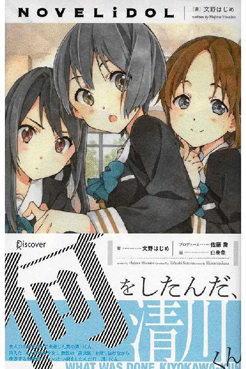
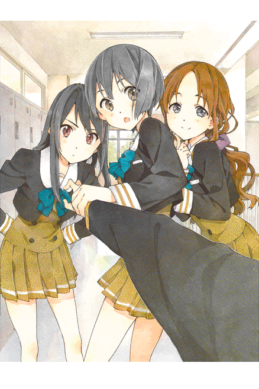
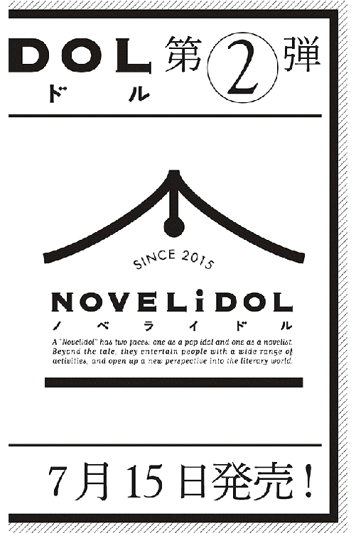
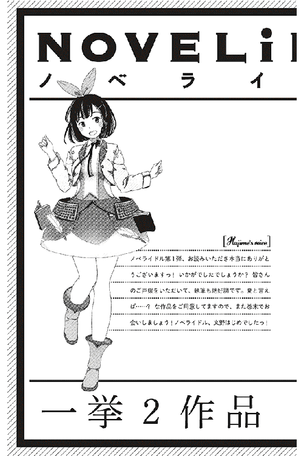

| 何をしたんだ、清川くん NOVELiDOL | |
| 文野はじめ | |
| (2015) | |


ＣＨＡＲＡＣＴＥＲ
御手洗 流（みたらい ながる）
低身長でスポーツ音痴、勉強も苦手という典型的な「モテない」主人公。大きなコンプレックスがあり、学校一のモテ男、清川くんに強いあこがれを抱いている。
清川くん
高身長でスポーツ万能、おまけに勉強ができて学年成績もトップ、という典型的なモテ男。彼は過去に「何か」をしたらしく、流は清川くんの姿でそれを探し当てねばならない。
賀古 未来（かこ みらい）
流の幼馴染にして清川ハーレムの一員。優しく、面倒見のいい女の子。流は彼女に淡い恋心を抱いていたが、年々過ごしていくうちに、スクールカーストに気付き、疎遠になっていた。
井川 くるみ （いがわ くるみ）
清川くんと双璧をなす、学校一の美少女でアイドル的存在。文句なしの大人気女子で、自分に絶対的な自信を持っている様子だが......？
管理人さん （かんりにんさん）
ハーレムの一員で、おっとりした典型的美人お姉さん。ちょっとふんわり系の、くるみとはまた違った魅力を持つ女の子。誰もがアプローチをかけているが未だ成功例はないそうだ。
「カノジョ」
ハーレムのなかで聞く、四人目の女性。何もかもが謎に包まれているが、カノジョがハーレムが抱える問題を作りだしているらしい。
走る、走る、走る。
毎朝の通学路。
見慣れたいつもの景色が、猛スピードで後ろにすっ飛んでいく。
いや、しかし、いつもとは何かが決定的に違う。
実は「僕」はそれが何か、よく分かっているのだが、認めたくない。
だから走っているのだ。
いつもの十字路に差し掛かると、僕は減速した。
ここは見通しが悪くて、ちょっと危ない。こないだも、ウチの高校の女子生徒がここで車に撥ねられたと聞いた。こんな非常時にも身の安全を図ることを忘れない自分のセコさに嫌になりながらも、一時停止。
と、その瞬間、直交する道から飛び出してきた女の子が目の前で派手に転んだ。
危ない危ない。
止まらなかったらぶつかっていたところだった。
うつ伏せに転び、顔面を擦りむいた女の子が、涙を湛えた目でこちらを見る。
転ぶのはいい。
誰だってそういうことはあるだろう。
しかしなんで食パンを咥えている？
その原色だけで構成された派手な制服はなんだ？
ピンク色の髪なんて、許される学校があるのか？
これが、さっきから離れない違和感だ。しかし、悪いけれど今はそれどころじゃない。女の子は恨めし気にこちらを一瞥すると、どこかへと去って行った。
意味ありげに、木の下で佇んでいる馬鹿でかいリボンをした少女。無視。
ヤンキーに囲まれて、救いを求める目でこちらを見る少女。悪いけどスルー。
まるで、ひところのゲームの世界だ。皆がこっちを見るということは、「僕」がこの物語の「主人公」的存在である、ということなのだろうか。いや、そんな疑問を感じるまでもない。確かに、今の「僕」は主人公にふさわしいスペックを備えているのだ。
そいつらだけじゃない。
街じゅうの女の子が、「僕」を見ている気がする。
主人公って、こんなに注目されないといけないのか？
一挙手一投足が監視されている感じがする。しかし、君たちに構っている暇はないのだ。
確かにかつての僕は、脇役から「主人公」になることを望んでいた。けれど、まさか本当に......。これじゃ、気の休まる暇がないじゃないか。
頭がかっかしている。「僕」は公園のトイレに飛び込むと、洗面台に頭を突っ込んだ。全開にした蛇口から直接、水を頭にかぶる。
渦を描きながら目の前の排水溝に吸い込まれていく水流を見ながら、呼吸を整える。
落ち着け、僕。
いきなり他人になるなんてことがあるはずない。マンガじゃないんだから。
水を止めて顔を上げれば、いつも通りの、自分の冴えない顔があるはずだ。
意を決して水道の水を止めると、「僕」は顔を上げた。
鏡の中には、水も滴るいい男がいた。
それは......僕なんだけど、僕じゃない、ってことで......。
すらりとのびた背、目鼻立ちの整った顔、きらきらとまぶしい瞳。
つまり、僕が清川君になってしまった、ということだった。
物語の出だしからこんなテンションで恐縮だけど、正直言って、今までの僕は毎日が憂鬱だった。高校生にして、すでに死を目前にした老人みたいな心境で日々を消費していた。
なんせ、僕には良いところがまったくない。
まず、顔が良くない。
なんど鏡を見ても、ぼんやりした、冴えないヤツがいるだけ。普通、自分が格好良く（あるいは可愛く）見えるはずの思春期にこれはいくらなんでも酷いんじゃないかと思うのだが、抗議する相手もいないので諦めている。まあ、十人並みが服を着て歩いているという感じだといえばそうなのかもしれない（ひいき目に見て、だが）。
成績もイマイチ。
いつも中から中の下あたりをウロウロしている。努力が苦手なので、上位を目指す気力はない。かといって、思い切って落第してアウトローを気取る勇気もないあたりが僕のダメなところだ。
それから、スポーツも好きじゃない。
家の脇の階段を上るだけで息が切れるくらいなので、マラソン系は論外。不器用なので、球技もダメ。そもそも、この科学技術万能の時代に球を投げたり駆けっこをしたりするのは危険で野蛮だと思うのだが、その疑問を体育教師にぶつけて、堂々と授業をボイコットする気力もない。体育の時間は、せめて恥をかかないよう、目立たないようにやり過ごす習慣がついた。
そして、性格はこの通り暗い。別に、好き好んで暗くなっているわけじゃない。今述べてきたような事実を受け止めると、暗くならざるをえないだけだ。そうでしょ？ 僕みたいな奴が、一発逆転する方法なんてあるのか、あるなら教えてもらいたい。
さらに、僕は友達が少ない。というより、いない。
スクールカースト上位の連中とつるむことはもちろんありえないけれど、オタク趣味がないから、オタクグループにも入れないし、入るつもりはない。したがって僕は、教室の片隅でひっそりと本を読んで毎日をやり過ごしている。
御手洗流、17歳（なんだこのトイレみたいな名前は!!）。早くも余生のような人生を送っている。僕は毎晩、海の底の貝になりたいと願いながら床に就くのが習慣だった。
ところが、忙しい神様は僕の願いを聞き間違えたらしい。ある朝目覚めると、僕は深海ではなく、見覚えのない天井を見上げている自分に気付いた。
不審に思いながら起きると、どうも部屋の様子が違う。体も、少し大きくなっている気がする。訝しんでいると、ノックの音がした後、ドアの外から誰かが声をかけてきた。
「もう学校に行く時間よ。起きなさい」
メイドさんか？ うちにはそんな人はいなかったが......。そっと見慣れない部屋を抜け出し、階段を下りると広い洗面所があった。とりあえず顔を洗い、いい匂いのするタオルで水をぬぐうと、僕は鏡を見た。
僕じゃない奴がいた。
それからの僕の行動は早かった。僕（明らかに僕ではない以上この呼称は不適切だが、便宜上、継続して使うことを許されたい。僕と表現する僕が僕じゃない、というこ
の状況を的確に言い表す言葉はこの世にないのだ）は直ちに部屋に戻るとクローゼットから制服を探し出して着替え、用意されてあった朝食を平らげ、ひとこと
「行ってきます」
と言い残すと家を出た。それまで、一言もなし。僕は極めて冷静に朝の準備を遂行した。人は、信じられない事態に遭遇すると、逆に落ち着くものだと知った。
自分が他人になる？ そんな馬鹿な。疑問に思うモチベーションすら湧かない。僕の中の、平凡な学生としての本能が、見たこともない家での朝の準備を、スムーズに遂行させたのかもしれない。
実にいい天気だった。
事件など起こりそうもない爽やかな朝。僕は背筋を伸ばして、見たこともない道を歩き続けた。
そのうち、違和感が遅れてやってきた。え？ 僕が突然他人になってしまった？ どういうことだ？ しかし、誰も答えは与えてくれない。元に戻るためには病院に行けばいいのか？ それとも１１０番？ いやいや、相手にしてもらえないだろう。急に別の世界に飛ばされたような感じ。
僕はいつしか、全力で走りだしていた......。
◆
僕は、恐る恐るトイレを出た。歩くだけで、体がギクシャクする。この体に慣れていないせいか。
夢を見ているんだろうか。そうだ、そうに違いない。なんかの本で読んだ記憶はあるが、他人になってしまうなんて、およそあり得ない話だ。そう考えると、やや気が楽になった。リアルな夢を見ることだってあるさ。とりあえず学校に向かおう。途中で目が覚めたらそれまでだ。
公園を出ると、見覚えがある新興住宅街になっている。この辺りは、前に来たことがある気がする。僕は意外と近所にいたということだ。
住宅街を抜けると、小ぢんまりとした商店街になっていて、本屋やハンバーガーショップ、喫茶店、服飾店なんかが並んでいる。ここは、普段僕が通学に使っている道でもある。まあ、僕は本屋以外には興味がないので（一緒に買い物をする相手もいないし）、ただの通学路という認識しかないんだけれど、改めて見ると色々な店がある。
まだ開店していない本屋の前で空を見上げると、綺麗な秋晴れが広がっていた。
何度も言うが、実にいい天気だ。
古来より伝わるお約束では、天気は主人公の気持ちを代弁していることになっている。危機が訪れるときには雷鳴が轟き、クライマックスではとりあえず豪雨だ。ハッピーエンドは、もちろん快晴。
しかし、僕がこんな大変な事態に置かれているというのに、この呑気な天気は何なんだろう。僕は天気にすら相手にされないんだろうか。いっそ雨か槍でも降りゃいいのにな、なんて思ってしまう。
先ほど、猛ダッシュして公園のトイレに飛び込んで顔を洗ったおかげで、僕はやや落ち着いていた。いや、状況を飲み込むことを諦め、弛緩したというべきだろうか。てくてくと学校に向かって歩く。
校庭には、部活の朝練をする生徒たちがいるようだ。
ようだ、というのは、あまり良く見ていなかったからだ。
そりゃそうだろう。
朝、目が覚めたら他人になってしまっていた人間にとって、部活なんかどうでもいい。ちなみに僕は、見た目から来る予想の通り、帰宅部だ。
「痛っ！ ちょっとどこ見てるの！ ......ってあれ？ 清川君？」
体操服姿の、ショートカットの女子にぶつかってしまった。
他人行儀な表現をしたが、僕はこの子を、10年以上前から知っている。
賀古未来。僕の幼馴染の女の子。いや、「もと幼馴染」というべきだろう。
今は......近づけない女の子だから。
体操服を着ているということは、未来は、バレーボール部の朝練を終えたところらしい。
未来はこちらを睨みつけた。
「ちょっと気をつけてよね......最近ぼーっとしすぎなんじゃないのかな？」
未来に話しかけられるのは久々だが、邪険なのは残念だ。それに、未来は僕を僕と認識していない。僕を「清川君」だと思っていることが、今の発言からわかる。
僕は清川君なのだ。
一旦乾いた背中から、再び汗が噴き出てきた。一度考えることを放棄したことで救われたはずの僕の心が、再びざわつく。
マジか？
やっぱりマジなのか？
僕は、清川君になってしまったのか？
更衣室に去った未来をぼうっと見送り、ふらふらと教室に向かう途中で、大勢のファンを従えて玄関のほうに向かう井川くるみとすれ違う。相変わらず、大女優並みのオーラだ。ところが、普段なら僕なんて眼中にないはずのくるみが、こちらをちらっと一瞥すると、言った。
「おはよう、清川君」
くるみだけじゃない。僕とすれ違う生徒たちが皆、「清川君」に声をかけてくるではないか。
「キヨ、１限が始まっちまうぞ！」
「清川君、どうしたの？」
「清川先輩！」
「清川君？」
「清川」
なんだかおかしくなってしまいそうだった。
始業のチャイムが鳴り始めた。そんな中、栗色の髪をふわふわさせながら、焦りもせずマイペースで校門に入ってくる上級生がいた。「管理人さん」だ。
「か、管理人さん！」
僕はすがりついた。いつもわが道を行く彼女なら、つまらない冗談に乗ることもないはずだ。
「あの、僕は誰ですか？」
管理人さんは一瞬、不思議な顔をしてからくすくす笑うと、カバンから手鏡を取り出して僕に向けた。
そこには、動転した顔の清川君がいた。
管理人さんが手鏡に手の込んだ細工をしていない限りは、この何とも珍妙な状況は間違いなく、夢ではないということだろう。そして、管理人さんが、そんな訳の分からない細工をする理由は、見当たらない。
深呼吸をひとつ。ふたつ。みっつ。
いくらしたところで、事実が揺らぐどころか、より鮮明になっていく。
ああ。夢なんかじゃない。これは現実だ。
受け入れなければいけない。
僕は、清川君になってしまったのだ。
◆
どの物語にも、主人公と、ヒロインと、無名の脇役たちがいる。
非凡な力を持つ主人公と、美しくて魅力的なヒロインたちによって、この世の物語は出来上がっているといっても過言ではない。ただ、それだけではちょっと画面が寂しいので、背景を埋めるために僕のような脇役がいるわけだ。
未来や管理人さんは、文句なしのヒロインだ。そして、彼女たちに慕われている清川君こそ、この物語の主人公である。
清川君。
それは、僕の対極にいる人間だ。
まず、イケメン。
その整った顔立ちは、美少年であった面影を残しながら、力強い青年の魅力を持ちつつあった。女生徒はもちろん、女の先生までが見とれていることがしばしばあったが、無理もない。この学校に入った女性（含む教師）は、一度は清川君に惚れると言われているくらいだ。
男の僕でさえ、ずっと眺めていたくなるのが清川君だ。体育の後など、背が高く、体格もいい清川君が更衣室で着替えているところに出くわすと、僕は彼の裸を見ることに罪悪感を覚えた。自分の、痩せた貧弱な体と比べてしまうからかもしれないが。
成績は常に学年トップクラス。ガリ勉ではないが、頭がいいから、効率よく勉強できるらしい。朝のほうが集中できるとかで、毎日早朝に学校に来て予習と復習をしている。たぶん、放課後は勉強ではなく、遊びに時間を使っているんだろう。ついでに言うと、料理が趣味とかで、家庭科の成績までいいので困る。
さらには、スポーツマンでもある。球技からマラソンまで、なんでも校内トップレベルでこなしてしまうから嫌になる。
性格はリーダーシップに富んでいて、生徒会長もやっている。持ち前の雄弁で強面の教師とも真っ向からやり合える彼には、全校生徒が信頼を寄せていると言っても過言ではない。
というと、とっつきにくい完璧野郎という印象を与えかねないが、そんなことはない。清川君には適度に「抜けてる」ところがあって、それがまた彼の魅力になっていた。
生徒会長選挙のときのこと。
立候補した生徒は、全校生徒の前で演説をぶつことになっていた。
僕は、体育座りで立候補者の演説を聞きながら、必要もないのに緊張していた。上がり症の僕は、あの場所に立つ自分を想像するだけでも卒倒しそうになるのだ。もっとも、常に脇役である僕にはそんな可能性は微塵もないのだから、心配はいらないのだが。
やがて、清川君が演説台の前にやってきた。しばらくもぞもぞしていたかと思うと、彼は言った。
「ええと、カンニングペーパーを忘れてきてしまいました」
会場は爆笑に包まれた。一言で生徒の心を摑んだ清川君は、アドリブで見事な演説を繰り広げ、圧倒的な得票率で当選した。僕ももちろん清川君に投票した。
遊びも好きで、企画好き。春にはバーベキュー、夏は海、冬はスノーボードと、率先して人を集めてイベントをしていた。なんと僕も声をかけてもらったことがある。もちろん恐れ多いので辞退したのだが、そのときの清川君が、本気で残念がってくれていたことに僕はちょっと感激した。
そんな清川君の周りには、常に人が集まる。当然だ。しかし彼は決して驕ることなく、僕のような日陰者も含めて、万人にフランクに接していた。
清川君を囲むグループの中に、特に目立つ女生徒が３人いた。男子は彼女たちと清川君との関係を指して、嫉妬交じりに「ハーレム」と呼んだ（陰でそんなことを言っている連中も、清川君の魅力には弱いのだが）。
ハーレムの構成員のひとり目は、さっきすれ違った井川くるみ。どこの学校にも、「女王」がいるものだが、ウチの場合、彼女がそう。
まず、なんといっても文句なしの美少女である。
後ろ姿だけでも美少女だとわかるほど......といえばいいのだろうか。とにかく彼女が放つ美少女オーラというのはとんでもないもので、彼女は後ろ姿だけで男子のハートを串刺しにできるのである。
朝。肩くらいまで下ろした、艶やかに輝く黒髪を揺らしながら登校する彼女の後には、ぞろぞろと呆け顔の男子が列を成す。いや、実際に列ができるわけじゃないが、彼女の後に不自然に男子が多いのは確かだ。
目鼻立ちがスーパー整っているのは当然として、スタイルもいい。
身長は、１７０センチメートル近いんじゃないだろうか。脚も長い。彼女よりも身長が低い僕は、廊下ですれ違うたびに同じ人類なのか、という疑問が浮かぶ。
もっとも、彼女とすれ違うだけで圧倒されるのは僕だけではないだろうが。
某ファッション雑誌のモデル（読者モデルじゃない。正真正銘のモデルだ）もやっている。そのへんのコンビニにも置いてある、あの某雑誌だ。
が、普段はあくまで普通の高校２年生。しかも結構優秀とくるから、嫌になってしまう。要は、女版の清川君である。
ということは、見た目だけじゃなくって、人間もできているということだ。
気が強いところはあるようで、携帯電話でモデル仕事のマネージャー（？）と口論しているのを見たこともあるが、普段は僕たち「下々」のものにも普通に笑顔で接してくれる。まあ、営業スマイルという感じもあるのだが。
こんな僕だって、一度、彼女と話したことがあった。
他人からすれば些細な出来事なのだが、僕の心の中では宝物のように大切にしまってある......というかこういう出来事をかき集めでもしないと、自分の中に輝く思い出なんて、本当の本当に、ひとつもなくなってしまうのだ。
あれは忘れもしない、去年の９月６日のことだ。
文化祭の１日目。
僕は特にやることもなく、校内をフラフラしていた......。
と、ここで話は逸れるが、僕みたいな奴にとって文化祭ほど嫌なものはない。
だってあれは、友達がいることが前提に成り立っているじゃないか。
生徒は全員、何かしらの出展が義務付けられていたけれど「仲のいい生徒と一緒になって出展内容を企画しなさい」なんて、拷問だ。
僕は文化祭の準備期間中、男女の笑い声が響く、普段よりも高揚した教室の中で、耐え難きを耐えつつ１冊の同人誌を仕上げた。冴えない高校生を主人公にした私小説のつもりだったが、出来上がってみると、それは僕が劣等感を吐き出したノンフィクションになってしまっていた。
しかしそれでもいいんだ。一応、何かを作れば出展と認められる決まりになっていた。たとえそれが、校舎の外れ、トイレ脇の物置を改造した文芸部の部室にぽつんと置かれた、ホチキス留めの同人誌でも。おかげで、こんな愚劣なお祭りに参加しないで済むんだからありがたい......などとつぶやきながら誰もいないはずの部室に戻ると、くるみがいた。
僕の心臓は止まった。
しかし次の瞬間、長い脚を組んだ彼女が熱心に読みふけっているのが僕の書いた同人誌だと気付くと、心臓は再び全開で仕事をし始め、顔は紅潮し全身から汗が噴き出てきた。
「ぼ、ぼぼぼ僕の......」
と声にならない声でうめくと、頭の回転もいい彼女はすぐに、僕が言いたいことに気付いたらしい。
「これ、君が書いたの？」
「は、いえ、書いたというかその......」
敬語になってしまう。同学年なのに。
彼女はちょっと笑い、ぱたんと本を閉じると、立ち上がった。部室から出ていきながら彼女が僕に掛けた言葉は、今でも忘れられない。
「この小説、いいね」
僕はさらに驚いた。僕のような脇役に声を掛けてきただけでもびっくりなのに、こんな同人誌を褒めるとはどういうことか。
「ど、どこがですか？」
「ん？ リアルじゃん。主人公は君？」
「ま、まあ、そんな感じで、はい」
「私小説なのね。でも、主人公は年頃なのに恋愛要素がないなあ」
一瞬、頭に未来の姿が浮かんだが、すぐに首を横に振ってかき消した。
「僕には恋愛の経験がないので......」
「ふーん。確かに君、そんな感じだよね」
う。否定できないが、このセリフは刺さる。
くるみはよくわからないことを言うと、去っていった。
「私と同じだ......。小説でも、書いてみちゃおうかな」
この最後のくるみの発言はちょっと気になった。
というのも、くるみは清川君と付き合っているという噂があったからだ。
２人が一緒に帰ったり、軽口でからかい合ったりする姿がよく目撃されるのが根拠になっていた。あのくるみと日常的に話すことを想像するだけで僕は卒倒しそうになるのだが、そこは流石、清川君だ。
しかし僕は、２人が付き合っているという説は、生徒たちによる清川君への嫉妬交じりの悪口みたいなものだと思っていた。だいたい、ハーレムの女生徒は他にもいるのだ。
さっき校門で話しかけた「管理人さん」もそう。
くるみが２年生の女王なら、管理人さんは３年生の聖母という感じだ。
ただし、くるみとはまったくそのタイプを異にしている。
くるみは美少女だが、管理人さんは美女である。
それも、とても高校生だとは思えない色気を備えた美女だ。
管理人さんは、他人と喋るときの距離が妙に近い。
そんなとき、話し相手は、彼女のゆるくウェーブした栗色の髪の下にある豊満な唇から、ゆっくりと言葉が出てくるのをどぎまぎしながら見つめることになる。
顔の整い具合はくるみ同様、芸能人レベルだ。
けれど、管理人さんには独特の親密さを相手との間に作り上げる能力があった。どんな話もニコニコと楽しそうに聞いてくれるし、袖を引っ張ったりとボディタッチも多い。そういうところがまったくないくるみに憧れる男子は多かったが、告白した奴はほとんどいないと聞く。くるみには、どこか相手を威圧するところがあるからだ。
ところが、管理人さんに告白する男子は後を絶たない。
玉砕の報告が次々に届いているにも関わらず、だ。それは「俺でもいけるかもしれない」と思わせてしまう、管理人さんの危うい魅力のせいだろう。......彼女の犠牲者には、男性教師も含まれていたという噂もある。
実際、管理人さんは誰とでも分け隔てなく喋ってくれる。僕が口を利ける、数少ない女生徒のひとりでもある（だからさっき、校門のところで喋りかけたのだが）。彼女も読書が好きで、図書館で話しかけられたのが、知り合うきっかけだった。
僕は、休み時間は基本的に図書館にいる。
誰とも喋らずに済むのが最大の理由だけれど、本が好きだというのもある。本の、古くなった紙のあの匂いに包まれていると、僕は日々の憂鬱を忘れることができた。
図書館の奥には、古今東西の古典がまとめられた場所がある。古い本が入った書架に囲まれるように、やはり古い机がひとつと椅子がふたつ、ひっそりと置かれていた。
僕はそこがお気に入りだった。古典が好きなわけじゃない。誰も来ないからだ。そこで、よくわからない古典文学に囲まれてぼんやりするのが、至福の時間だった。
ある日、僕はそこで一冊の本を読んでいた。ギルガメシュとかいう王様が永遠の命を求めて旅立つ話で、本の後書きによれば、なんでも世界最古とされる物語だという（そういえば、世界史の授業でも名前を聞いたような気がする）。話の筋は単純で、別に面白くはなかったけれど、不思議と引き込まれてしまった。
僕は一気に読み終わり、顔を上げた。すると目の前に管理人さんがいたのだった。
僕は息を呑んだ。それまで僕は管理人さんと喋ったことはなかった（もちろん、その伝説的な存在は知っていた）。管理人さんは僕の目をまっすぐ見つめながら
「昔の本、好き？」
と、聞いてきた。
「は、はい。好きです」
と僕は答える。こうして、僕らは知り合いになった（友人と言いたいところだが、とてもじゃないが自信がない）。
管理人さんは、その容姿同様、高校生とは思えないほどの博覧強記を誇る。あらゆる古典を読んでいるんじゃないかと錯覚するほどの管理人さんに、僕が、図書館の片隅で教えられたことは多い。
古典の授業で習った、意味不明だった『万葉集』の読み方も、管理人さんに習った。多く収められている「相聞歌」は、恋愛を歌ったものだという。万葉の昔から、上は天皇から、下は詠み人知らずの農民まで、恋をしていたのだ。
「あの頃の関東は、沼と川ばっかりだったわ。だから、男の人が恋人の所に行くだけで一苦労。そういう歌もあるの」
管理人さんはいつも、まるで自分で見てきたようにものを言う。
「なんだか素敵な話ですね。まあ、僕には無縁ですけど」
「無縁？ 気になる子はいないの？」
「い、いえ。いません」
仮にいたからといって、それがどうなんだ。今の僕と付き合いたいヤツなんているわけないじゃないか。思い上がって告白でもしてしまったら、10年以上保ってきた、その子との関係まで壊れてしまう。いや、あくまで仮定の話だけど。
「ふうん。そうかなあ」
と管理人さんは言った。
管理人さんを前にすると、考えを見透かされているようで、ちょっと怖い。
ちなみに、管理人さんという変なあだ名の由来はよくわからない。気が付いたら、皆がそう呼んでいた。親がマンションをたくさん持つお金持ちで、管理人さんもその管理をしてるからだとか、昔流行ったなんとかという漫画のヒロインに似ているからとか、諸説あるが、はっきりしない。まあ、その辺の謎めいたところも彼女の魅力ではある。お嬢様っぽいのは事実だし。
そんな管理人さんとも親しいのが清川君だ。
休み時間に、管理人さんがわざわざ清川君のところまで来ることもしばしば。本を貸し合ったりしているらしい（清川君は読書家でもあるのだ。どこまで完璧なら気が済むのか）。あるいは、あの管理人さんさえも清川君にはメロメロなのかもしれないが。
そして、ショッキングなことだが、僕の幼なじみの未来までもが、清川ハーレムの一員に数えられている。未来は生徒会の書記をやっているから、そこで仲良くなったんだろうけど、ここ半年くらいは、特に「親密」になってきた気がするから気が気でならない。いや、別にどうでもいいんだけど。
ちょっと前の放課後、図書館で時間をつぶした後、僕は軽い空腹を覚えて通学路のハンバーガー屋に入った。
すると、そこには未来と清川君が一緒にいた。
まだ２人には気づかれていない。
僕はすぐに店を出て、電柱の陰から２人を観察した。
未来は清川君に向かって、すごく真剣な顔で何かを喋っていた。目には、かすかに光るものさえある。それを、ややげんなりした顔の清川君が受け流す風だった。友人同士の談笑という感じではない。もっと近しい関係の２人の、とても深刻な話......。
見てはいけないものを見てしまった。僕の空腹は吹っ飛び、その日は夕食もほとんど喉を通らなかった。
無理もない。未来だって年頃の女の子だし、相手はあの清川君だもん。しょうがない、しょうがない。僕にとっての選択肢が、またひとつ消えただけだ。
とまあ、こんな感じでゲームの主人公みたいな生活を送っているのが清川君だ。他にも、清川君の周囲には、たくさんの魅力ある男女が集まる。僕はそんな清川君に憧れていたし、清川君になりたかった。
とはいえ、いざ叶うと困る願いも、世の中にはあるということがたった今、わかった。僕はひたすら走りながら、自分の身に起こったことを再確認していた。
僕は清川君になってしまったのだ。マンガみたいな話だが、マジで。
管理人さんの手鏡に映った清川君の顔を見た僕は、そのまま校庭を飛び出し、ひたすら走り続けていた。今朝から断続的に僕を襲っていたパニックが、最高潮に達したのだ。
が、さすがに胸が痛くなってきた。清川君の心肺能力も限界が近いらしい。僕は速度を緩め、歩き始める。
困った。
これは夢だろうか？ けど、頬をつねると痛い。いや、リアルな夢なのかもしれないが、醒める気配が一向にないのは困る。
そりゃあ、困りますよ。いきなり他人になったら、誰でも困るでしょう。例えば......例えば、なんだろう。僕は考え込んでしまった。あまりのトンデモ展開に、困る理由が見つからなかったからだ。
ええと、そもそも、なんで僕は困ってるんだ？
だって、僕はずっと清川君になりたいと願っていたんじゃないか。そうしたら、念願叶って憧れの清川君になれた。すべての面で僕の上を行く清川君に。
何を困ることがあるんだ？ 万々歳じゃないか。
女の子はよりどりみどりだ。もしこれが夢だとしても、醒めるまでモテモテライフを満喫するだけの話だ。容姿、学力、体力。すべてに恵まれた、ゲームの主人公みたいな清川君のハーレムストーリー！ あらゆるの男子の夢だろう。
前言撤回。僕は立ち上がった。
今日から僕は、清川君になったのだ！
◆
清川君としての生活は、実にいいものだった。
「清川君、借りたＣＤ最高だった！ 私のお勧めも聞いてくれる？」
「今度の日曜のバーベキューだけど、女子高の友達も誘っていいかなあ」
どんどん周囲が話しかけてくる。さすが清川君。
こういう状況に慣れていない上に、今朝清川君になったばかりの僕は、相手がどういう用事で接触しているのかを把握していない。だからどうしても返事が、「うん」とか「ああ」とか、曖昧な感じになってしまうのだが、今の所、バレてはいないらしい。
そもそも、ある人間の中身が、別の人間と入れ替わったんじゃないか？ などと疑いを抱く奴なんているわけがないのだが。もしいたら、そいつは神様か何かでしょう。
お、管理人さんが教室の外からこっちを見ている。何か含みを持った視線。愛かな？
参ったなあ。忙しいんだけどなあ、などと呟きながら立ち上がると、管理人さんはどこかに去ってしまった。惚れられちゃったかな？ でも、すみません。他にも相手をしなければいけない女の子はたくさんいるので......。まあいいや。後でかまってあげましょう。
憧れの清川君。いざ当人になってみると、その凄さをますます痛感できた。
まず、友人・知人がすごく多い。男女問わず、どんどん話しかけてくるからびっくりする。さっきの、女生徒に貸した（らしい）ＣＤじゃないが、清川君があちこちに、「会話の種」みたいなものを撒いていたことを、今さらながら実感した。社交的な奴だということは知ってたけど......。
さらに、勉強も運動もできる。
机の中からは、教科ごとに分かれた、綺麗に書かれたノートが出てきた。教師の板書も、馬鹿正直にそのままノートに書き写すのではなく、リアルタイムで要約しているらしい。今まで見たどの教科書よりもわかりやすいじゃないか。さらには予習もばっちり。今日の授業で扱いそうな演習問題が、もう解いてあったのには驚いた。しかもご丁寧に、今日の授業で扱う項目に付箋まで立ててあるじゃないか。おかげで、その日の授業は楽勝だった。
けれど、スポーツはどうだろう。６限目の体育はバスケットボールだったけれど、ちょっと不安だった。なにせ、自分の体じゃないのだ。予習もできないからヘマをしそうで怖いし、運動神経がいい清川君が下手をこいたら、怪しまれるんじゃないか？
......なんて心配は無用だった。
授業中ずっとコートの中を走っていても息が切れないし、シュートはポンポン入る。ゴールのたびに、見ている女子から黄色い声が上がるのが気持ちいい。
体を動かすことが、こんなに楽しいものだとは知らなかった。もう、隅っこで体育座りをしながら授業が終わるのを待つ必要はないのだ。
今までの体育の時間はなんだったんだろう。天国と地獄の差だ。別人になるだけで、人生はこんなにも変わるものなのか。
友人が多くて、勉強も運動も得意、つまり出来ることがたくさんあるということは、要は人生の選択肢が多いということだ。将来は何にでもなれそうだし、何になっても上手くいくと思う。
高校生活はこの後も順風満帆だろうし、大学受験にも苦労するとは思えない。一流大学にすんなり入ったあとは、講義にサークル活動にと大活躍。ミス・キャンパスレベルの彼女が、常にその傍らにはいるはずだ。
入社した超一流企業ではいきなり大きな仕事を任されるが、ひるむことなくこなし、社内で高い評価を得る。順調に出世し、大きなプロジェクトを完成させる頃には、美しい妻との間に、可愛くて聡明な子供が生まれているはずだ。男の子と、女の子。
仕事で世界中を飛び回るが、家族も大切にする。どこかの高級住宅街に豪邸を構え、週末は庭で遊ぶ子供と洋犬を眺めながら、妻と共にブランデーを傾けるのがお決まりの過ごし方だ。こんな感じで、社会にとって大きな意味を持つ仕事をこなしつつ、幸せな毎日を送るんだろう。僕が表紙を飾る『ＴＩＭＥ』誌が世界中の書店に並ぶ光景が目に浮かぶようだ。
やがて、世界的な偉業を成し遂げた後、惜しまれつつ一線を退き悠々自適の生活を送る僕のところに、たくましく、あるいは美しく育った子供たちが、孫を連れて遊びに来る。子孫は、僕が未来へ向けて残す僕の分身だ。老いた僕は彼らに、僕がやり残した数多くの選択肢を託し、何も思い残すことなく大往生する......。
完璧な物語じゃないか。素晴らしき哉、人生！ 今までの自分はなんだったんだ？
となると、まずは嫁（候補）探しだ。どの娘から攻略しようかなあ。いきなり、メインヒロインっぽいくるみからいっちゃってもいいのかな？
「私がどうかした？ 攻略ってなに？」
「わあっ」
目の前にくるみがいた。授業はとっくに終わり、もう放課後だった。
「い、いや、別に......な、何か言いましたか？」
「ずうっとブツブツ言ってたじゃない。選択肢がどうとか、くるみがこうとか......どうかしちゃったんじゃないの？」
危ない危ない。独り言は本当の僕のクセなのだが、慎もう。もっとも、どうかしちゃったのは事実なのだが、くるみに知られるわけにはいかない。
周りを見ると、僕とくるみしか残っていない。くるみは僕を待っていたんだろうか。
「な、なにか用ですか？」
「え。別に。これから撮影だから、準備にちょっと時間が掛かっただけ」
そうですか。モデルさまに声をかけてもらえるとは有り難いお話で、流石清川君だ。が、なんか態度がとげとげしいのが気になる。
「清川君はどうせ病院でしょ？」
病院？
なんだろう。清川君に何か持病でもあったっけ。
それに「どうせ」っていうのも、妙に攻撃的だ。
とりあえずは、怪しまれないよう適当にお茶を濁すことにする。
「ああ、もちろんそうだよ」
「......ふーん」
くるみの声のトーンが下がった。何かマズイことを言ったのか？
「ま、いいや」
よくわからないが、許されたらしい。くるみは、嫌みにも聞こえるよくわからないセリフを残して去った。
「色男は忙しいのね」
あれ？
僕が予想していたくるみの態度ではない。清川君とはもう少し仲が良かったと思うのだが、何かあったんだろうか？
ずいぶん学校に長居してしまった。
もう夜だ。帰らなきゃ。
カバンを掴み、立ちあがる。
が、すぐに座ってしまった。そういえば、家までの道がわからない。朝は無我夢中で走っているうちに学校に着いたから良かったものの、帰りはそうはいかない。
うーんと悩んでいると、管理人さんが現れた。
「あら、まだいたの？」
まさか、帰れないんです、とも言えない。
「まさか、帰れないの？」
管理人さんがいたずらっぽく笑う。
僕の背中を滝のような冷や汗が流れおちたが、管理人さんは続けた。
「......本が読み終わらないから？ 目に悪いわよ」
「はは、そのまさかです。ついつい読書に夢中になっちゃって......」
僕は口から出まかせを言う。何とか切り抜けた。
「今は何を読んでいるのかしら？ 見せてくれる？」
一難去ってまた一難。管理人さんは僕をいじめたいのか？
ええい、ままよ。他人の鞄を漁るようで気が引けるが、僕は鞄に手を突っ込んだ。
すると、幸いなことに一冊の本が手に触れるではないか。
「これです！」
「......それを夢中になって読むなんて、さすが清川君。生徒の鏡ね」
僕の手に握られているのは生徒手帳だった。管理人さんはくすくす笑いながら去って行った。後には生徒手帳を握りしめた僕だけが残される。
僕はしばらく固まっていたが、気付いた。生徒手帳に住所欄がある。そこを見れば清川君の家の場所がわかるではないか。さっそく住所を確認するが、あまり土地勘がない場所だった。朝の僕は、清川君の家を飛び出てから相当の距離を走ってきたらしい。
悩んでいるうちに、カバーの折り返しにバスの回数券が挟まっていることに気付いた。高校の前のバス停から、「宮島医療センター前」行きだ。まだ一枚も使われていない。
助かった。清川君はバス通学だったんだ。これに乗っちゃえば、清川君の家は近所だろうから、探す手間も大してかからないだろう。僕は停留所に向かい、幸いすぐに来たバスに乗った。
この時間のバスには、高校生はあまりいない。
仕事帰りのサラリーマンと、年寄りが多い。病院に行く見舞客かな？
宮島医療センター前に近づくにつれ、車内が混んできた。座っていた僕は、目の前にいたおじいさんにしぶしぶ席を譲り、立ちあがった。普段の僕なら寝たふりを決め込むが、清川君なら、たぶん立っただろうから。老人に席を譲るのは、はじめての経験だ。ちょっと恥ずかしい。
ところが、おじいさんは遠慮するではないか。近いから大丈夫、というのだ。車内の目が僕らに注がれる。おいおい、勘弁してくれよ。恥ずかしいじゃないか。押し問答がしばらく続いたが、僕はなんとかおじいさんを押し切り、座らせることに成功した。僕を称賛するような乗客の視線と、おじいさんの丁寧なお礼がこそばゆい。ちょっと勇気がいるけど、席を譲るのも悪くないもんだなあ。
それで僕に気付いたらしく、奥のほうに座っていたおばあさんが、声を掛けてきた。
「あら、久しぶりじゃない。お見舞いなのね？ 偉いわねえ」
お見舞い？ 何のことやらさっぱりだが、清川君を演じるための情報はできるだけ多く欲しい。適当に調子を合わせる。しかし、老婆からもモテるとは、清川君恐るべし。
「はい。おばあさんのほうは、いかがですか？」
「いかがといってもねえ」
おばあさんは苦笑いした。
「お父さんは末期だからね。まあ、ゆっくりお迎えを待つくらいしかできないわね」
しまった......。
僕は返事に窮してしまう。
「でも」
と、おばあさんのほうから話を再開してくれたのでほっとした。
「このあいだ、あなたが病室まで来てくれたじゃない。お父さん、抗がん剤のせいで全然食べられなかったんだけど、あれで少し、食欲が戻ったのよ。やっぱり若い人の持つエネルギーって、あるみたいね。ありがとう」
清川君がマメなのは、女の子だけ、学校だけではなかった。遠い病院の、死にかけの赤の他人にまで気を使っていたのだ。僕はそんな清川君に半ば呆れながらも、彼の周りに人が集まる理由をちょっと理解した気がした。人に必要とされるだけの行為を積み重ねてきたからこそ、人は清川君を求めるんだ。いくら顔がいいとはいえ、根拠なしにモテているわけではない。
しかし、お見舞いってなんだ？
丘に差し掛かったバスは、ゆっくりと坂を上りはじめた。車窓からは、灯りがともりはじめた夜の街が眼下に見える。
別のバスが対向車線を下ってくる。病院から帰るバスだろう。
すれ違った瞬間、夜景に見とれていた僕は我に返った。
今のバスに乗っていたのは、未来じゃないか？ あの横顔と髪型からして、間違いない。でも、未来の家とは全然方向が違うじゃないか。あいつ何をやってるんだ？
あ、わかった。
わかってしまった。
清川君の家がこっちにあることと関係があるんだ。学校の帰りに清川君の家に立ち寄ったけれど、本人がいないから帰ってきたってことか。どうりで妙に沈んだ表情だと思った。しかし、ふたりはもうそんな関係になってるのかよ......。親公認の関係ってことじゃないか。未来は、そんなことは一言も言ってくれなかったな。
悶々とする僕とは無関係に、やがてバスは、丘のてっぺんに近い場所で停車した。
宮島医療センター前だ。
「もう一回くらい、お父さんの病室に来てくれないかしら？」
降りぎわに、おばあさんが言った。僕はうなずく。あまり先延ばしにはできない、そして破ってはならない約束だろう。
続いて僕もバスから降りると、目の前には病院の大きな正門があった。清川君の家を探そうとするが、そもそも周囲に住宅は見当たらない。よく考えると、丘の中腹には家はまったくなかった。ここは住宅街じゃなく、丘全体が病院の敷地になっているんだろう。そして僕は今、そのてっぺんにある門の前にいる。
どうしよう。
もう一度バスに乗って街まで戻ってもいいんだけど、清川君がここまでの回数券を持っていたのが気になる。清川君は、ここに来ているらしい。つまり、ここには、清川君に関係する何かがあるはずだ。探ってみる価値はある。
くるみやおばあさんの発言もそのことを裏付けている。さっきすれ違った未来も、ここに来ていたとみていい。この病院は、清川君と周囲の人間、くるみや未来にとっても関係のある場所らしい。今の僕は、清川君になりきらなければならない。そのためには、清川君に関する情報が必要なのだ。
僕は、思い切って病院の中に入ってみることに決めた。
自動ドアを抜けると、ぷんと薬品の匂いがする。僕は病院が嫌いだ。病院が好きな奴もいないだろうが、普通以上に嫌いだ。死の匂いがするから。
しかし、こんな巨大な病院でいったいどこに行ったらいいのか。手がかりは何もない。入り口で考え込んでいると、綺麗な看護師さんが声を掛けてきた。
「あら、清川さんじゃないですか！ 久しぶりですね」
おいおいおい。看護師さんまでナンパしていたのか清川君は。
まさか......この人が目的でわざわざ病院まで......？
「私も今から行くところですから、一緒に行きましょう」
看護師さんは、先に立ってどんどん歩き始めた。慌てて僕もついていく。
一般病棟の奥のほうに、個室が並んでいた。
「来てくれて本当によかったです。"カノジョ"、清川さんが来てくれなくなってからふさぎ込んじゃって......事故のダメージもまだ残っているし」
事故？
"カノジョ"？
「さっきも、いつもの高校のお友達が来てくれていたんですよ」
「すいません！」
僕は反射的に叫んでいた。
「忘れ物を思い出したので、今日は帰ります！」
「え？ せめてお顔だけでも......」
その返事を最後まで聞かずに、僕は駆けだした。
僕はここに来ちゃいけない。そう感じたからだ。ここに、いったいどんな理由で、誰がいるのかさっぱりわからないが、ここは本来の清川君が来るべき場所だ、と思った。
誰にでも、自分だけの場所があって、そこには自分だけの人がいる。それは、その個人の歴史だ。いきなり入れ替わったとしても、そう簡単に引き継げるものではない。
いや、あるいは引き継げるのかもしれないが、それは少し恐ろしい。
清川君という、僕にとっての他人の深淵を覗くことになるからだ。
病院は、どう考えてもポジティブな場所ではない。
あの清川君にすら、辛いことや苦しいこと、悲しいことがある、という当たり前のことを僕は忘れていた。清川君もひとりの人間なんだ。彼が築いてきた長い歴史があり、中には負の記憶もあるだろう。それを受けとめ、なおかつ普通に生活を繰り返すことができるのだろうか？ どんなに演技に力を入れたとしても、僕は清川君ではない。
死ぬまでの途方もない時間を、そうやって嘘をつき続けながら生きられるのだろうか？
正門の前のバス停に走り着くと、夕日が遠くに沈んでいくところだった。眼下の町が、深くて暗い闇にゆっくりと覆われていく。
こうして夜がやってきて、朝がやってくる。
僕はまるでベルトコンベアに乗るように、清川君として、生きていく。
一生......そうなるのか？
言いようのない不安がじわじわと、僕の背中を覆い尽くしていくのを感じた。
２時間後。僕は清川君の部屋のベッドに寝転んでいた。
バスの運転手さんに住所を聞き、なんとかたどり着いた清川君の家。美しいお母さんが作ってくれた手料理を食べ、慣れない広いお風呂に入ると、猛烈な睡魔が襲ってきた。
疲れる１日だった。いろいろなことがあったが、今日はもう何も考えたくない......などと思っているうちに、眠り込んでいたらしい。
◆
不思議な夢を見ていた。
上下も左右もない宇宙空間みたいなところに僕はいた。ここがどこかはわからない。歩く......というか、移動することはできるらしいが、動いたとしても、どこにもたどり着く気がしないほど広い空間だった。
いや、広いだけではない。古い気もする。
つい最近できた場所という感じではない、１００年前、１億年前からずっとあるような場所だ。もしかしたら、はじまりも終わりもないのかもしれない。
そんなところにいきなり放り出された僕を、孤独が襲ってきた。寂しくなった僕はちょっと動き回ってみるが、何もない。
いや、あった。巨大な木みたいなものがあった。あまりに大きいから、気が付かなかったのだった。太い、しっかりした幹が枝分かれし、その枝もさらに無数の細かい枝に分かれている。枝の先は細かすぎて、見ることはできないが、無数の葉があるようにも感じる。
よーく目を凝らすと、時間が流れるにつれ、樹液が枝の先のほうに向かっていることがわかった。あるいは、樹液が時間そのものなのか。樹液＝時間はだんだんと枝分かれし、いずれどこかの葉に行きつくんだろう。
興味を持った僕はちょっとした木登りを試みた。葉はどうなっているんだろうか？ 苦労して一枚の葉にたどり着いた僕は驚く。老人になった僕が映っていたからだ。僕はびっくりして枝から転げ落ちた。葉の中の僕の隣には誰かがいた気もするが、よく見えなかった。
落っこちた僕は、奇妙なことに気付いた。この大木には根がないのだ。幹のもう一方、つまり本来なら根があるほうにも、根の代わりに、やはり無数に分かれた枝と葉があった。木のお尻どうしをくっつけたような、奇妙な大木なのだ。
本来なら根がある側の枝にも無数の葉が付いているが、こちら側に関しては、樹液＝時間は、葉から幹に向かっている。反対側とは、流れが逆なのだ。
僕は、こちら側の葉にも目を凝らしてみる。やはり、一枚一枚に何かが映っている。更に近づくと、そこにいたのは赤ん坊の僕だった。過去？ 僕は葉を手に取るべく、近づこうとした。
「あまり見ない方がいいわ。辛くなるから」
突然の声にびっくりして振り向くと、そこには管理人さんがふわふわとたたずんでいた。彼女は、いつにない、深刻な顔をしている。
管理人さんが近づいてきて、助けを求めるような目で見ながら口を開いた。
「病院に行ったのね」
「はい」
「......カノジョはこの物語の最後のピース。すべての混乱は、あの子につながっている」
最後のピース？ すべてがあの子につながっている......？
「一体、どういうことなんですか？ 言っている意味がわからないです」
「今はわからないかもしれない。わからない方が幸せなのかもしれない。けど、あなたはいずれ、わかる。すべてがわかる。けれど、わかってもどうしようもない。私のせいでこんなことに......ごめんなさい」
◆
目が覚めると、窓から朝日が差し込んでいた。変な夢を見ていた気がする。そのせいか、あまり眠れた感じがしない。まだ早いから、もう一眠りしちゃおうか。
「うわあ！」
僕は大声で叫び、飛び起きていた。大変なことに気がついたからだ。
僕はきのう、いきなり清川君になった。それはいいとして（よくはないが）、もともとの「僕」はどうしたんだ？
僕が清川君になったということは、今頃、清川君が「僕」になっている可能性が大だ。その「僕」は、どこで何をしているのか。
これは由々しき問題だ。
僕が清川君になったのは、百歩譲ってよしとしよう。だが、清川君が僕になるのはまずい。スクールカーストの階段を転げ落ちることを意味するからだ。今まであんなにちやほやされていた清川君が、一日中誰にも相手にされない生活に耐えられるだろうか？ 無理だろう。なんだか申し訳ない。
それに、僕にだって他人に見られたくないものくらい、ある。人間関係は薄くとも、ルサンチマンを書き溜めた暗黒ノートを読まれてはかなわない。
僕は飛び起き、着替えると、驚く美人母には目もくれず家を飛び出た。向かう先は本来の我が家、御手洗家だ。
ちょうどいい具合に近所までのバスの路線があったお蔭で、あっという間に家に着いた。僕は門の前にたたずむ。
たった一日留守にしただけなのだが、すでに懐かしい。母はもう、毎朝の習慣である庭の植物への水やりを終えただろうか。父は今頃、いつものようにパジャマでパンをかじっているんだろう。しんみりしてしまう。
やっぱり、ここが僕の家だ。僕はここに帰るべきなんだろうか。
押し慣れたチャイムを、緊張しながら押す。自分の家だったが、今は自分の家じゃない。
「はあい」
懐かしい母の声がインターフォンを通して聞こえた。ちょっと涙が出そうになるのをこらえて、言う。
「御手洗君の学校の友人の清川と申します。御手洗君はいますか？」
「ごめんなさい、流は昨日から体調が悪くて寝込んでいるの」
当たり前だが、母は他人行儀に話す。それが辛い。お母さん！ と呼びかけたい誘惑に駆られるが、ぐっと我慢する。
「せめて、お話しだけでもできませんか？」
しばらく間を置いて、母は答えた。
「聞いてみたけれど、ちょっと難しいみたい。ごめんなさいね。ご用は何？」
「いえ......また伺います」
御手洗流が存在しているということは、やはり、清川君は「僕」になっているらしい。しかし、体調が悪いとはどういうことだろう。このタイミングでいきなり風邪をひくということも考えにくい。それに、母のあの歯切れの悪い返事。
恐らく、清川君は入れ替わってしまったことにショックを受けて部屋に閉じこもっているんじゃないだろうか？ 僕は、憧れの清川君になったことで有頂天になっていたが、清川君はそうではない。引きこもってしまっても不思議ではないだろう。
まあいい。とりあえず、清川君が存在していることがわかっただけでも収穫だ。
僕は後ろ髪を引かれる思いで、家を後にした。
翌日も「清川君」はモテモテだった。
「ＣＤ、聞いてくれた？」
「女子高の友達、やっぱり来られなくなっちゃった。キャンセルできる？」
彼女たちを適当にあしらいつつ、僕は考えた。
清川君はたしかにモテるが、モテは天から降ってきたわけじゃなく、清川君が他人のために時間を割いた結果なのだ。女子にＣＤを貸したり、イベントを企画したり、病院で知り合ったおばあさんと親しくなったり。
そういう細かい努力が見えたおかげで、遠かった清川君が少し身近に感じられるようになった。白鳥も、水面下ではもがいているというわけだ。清川君は遠い存在に見えていたけれど、それは僕が清川君をよく理解していなかっただけにすぎない。
しかも、昨日１日を過ごした限りでは、僕も意外と上手く清川君を演じられていた。状況的にやらざるをえないというところもあるが、人間、やればできるものだ。
ただ、同時に、この生活を続けるのは無理だな、ということも感じている。人間関係が面倒なのではなく、僕は結局清川君になりきれない、という思いが強くなっているからだ。
昨日の病院の件──カノジョの存在が、頭をよぎる。僕がどんなに器用に清川君を演じられたとしても、あのカノジョに会いに行くことはできない。そんな気がする。
すべてが分かっているわけではないが、あの病室には、とても大事なものがある気がする。しかも、カノジョは清川君を待っているという。
「......カノジョは最後のピース......。すべての混乱は、あの子につながっている」
夢なんて僕の頭の中でできたものだと言ってしまえばそれまでだが......やっぱり僕は昨日の夢が気になっていた。あの夢にのっとって言うのなら、管理人さんは何かを知っていることになるし、この事態の根源にカノジョが存在しているのは、間違いないと言える。
いろいろ考えたけれど、やっぱり元に戻らなきゃいけないんだと感じる。僕は僕であるように、清川君は清川君でないといけないんだ。
しかし、問題は「どうやって戻るか」だ。
こんな事態、誰に言っても信じてもらえないだろうし、万が一信じてくれる人間がいたとして、僕と清川君が入れ替わってることをどうやって証明したら良いんだ？
そんなことを考えていと、ふと、視線を感じた。
顔を上げると、管理人さんがこちらを見ていた。
昨日に続き、何の用だろう。目が合ったとたんに帰ろうとするが、今日は逃さない。
ぱっと立ち上がり、駆けよって腕を掴む。
「どうしたんですか？ コソコソと」
「なんでもない。でも、ごめんね」
なんでもないなら謝る必要はないだろう。
「病院に行ったのね」
管理人さんが唐突に言った。
「どうして知ってるんですか？」
夢のことを思い出す。あのときの管理人さんも、僕が病院に行ったことを知っていた。
「......管理人さんが、昨日、夢に出てきたんです。アホみたいな話なんですけど、ここ最近、変なことが起きていて......。もしかしたら管理人さんなら力になってくれるかな、なんて思ったんです」
「......ふふっ、それって告白？」
管理人さんがはぐらかす。
「夢の中の話をするなんて、馬鹿げているかもしれないですけど、今僕は現に馬鹿げた状況にいる。だから......」
「これ以上は、だめ」
「もごっ!?」
管理人さんが僕の口を、手で塞いだ。
「いずれ、分かるから。あなたが望めば、いくらだって分かる。だからごめんなさい。今は......もう少しだけ待って」
そういうと管理人さんは、いつものように「ふふふふふ」と笑いつつ、どこかへ行ってしまった。
僕が病院に行ったことをなぜ知っているのかは置いといて、少なくとも管理人さんは何かを知っている。僕だって、そんなに鈍感じゃない。管理人さんが何かを知っているのは間違いないだろう。清川君と僕が入れ替わっていることまで知っているかは分からないが......。少なくとも僕がこうして戻る方法を探す間、清川君を演じ続ける為に必要な情報を持っていることは間違いなかった。
頭がこんがらがってきた。いったん状況を整理しよう。
清川君の周りで最近「何か」が起こった。
それには、あの病室のカノジョが関係しているらしい。
夢の中で、管理人さんはそれを「最後のピース」と呼んでいた。
そのすぐ後に、僕と清川君の「入れ替わり」が起きた。
そして、管理人さんはこの２つの出来事について、何かを知っているかもしれない。少なくとも、カノジョについては知っている......はずだ。
なんといっても今は情報不足だ。
僕はいちおう、こうして清川君として生きているわけだが、未だに清川君について、ほとんど何も知らない。ひとりの、しかもまだ20年も生きていないような少年と言っていい人間ですら、こんなに複雑なものだったとは知らなかった。今頃僕になった清川君が、僕の薄っぺらさにびっくりしていなければいいのだが......。
僕は清川君として生活を送りつつ、清川君が何者で、何をしたのか、それを探らなくてはいけない。清川君と親しい人間から探れば、清川君の姿が浮かび上がってくるだろう。管理人さんはダメだったが、「ハーレム」の他の面子はまだアタックをする価値がある。
つまり、くるみと......未来のことだ。
未来と話すのは、正直気が進まない。会いたいのだが、今の僕は清川君だ。未来の、見たくない姿を見てしまうのが、怖い。消去法的に、まずはくるみとの話をつけることにした。しかしいったい、何を話そうか......。
◆
午前を悶々と過ごした僕は、昼休みのチャイムが鳴ると同時に、くるみの机に向かった。
「ちょ......ちょっとすいません！ 話があるのですが」
「......何？」
僕を見たくるみは澄まし顔で、いや少し嫌そうなニュアンスを含みながら言った。
「そ、その。どうしても井川さんに聞きたいことがあるんです」
「え？ 何？ なんでかしこまってるの？」
そう言われて、ようやく自分が敬語を使ってしまっていたことに気付いた。
「そ、それはそれほどまでに聞きたい、ということなんだ」
「ふーん......じゃあいいよ」
くるみはお弁当箱を持つと、立ち上がった。
付いてこいってことだろう。
危なかった。怪しまれて距離を置かれたら終わりだ。言動には気を付けないと。僕は清川君、清川君なんだ......。
食堂に向かって、並んで歩く。廊下にいた生徒たちは僕らに気付くと、道をあけた。僕は御手洗流だったころを思い出していた。僕が彼らと同じ立場だったら、やはり同じように、映画のヒーローとヒロインのような２人に道をあけただろう。
すれ違いざまに誰かが口笛をならした。僕たちを冷やかしたんだろう。昔は賞賛としか思わなかったそういう態度に、嫉妬と、ちょっとした敵愾心までもが含まれていることに気付いた。正直、あまりいい気分ではない。横にいるくるみはどんな顔をしているのだろうか。
会話は無い。僕は下手に喋ってボロを出したくないからだが、くるみも喋ってくれないのには困る。この妙な距離感が、気恥ずかしくて、苦しい。清川君にトゲトゲしいくるみだから、もしかしたら嫌な顔をしているのだろうか。すぐ右を向けばいいだけの話なのに、僕には、それができない。どうしたらいいのか、わからない。
「......で、話って？」
不意に、くるみが話を切り出した。前を向いたままで、ちょっと邪険な感じ。
「その......病院の話なんだけど」
「やめて」
言い終わる前に、くるみが立ち止まり、僕の言葉を遮った。驚いてくるみを見ると、目には怒りの色が浮かんでいる。触れてはいけないものに触れてしまったことが、その顔を見ればわかる。
「その話はやめて」
「え？ ど、どうして？」
けれど、僕は聞いてしまう。その先に何があるのか、僕は知らなければいけないのだ。
「はあ!? どうしてですって？ なんでそんなことが平気で言えるの!?」
「え、えーと」
いきなり怒られた僕は、答えに窮してしまう。
そのせいで、くるみはますます激昂した。
「どういうことなのよ!?」
「い、いや、だからその......なぜそうなっているかがわからないというか、いやわかる、わかるんですけど......」
「はぁ......もういい......」
くるみは踵を返すと、教室に去ってしまった。
僕は自分の無力さを悟った。
後には僕ひとりが取り残される。廊下では、見物していた生徒たちが「痴話喧嘩か？」なんてズレたことを言っている。痴話喧嘩だったらどれだけよかっただろう。
◆
とりあえず、考える。
残る「ハーレム」の構成員は未来だけ......。
うーん、嫌だなあ。
清川君の状態で未来とは話したくない。というのも、ここだけの話......未来は清川君と付き合っているらしいからだ。
僕がそう考える理由は、ハンバーガー屋で密談している２人を見かけたから、というだけじゃない。未来がスポーツウーマンであることも推理の材料だ。あれだけ運動神経がいい未来が求める男性は、当然スポーツができる男であるに違いない。僕みたいな鈍重な奴は眼中になかっただろう。
学年で一番スポーツができる男となると......。
そう。
当然清川君が候補に上がる。
さらには、未来は勉強があんまり得意じゃないこともある。特に理数系の科目が苦手。だから、成績がいい生徒への憧れは強い。僕みたいな成績が悪い奴は眼中になかっただろう。......学年で一番勉強ができる男となると......。
そうだ。
当然清川君が候補に上がる。
そして、２人は生徒会に所属しているから、一緒に過ごす時間も長い。
女は顔がいい男が好きだろうから......。
お気づきの通り。
清川君に目が行かないはずがない!!
ちょっと考えるだけで、これだけの材料が揃ってしまった！ そこにきて、あのハンバーガー屋での様子......。すでに２人は付き合っているんじゃないかと邪推するのは、卑屈な僕にとって、まったく自然なことだ。仮に未来に直接問いただし、否定されたって嘘をついているに違いないと決め込んでしまうであろうくらいには、リアリティがある説だった。
そんな状況で、僕が清川君になってしまった。
今未来と接触すると、まだ見たことがない、未来の「女の顔」を見なければいけないかもしれない。他の男に対する女の顔。
それは、とても辛いことだ。
僕は廊下の真ん中に立ち止まって空を仰いだ。もちろんうす汚い天井しか見えない。
カップルが脇を通り過ぎていく。美男美女というわけではなく、それなりの男とそれなりの女だ。まったく、校内でいちゃつきやがって。
が、やはり男女のレベルは釣り合うものなんだな。残念なことに、今の未来はスポーツができて美少女、しかも社交的という、スクールカーストではかなり上位に位置する属性を備えている。
念のため、仮に、あくまで仮にの話だが、未来の脇に僕がいる絵を想像してみる。......変だ。明らかに釣り合っていない。彼女に相応しい男は、やっぱり清川君だろう。
「ああ、くっそ......」
「清川君......どうしたの？」
「うわっ！」
突然、女子生徒が僕に話しかけてきた。彼女は言う。
「な、なんか髪の毛をかきむしりながらうずくまってたから大丈夫かなって......」
周囲を見渡すと、クラスメートが僕を見ながらひそひそと話をしている。
「いや、その......ちょっとおなかを壊しちゃって......はは......」
そう言うと笑いが起こり、ことなきを得た。
「ただしイケメンに限る」身を削るネタ......。
うまいこといって本当に良かった。
ありがとう、清川君。
とりあえず、こういうことを考えるのはいったんやめよう。
男の嫉妬ほどみっともないものはない。
過去のことはすっぱり忘れて、未来のために生きよう。そのためにも情報を集めてさっさと元に戻ろう。僕に相応しい、物好きな女の子がいずれ現れないとも限らないじゃないか。
未来はクラスメートたちと談笑している。いつも、ああやって人に囲まれているあたりは、清川君ともそっくりだなあ。明るくて社交的、しかも綺麗だから、周囲の空気を華やかにする力がある。僕とは正反対だ。
やっぱり、お似合いだよ。うん。やっぱり人気者は、人気者どうしでくっつくべきなんだ。そうして、人気者を再生産していく。それが世のため、国のためだ。
「未来、ちょっといいかな」
僕は未来を周りの連中から引き離し、教室の隅に行く。何はともあれ、あの病院についての謎を解明しなければいけない。
「昨日、病院に行ったんだけどさ......」
途端に未来の顔が明るくなり、僕の手を握りしめた。おいおい、人が見ているぞ。そういうことは人の目がないところで......。
「来てくれたんだ！ 嬉しい！ ずっと待ってたんだよ、清川君が来てくれるの」
やっぱり、あのバスに乗ってたのは未来だった。しかし、僕を待っていたというのはどういう意味だ？ 未来の目はきらきらと輝いている。ああ、これが恋する少女の目か......。そんな未来を見ると、未来に話しかけてよかったと思えた。
少なくとも、彼女が喜んでくれたのだから。
「あ、ああ。ただ、病室には行ってない」
「え？ どうして？」
未来の声が沈んだ。
「いや、途中で忘れ物したことに気付いてさ。はは」
「......嘘でしょ」
未来は手を離すと、ぴしゃりと言った。
その目には、怒りと悲しみが浮かんでいる。
「本当は会いたくなかったからでしょ？」
これがカップルの痴話喧嘩ってやつか。付き合ってもいないのに痴話喧嘩を経験しなければいけないなんて、とばっちりだ。清川君は未来と上手くいっていないんだろうか。通学路のハンバーガー屋で見た、泣きそうな未来の顔を思い出す。
清川君と嬉しそうに話す未来を見ると胸が痛む。けれど、未来が悲しむ顔を見るのはもっと辛い。
「いや、会いたい気持ちはあるんだよ。だからこうして話をしに来たんじゃないか。ただ......」
未来は深いため息をつく。
「もういいよ。私ひとりで行くから......」
未来は去ってしまう。けんもほろろとはこのことか。文字通り、お話にならない。そもそも、ひとりで病院に行ってどうするつもりなんだ？
僕はどうしたらいい？
清川君には何があったんだ？
管理人さん、くるみ、未来の冷たい態度はなんだ？
病院のカノジョは誰なんだ？
そして、僕はいつになったら僕に戻れるんだろうか。
ああ、いったい何をしたんだ、清川くん。
１
思い出はいつも美しい。
昔は常に、今よりも良い。
未来とは、劣化した過去のことだ。
だって人は皆、希望に満ちて生まれて、絶望しながら死んでいくじゃないか。人生とは、希望を失っていく過程に他ならない。
僕が子供で、僕と僕の周りがまだきらきらしていたころ。僕たちは毎日のように一緒に遊んだ。
当時、僕の家から少し行った所にある、長い階段を上ると、畑だった場所が造成され、住宅街が造られつつあった。今、僕が毎朝の通学に使っているルートだ。
ちょっと進むと、左に、結構大きな家が造られていた。土台が築かれ、木材が組まれて家の形になっていくのを、幼稚園生だった僕は興味津々で眺めていた。やがて家が完成すると、「賀古」という表札が掲げられた。
賀古未来。僕の幼馴染だった子。
未来の家までは、子供にとってはちょっとした距離だったけれど、実際は１００ｍもなかったはずだ。僕が未来を呼びに行くこともあれば、未来のほうから来ることも多かった。
「流ちゃーん！ あーそーぼ！」という、未来の絶叫は今でも耳に残っている。
今でこそ、この辺りは住宅街だが、あの頃はまだ家は少なかった。缶ジュース一本とか、ひとかけらのチョコレートとかの「お弁当」を家から持ち出して、その辺の空き地で僕たちは遊んだ。
いや、僕が遊ばれていたといったほうが正確かもしれない。未来はあの頃から男勝りだった。
梅雨の頃（だと思う）、あちこちに出てくるナメクジをいじるのが、未来は好きだった。可哀想に、未来に引っ張られた挙句真っ二つにされたナメクジさんも少なくない。
そのくらいならまだいい。ペシャンコになったカエルを持って追いかけられたときは大泣きした。後で慰めてくれたけど。ともかく、未来はそういうヤツで、僕は四六時中一緒にいた。お泊り会もした。女の子が家に泊まりに来たなんて、今となっては信じられないが、証拠写真も残っている。
しかし、小学校の高学年くらいからだろうか。いつしか遊ぶ機会も減っていった。僕のほうに、女の子と遊ぶことに対する照れが出てきてしまったせいもある。
しかしそれ以上に、僕と未来との「地位」に差がついてしまったのが大きい。明るくて運動神経もいい未来は、男女問わず学校の人気者になっていった。ついでに言うと、未来は綺麗にもなった。一方の僕は、ただ落ちぶれていくだけだった。
同じ中学校に進学したころには、話す機会はガクンと減った。見事な美少女になった未来が、他の男子生徒と楽しそうに話すのを、僕は教室の隅から複雑な気持ちで眺めた。髪型だけが、僕と遊んでいたころのショートカットのままなのが辛かった。
くるみのように女王然としているわけではなく、「管理人さん」みたいに男の気を惹く感じでもないが、その２人にはないカジュアルな魅力があったから、未来は男子からも人気があった。何人かに告白されて、断っているのを僕は知っている。そんな未来が、僕と釣り合うわけがないと思う。
未来が、どんどんダメになっていく僕をどう見ていたのかはわからない。
バレーボール部のエースで、しかも生徒会の副会長もやっていたから忙しかっただろう。もはや僕から話しかける気にはならなかったけれど、たまに向こうから声をかけてくることはあった。
けれど、そういうときの僕は不思議とどぎまぎして、早々に話を切り上げてしまった。僕を見る未来の目に、憐憫の情が含まれているようで嫌だったのもある。学校で、未来がそういう目で僕を見つめていることはたまにあったけれど、僕のほうから目を逸らすようにしていた。
未来と最後に話したのはいつだっけ？
......そうだ、今年のバレンタインデー。未来が家まで来たんだった。
僕は２階の自室のベッドで本を読んでいた。
「おばさん、流いる？」
という未来の声が聞こえると、僕はベッドから飛び起きてトイレに駆け込んだ。
合わせる顔がない。
今までも、バレンタインデーにチョコレートを持って来てくれることはあった。けれど、今の自分には、未来のチョコレートを受け取る資格はない気がする。
未来は、僕の具合が悪いらしいと伝えた母としばらく話をすると、帰っていった。僕は２階の窓から、いつもの階段を上る未来の後ろ姿を見た。ほんの数十メートルの距離なのに、無限に遠い気がした。
いつからだろう。未来があんな遠くに行っちゃったのは。
けれど、未来との距離に反比例するように、僕は......。
眠れなかった。未来との思い出が次々と頭に蘇ってきたからだ。僕と未来が、かなりの時間を共有してきたことを改めて知った。
やっぱり未来と話そう、と思う。
未来が病院について何か知っているのは間違いないし、ケンカ中らしい清川君と未来との関係も、正直言って気になる。
このままじゃ未来がかわいそうだ。
未来には幸せになってもらいたいし、僕がもとの姿に戻れたとしても、いずれ未来と清川君との関係を目の当たりにすることになるだろう。
どうせ避けて通れないんだから当たって砕けよう。
そう決めると、少しだけ気が楽になったので、僕は気合を入れて家を出た。
「おはよう、未来」
何事も挨拶から。
始業前に自分から未来に声をかけてみる。
「おはよう」
返事はそっけない。これってやっぱり怒ってるんだろうなあ。
のっけからテンションが下がってしまう。
彼女の本当の気持ちがわからない。なぜ怒っているのか、僕はどこで清川君として「ミス」をおかしたのか。そこに未来が怒る理由があるのだ。ああ、昔の未来は、何を考えているのかすぐにわかる奴だったのに。成長するって、嫌なものだなあ。
僕の家でも、未来の家でも、２人で遊んでいるときは午後に「オヤツの時間」があった。未来のお母さんと僕の母親が気を利かせたらしい。
僕らは、この時間を待ち望んでいた。
未来のお母さんは商店街のケーキ屋さんに勤めるパティシエで、出てくるお菓子はビスケットにせよケーキにせよ、子供の舌にもわかるくらい別格だった。
だから僕は今でも、コンビニのお菓子は受け付けない。未来が毎年、バレンタインデーにチョコレートを作るのも、お母さんの影響だと僕はにらんでいる。
いっぽう甘味処の一人娘であるうちの母は、和菓子作りが得意だった。
母の作るおはぎや団子は僕にとっては食べ飽きたものだったが、未来には新鮮だったらしい。未来の好物が餡子であることを僕は知っているが、これはたぶん僕の母の影響だろう。ともかく、僕たち２人にとって、午後３時は黄金の時間だった。
いつのことだったか、家で未来と遊んでいるときに、僕が間違えて未来のぶんまでヨモギ餅を食べてしまったことがあった。
たしか、未来がトイレに行っていたか何かだったと思う。昔からぼんやりしたヤツだったのだ、僕は。戻ってきた未来は、自分の取り分がないことに気付くと烈火のごとく怒り、しまいには泣き始めた。
泣き声を聞きつけた母が飛んできたが、事情を察するとすぐに追加分を用意して持ってきた。それも、どっさり。山のように積まれたお餅を前にした未来の満面の笑みを、僕ははっきりと覚えている。
怒り↓泣き↓笑いと、感情に合わせてころころ表情が変わるのが未来のいいところだったのだが、今は違う。演技することを覚えてしまったのか。
授業中も、僕はちらちらと未来の横顔を窺っていた。怒っているようでもあり、普段と変わらない気もする。
未来がこちらを見た。
僕はすぐに目をそらしたが、一瞬だけ目が合ってしまった。
未来も僕を気にしているのかもしれない。とりあえず、話してみないと何を考えているかもわからない。
昼休み。未来に声をかけてみようと、未来の席に向かった。ちょうどそのタイミングで未来が立ち上がり、こちらを向く。
「ああ、ちょうどよかった。私も聞きたいことがあるの。ご飯行こうか」
......意訳すると、「ちょっとツラ貸せよ」とかそんな感じだろうか？
先手を取られてしまった。
未来はずんずんと食堂に向かう。僕は後をついていく。こういう場合、構わずマイペースで進むのが未来の流儀だ。僕は必死でついていく。未来が怒っているのかどうかは、後ろ姿からはわからない。
食堂に着くと、未来は言った。
「悪いけど、席、とっておいてね」
「あ、ああ」
未来のお母さんは今も働いているから、お弁当はない。未来は一目散に「ご飯」コーナーに向かう。ちなみに、うちの学校では、ご飯以外に「おかず」「麺類」コーナーが用意されている。
僕は椅子に座りながら、美しい清川母が作ったお弁当を開く。
白米の他に、鳥の胸肉の照り焼き、アサリとヒジキの佃煮、ピーマンとキビナゴの炒め物、ニンジンとほうれん草の白和え。あとデザートはウサギの形になったリンゴ。タンパク質、野菜、海藻、果物と栄養バランスはばっちり。このお弁当が、清川君の無駄のない、しかししっかりと筋肉がついた肉体を作り上げるんだろう。イケメンの清川君が何食って育ったんだろうというのはかねてからの疑問だったが、この美味しさが正体です、といわれれば正直納得できる、という感じの味がした。
未来が帰ってきた。トレーにはカツカレーとサラダが載っている。ちなみに、カレーは未来の好物だ。こんなに素敵に成長しても、好物が変わらないことに、ちょっとした安心感を覚える。
「うーん」
未来は微妙な顔をしている。
「どうしたの？」
「や、こんな時だから、がっつりカツカレーで気合を入れようと思ったんだけどさ、衣はやっぱりはがしたほうがいいよね」
アスリートである未来は脂質の摂り過ぎを気にしているんだろう。
スプーンで衣を外し始める。カジュアルな会話。これがカップルの日常というものだろうか。そんな経験、全くないからこれが正しい姿なのかもわからない。僕もお弁当（清川母謹製）を食べ始めた。味に集中していると、多少緊張がほぐれた。会話に困るから、食べることでごまかしたかったのだ。
未来はパクパクとカレーを食べ進める。話って何だ？ なんで怒ってるんだ？ それとも、清川君との付き合いではいつもこんなものなんだろうか？ 僕にはわからない。
未来は実に美味しそうにものを食べる。これも、小さいころから変わっていない。未来と一緒に食事をするのは何年ぶりだろうか。
そのうち、２人とも食べ終わってしまった。沈黙。未来が喋り出した。
「で、話って？」
「え、ああ」
微妙な感じでごまかす。いきなり病院の話に入るのは避けたい。
未来は怒るだろうからだ。
「最近、どう？」
「え？ 最近？」
未来が首をかしげた。
「んー、微妙かなあ。なんでそんなこと聞くの？」
おっとっと。質問が返ってきてしまった
「いやあ、何となくさ」
我ながら、酷いやりとりだ。しかしやむを得ない。尻尾を出さずに情報を得るにはこれしかないのだ。
「ふうん。何となくねえ」
未来のほうの返事も、怪しい。探り合いか？ 浮気をしている倦怠期のカップルか？
「......私、探られてるの？」
見透かされていた。
「え？ 何が？ ハハハ」
冷や汗が流れる。
「何なのよ、もう......」
未来はため息をつきながら、僕から視線を外した。やはり怒っているのだろうか。
僕は難しい立場に立たされていた。
こんな会話からは、清川君についての何の情報も得られないから、もっと突っ込んだ話をしなければならない。しかし、これ以上深入りして、「清川君の彼女としての未来」の姿を見たくない、という気持ちがやはり強くなってきてしまった。
それは、久しぶりに未来と食事をし、会話をしたせいかもしれない。綺麗になったのは知っていたが、食べ方といい、男っぽい喋り方といい、昔から変わっていない点が見えてしまったのが辛かった。
っていうか、この２人はそもそも付き合っているんだろうか？ 僕の勘違いじゃないか？ 付き合っているなら、もうキスはしたのかな？ ど、どちらから告白したんだろうと、嫌な疑問が頭の中を改めてぐるぐる回る。
未来の顔が、清川君に近づく。
それを清川君はあのさわやかな笑顔で、受け入れる。それでそれで......。
「......清川君、割り箸、折れてる」
気付いたら、僕の右手は割り箸を折っていた。自分でもびっくりするくらい、力が入っていたことに気が付く。
「いや、なんか力の加減がきかなくてさ。はは」
そういうと怪訝な顔をしながら未来は再び、僕から視線を外した。
僕は未来の横顔を見つめる。
たぶんだけど、積極的な未来のほうから告白したんじゃないか、と僕は睨んでいた。しかし、（よくわからないが）「病院」に関することでケンカをして、今の微妙な関係に落ち着いてしまったというあたりが真実じゃないだろうか。
でも、未来のほうから清川君を好きになったなら、未来は関係を今のままにはしておかないだろう。自分で行動する奴だから。清川君の前で、「女の顔」をする未来......！
見たくない。
絶対に、見たくなんてない。
チャイムが鳴った。考え事をしているうちに、昼休みは終わっていたのだった。
「もう時間じゃない！ で？ 何の話がしたかったのよ？ 私だって話したいこと全然言えてないし！ 私は──」
「わあああああああっ！」
僕は気がついたら席を立っていた。食堂にいる生徒たちが一斉に僕を見た。
聞きたくなかった。
もし先ほどの清川君と未来が付き合っているという説が本当ならば、未来の口から何か「僕の心が耐えられなくなるような言葉」が出る可能性があると思ったからだ。体は清川君でも、心は御手洗流だ。やっぱり無理無理。
「あっ、ちょっと待って！ 逃げないでよ！」
未来はぱっと立ち上がると、手早く食器を片づけ、僕についてきた。僕は慌てて逃げるが、こういうときの未来は行動が早いし脚も速い。清川君のスペックならかなりの差をつけられると思っていたのに、追いつかれそうになってしまった。
教室に入ると、他の生徒たちは静かに先生が来るのを待っているからか、未来は僕を詰問するようなマネはしなかった。
教室には、退屈な調子で教科書を読み上げる先生の声とカリカリとノートを取る音が充満していた。
授業に身が入らない。
一体、未来は何を考えているんだろう。
「あっ」
何の気なしに未来を見つめていた僕ははっとした。未来が僕、つまり清川君をどう思っているかばかり考えていたが、逆に、清川君が未来をどう思っていたかも重要だ。それが、今の未来の態度に反映されている可能性があるからだ。
仲が良かったのは、よく知っている。
でも、それ以上の関係に進むとなるとどうかな？ 清川君の周りには、くるみも管理人さんもいる。清川君の女性の好みは知らないが、未来ばかりを見るとも思えない。
もし、別に好いてもいない未来から迫られたらどうだろう。優しい清川君のことだから、あいまいにしつつ身を引くんじゃなかろうか。もしそうなったら、未来は更に追いかけるだろう。そして、清川君は更に距離を置こうとするんじゃないだろうか。まるでアキレスと亀のような拮抗状態が続いているというのは、想像に難くないことだった。
あ、わかった。未来の微妙な態度は、清川君のそういう反応に業を煮やしたからじゃないか？ ......それで、好意を持ちつつもイライラしている、と。
嫌だな。未来も女の子だから、いつかこういう時が来ることは分かっていたけれど、できれば見たくなかった。まさかそれを当事者として経験しなければいけないなんて、残酷すぎる。そう思うと、未来の何気ない仕草が、僕＝清川君への好意を示しているように見えてしまう。今、こちらをちらっとうかがったのもそうだ。
放課後、ひとりになりたい僕は図書室に向かった。
図書室こそ、僕にとって一番落ち着く場所なのだ。が、そこには未来がいた。医学系の難しそうな本を読んでいる。普段は大衆小説さえ読まないくせに、読むふりをするならもっとそれらしいものを選べばいいのに。図書館のほうに向かう僕を見て先回りしたに違いない。
「来た、清川君！」
未来は顔を上げると言った。
これが恋する女のパワーってやつか。
僕は回れ右をすると、家に帰ることにした。
後ろで未来が何か言っているが、気にしない。
帰路に着いた僕だが、やはり落ち着かない。家には清川母がいるわけだが、僕にとっては実質的に他人である。部屋に入れば誰もいないが、やっぱり清川君の部屋で自室のようにくつろぐのも難しい。家に帰り着くまでに、どこかで一人になりたかった。
そうだ。小腹も減ったし、ハンバーガー屋にでも寄ろう。この時間は高校生でざわついているかもしれないが、そういう雰囲気の中でぼんやりするのも、嫌いではなかった。
ハンバーガーとコーヒーを頼み、受け取ってから席に着く。もちろん、一番端の席だ。こういう隅っこが僕は好きなのだ。清川君は違うだろうが......。日はほとんど落ちていた。商店街の街灯が点いた。僕はハンバーガーにかぶりつく。別に美味しくはないが、日常的に食べてきた味だ。落ち着く。コーヒーを口にふくむと、ほっとした。
次の瞬間、僕はコーヒーを吹き出していた。未来が入ってきたからだ。手にはさっきの、医学系の本。
僕を追って来たに違いない。ずっと後を付けてきたんだろうか。未来はちょっとキョロキョロしたが、隅にいた僕を見つけることはできなかったらしい。コーヒーを頼み席に着くと、また本を読みはじめる。僕はそうっと店を出た。
未来の奴、そこまでして清川君のことを......。
未来は、煮え切らない態度が嫌いだ。未来がなぜ怒っているのかというのはもう、「清川君がはっきりしない男で未来にいつまでも返事をくれていないから」ということで確定だと思う。
ていうか、いい。
もうそれでいい。
「......はは、お似合いじゃないか」
たった一人の帰り道、夕日が少し涙で滲んだ。
いや、ここは祝福すべきだろう。
幼なじみに好きな人ができてよかったと。
僕は肩を落として家に帰った。
２（賀古未来の証言）
あーあ。最近、嫌なことばかり。
「カノジョ」が事故に遭った頃から、何もかもが上手くいってない気がする。部活には身が入らないし、友人関係も空回りしてばっかり。
「カノジョ」が車に撥ねられるまでは、楽しい毎日だった。あの子と清川君とは上手くいきそうだったし、私も「カノジョ」の後押しをしてた。みんなで遊びに行ったりもしたな。
清川君から事故のことを聞いた私は、すぐに２人で病院行きのバスに乗った。
バスが街を抜けて、病院に向かう坂に差し掛かると、清川君は静かに震えだした。あの清川君が、こんな弱さを秘めていることを、私ははじめて知った。
病室に駆け付けた時には、まだ意識は無かった。
幸い、３日後に「カノジョ」は意識を取り戻したけれど、重傷であることには変わりはなかった。回復の見込みははっきりせず、自力で歩けるようになる目途もつかない。重い後遺症や、生命に関わる症状が出る可能性もあると聞いた。
「カノジョ」は私の友達だった。
ずっと一緒に遊んでいたし、いろいろな悩みを聞いていた。
私は毎日、病院に通った。彼女の完治を願っていた。くるみはいつの間にか一緒に来てくれなくなっていたけど、多分一人で病院には行ってたんじゃないかな、と思っている。でも、ある時から清川君は来なくなってしまった。放課後、こそこそ帰ろうとする清川君を捕まえて通学路のハンバーガー屋に連れ込んだ私は、その理由を問いただした。
......私はちょっと泣いてしまった。
「カノジョ」は、清川君が来てくれるのを待っているのに。
さらに悪いことは続くもので、その頃から、最近疎遠になっていた流が引きこもるようになってしまった。本人は誤魔化してるつもりかもしれないけど、アイツが私を避けてたことは、よーく知ってた。目が合ってもすぐに逸らすし。でも、バレンタインのチョコを受け取り拒否されたのは流石に屈辱だったな。
はあ。何をビクビクしてるんだか。
考えてみれば、あいつは昔からインドア派で本ばっかり読んでた。体を動かすことが好きな私とは対照的。それはつまり、私にないものをあいつが持っているっていうことなんだけど、そのへん、わかってないみたい。
昔から後ろ向きなヤツではあったけど、それをこじらせて引きこもりにまでなっちゃうとは思わなかった。何をビクビクしているんだろう？
清川君の一件もだけど、賀古未来、17歳にして男の女々しさを知る、って感じか。
あーあ。
......私だって、この気持ちをどうしていいかわかんないよ。
清川君。
３
それからというもの、未来は僕（ていうか清川君）のことを執拗に追いかけ続けた。
僕の登校中に突然目の前に現れる。
しかし、未来の家はこっちではなく、僕（今度は御手洗流）の家のそばだ。ここが通学路じゃないことくらいお見通しだ。無視して歩き続けると、ずっと後を付いてくる。競歩みたいな早足になっても、流石未来、後れを取ることはない。
「ねえ、清川君？」
......心が、痛い。
昼食。いろいろな人たちが僕のことを誘ってくれるけど、あいにく今の僕は飯も喉を通らない。そんな風にして特に食べる訳でもないカツカレーを頼んで座っていると、隣にいつの間にか未来が座っていた。
「清川君、あの話なんだけど！」
無視して席を立つ。
いや、もちろん未来は僕が清川君だと思ってしゃべっているのだが、僕は清川君じゃなくて流なんだ......と暴露したかった。
食事も喉を通らない状態だけれど、それでもやっぱり生理現象というものはやってくるものだ。男子トイレで用を足し、トイレから出ると、予想通りというか、必然というか、未来が前で待ち構えていた。
「ねえ、清川君、放課後、暇でしょ？」
「いや、よ、用事が......」
「......何の用事？ ねえ何の用事なの？」
未来は僕を詰問する。
こういう風に一度何かをすると決めた未来はとても強情だし、正直しつこい。
「ご、ごめんなさいっ！」
僕が走って逃げると、どこまでも追ってくる。
そのうち疲れた頃に、未来は消えるのだが、回復すればまたすぐに、僕の前に現れる。
ああ......。
僕は僕の好きな人から僕じゃない人を好きであることを聞かされなければいけないのか。
憂鬱すぎて、気が変になりそうだった。
またも追いかけ回され、階段の脇に隠れる。
走り去っていく未来の足音を聞きながら、僕の頭の中には「未来、清川君好き説」の他に「もしかしたら未来が清川君を好きすぎて困らせている説」が浮かんでいた。
......だってどうしてこんなに僕の居場所を知ってるんだ。普通に考えておかしい。ひょっとしたら僕の制服に居場所がわかるような何かが仕掛けられているんじゃないか？ なんて邪推をしてしまう。いや、そんな高度な装置、未来には扱えないんだけど。
未来がストーカーをしてしまうくらい好いているなんて......。
考えすぎなのは僕の悪い癖だが、どうしてもそういうことを考えてしまう。
情けないなあ。
恋にも敗れ、うじうじと悩む。
そりゃ未来も、僕のことを好きになんてならないよな。
そんなもの、最初からわかっていたことだったんだ。
夕方、いつもの階段に僕は座っていた。街に、夕日が沈みつつあるのが見える。手前に、僕の本来の家の屋根が見える。あの屋根の下に、今頃、僕になった清川君がいるんだ。
やっぱり、ここが一番落ち着く。
通学のために毎朝上っていた階段。いや、それ以上に、未来の家に行くために毎日駆け上がった階段。打つ手がない状況に追い込まれると、余計に過去への想いがかきたてられる。
ああ、やっぱり僕は僕であるべきだったんだ。子供の頃に戻りたい。そしてまた、未来と遊びたい。
「清川君、見っけ」
振り返ると、未来がいた。
逃げようとする僕の腕を、未来が掴んだ。
「今度という今度は、逃がさないから」
観念した。どれだけ逃げたって、未来は僕を追ってくるし、そんな中途半端な気持ちで恋をするような女じゃないって、僕だって好きなんだから知っている。
「......ぶ、部活はどうしたの？」
普段なら、未来はまだ部活動に勤しんでいる時間だ。
「休んだ。行く気にならないよ」
横に未来が腰かけた。
なんで行く気にならないのか。
それはもう、知っている。
僕の、いや清川君の胸は高鳴りつつも、痛む。
これはもう、告白する気なんだろう。
そっと横顔をうかがうと、未来はまっすぐ、前方の空を見据えていた。その目からは強い意志を感じる。こんなに未来に近づくのは何年ぶりだろうか。こちらを見ないのをいいことに、未来の顔を観察する。
気の強そうな目元と、血色のいい唇は10年前のままだ。けれど、時間は確実に彼女を成長させていた。もう子供ではない、ひとりの美少女がそこにいた。
「ここ最近、ごめん。どうしても伝えたいことがあって......。探してたら、管理人さんが清川君の場所をいろいろ知ってて......追いかけ回しちゃったの」
「あ、ああ」
管理人さんが？ なんでそんなことを知ってるんだ？ もしかして管理人さんまで清川君のことが......。まあそれはいいが、やっぱりこれは......告白の流れだ。
「じゃあ言うね......清川君......」
「ばあああっっっっっっっっか！」
間違いじゃなければ、大声で、ばかと、未来は言った。
「清川君、なんで私を避けるの？ 『カノジョ』のことがあったから？ 清川君まで避けちゃったら、私......どうしたらいいのかわかんないじゃん！」
未来の目には涙がにじんでいた。
「い、いや......単に話しにくかったんだ。ひとりでゆっくり考える時間が欲しかった」
「嘘だよ！ それは考えているふりをして結論から逃げてるだけだよ！ いつもそう。清川君は本当につらくなると、すぐに逃げるんだ......」
「ご、ごめん......」
「ううん......私も言い過ぎた」
未来が謝る。
そうか、清川君も逃げることがあるのか......。僕は未来から逃げ回っていて、清川君らしくないことをしてしまっていると考えていたけれど、もしかしたら僕が思っているより、清川君って弱いのかもしれない。
「僕だって話したかったんだ。自分も状況が状況だし......どうしたら良いかわからなかったし......」
これは、清川君ではなく僕の本音なのだが、もう構わない。下手に演技をするよりも、きちんと会話を成り立たせた方がいいだろう。
「だから避けてごめん！」
僕は素直に謝った。
恋する未来を動揺させて悪かったと、今でこそ、心から思っている。
未来は黙ったままだった。一体何を思っているんだろう。
うつむいた姿からは、何も読み取れない。
静かな時間が二人の間で流れた。
「......ん、いいよ、別に。」
どれくらいの時間が経っただろう。
なんか変なことを言ってしまったかと気まずくしていたのだが、意外とあっさりと許された。未来はやっぱりさばさばした奴だ。まあ、そんなところが良いところなんだけど。
さあ、告白するなら今だぞ。夕日。ふたりきり。こんなシチュエーションを逃すなんて、未来らしくない。
僕は処刑場に引きだされた捕虜の気持ちで、未来が引き金を引くのを待っていた。
「......懐かしいな、この階段」
「どうして？」
「昔、ここで流とよく遊んだから」
「あ、ああ。家が近いんだっけ」
このタイミングで自分の名前が未来の口から出るとは思わなかった。清川君に何を言うつもりなんだ？ 未来は。
「あの子が事故に遭って、もう一か月か。色々なことがあったなあ」
あの子？ 病院の「カノジョ」のことだろうか。
「あの子、本当に清川君が好きなんだよ。私、ずっと相談に乗っていたんだから」
僕は黙ってしまった。急にそんなことを言われても、困る。
「......ま、清川君はわかってたと思うけど」
僕は混乱しつつあるが、未来はさらに喋り続ける。
「だから、病院に行ってあげてよ。今でも毎日、清川君が来るのを待ってるんだよ。私、友達が悲しんでいるのを見ていられない。ね、お願い」
「う、うん」
「約束ね」
「わかってる」
「絶対だよ」
「もちろん」
「よろしい」
何となく、事情がつかめた。病院には、清川君のことを好きな子がいて、その子が事故に遭ったらしいが、清川君が病院に行かなかったことで、未来は怒ったというわけだ。未来は友情には厚いヤツなので、ありそうな話だ。
ということは何だ、つまり三角関係ということだろうか。
つまり、未来は清川君のことを好いていて、けど友人である「カノジョ」も清川君のことを好いている。だがしかし、突然の事故によりこのような状況になってしまったから、なかなか本心を伝えられなくなってしまった......とかだろうか。
だがなんにせよ、はっきりとわかるのは清川君と、病院の「カノジョ」との関係に、僕が立ち入るべきではないということだ。これは清川君の問題だ。
未来は立ち上がると、うーんと伸びをした。
「これで、この２人は一件落着か。問題は......」
「話ってこのことだったの？」
僕は尋ねた。
「え、まあ」
未来はこちらを見ずに答えた。
嘘だ。
だって未来は昨日、「聞きたいことがある」と言っていたじゃないか。
今の話は未来が僕に「言いたいこと」であって、聞きたいことじゃない。
相手の目を見ないで話すのは、嘘をつくときの未来の癖だ。
子供のころから嘘が下手なんだよな、未来は。
「そうかなあ。なんでも相談に乗るから、話してみなよ」
形勢逆転。
さっきまで、あの清川君を詰問していた未来が、急にモジモジし始める。これも昔から変わらない。未来は攻勢には強いが、守勢に回ると急に弱気になるのだ。
「まあ、座りなよ。今度はこっちがアドバイスするからさ」
無理やり座らせると、未来はようやく口を開いた。
「......あのさ、男の子が女の子を好きになるのはどんなとき？」
げ、やっぱり色恋沙汰かよ。
最近の未来の目に、妙な色っぽさがあることに僕は気付いていた、それは清川君への好意だと思うので、僕は沈黙してしまう。
黙り込んだ理由はもう一つあって、単純に難問だからだ。一般論として難しいのは言うまでもないが、目の前にいるのが未来だというのが、余計に答えることを難しくしている。
「やっぱり、自分に似たタイプ？」
「えーと、どうしてそんなことを訊くの？」
未来がまたフリーズした。
こうなると、再起動させるには外部から刺激するしかないのだ。
ずっと心に留めておいた、とっておきの質問を投げかける。
「好きな人でもできた？」
「いやいや！ まさかあ。私じゃなくって、友達がね......」
で、出た！
「友達」という言い訳。
悩み事を打ち明けるときの未来が言う「友達」は、百パーセント自分自身のことなのだ。今まで何百、何千、何万人のエア友達が現れ、僕が相談に乗ってきたことか。
「ふーん」
僕は意地悪な目で未来を見る。未来は目を逸らす。
僕は心底落胆していた。
やっぱり、未来には好きな人がいるんだ。急に綺麗になったのもそのせいだろう。僕は肩を落とし、大きくため息をついた。そんな僕を未来が不思議な目で見る。ともかく、質問には答えなければいけない。
「これはあくまで僕の場合だけど」
「うんうん」
未来が身を乗り出してきた。何が「友達」だか。
「自分に無いものを持っている子を好きになるかな。本ばっかり読んでる男なら、活発な女の子に憧れるかもしれない」
「そうかあ！ なるほどなるほど」
未来の顔がぱっと明るくなった。しかし、僕は喜ぶことができない。
「実はさあ、私、好きな人がいてね」
「......」
聞きたくない。知って落胆するくらいなら、はじめから知りたくない。知らなければ、心の傷は小さくて済む。
「あ、帰る」
僕は立ち上がった。
「え？ 急にどうしたの？ 私何か言った？」
確かに言った。未来は、自分がどれほど残酷なことを言っているかを知らないだろう。
しかし、僕は一瞬躊躇してから振り向いた。今の僕は、開きつつある傷口の痛みにぼんやり耐えているだけの中途半端な状態だと思ったからだ。どうせなら、そこに塩を塗り込んで身もだえてやる。その方が消毒にもなって、傷の治りも早いだろう。僕は未来に聞いた。
「誰が好きなの？」
「えー？ 言わないとだめ？」
照れながらもったいぶる未来を見つめながら、頭は猛回転する。
何だ、どういうことなんだ、意味がわからない。僕（というか、清川君なんだけど）が好きなら早く言っちゃえよ。いい加減、一思いに僕を撃沈させてくれよ。いや、外面上は撃沈していないのだが。やはり人間の実存って、身体じゃなくて心なんだな、なんてよくわからないことを考えながら未来の回答を待つ。くそっ。どうなってるんだこの世界は。
未来は前の方を向いた。そっちには、僕の家がある。
「事故のちょっと後かな。流が学校に来なくなっちゃった」
「はあ。それがどうかした？」
ぞんざいな口の利き方になってしまう。今は引きこもりのことなんてどうでもいいだろ。あ、僕のことか。
未来はこちらに向き直ると、思いつめたような顔で言った。
「私ね、流が好きなんだよ」
◆
小学校３年生のときの話だ。
体育の時間、クラス対抗の野球が行なわれた。最終回、ツーアウト。僕のクラスが１点リードされた状態で、よりによってこの僕に打順が回って来た。バットなんて握ったこともないこの僕に。
前の打者が打ち取られた瞬間、クラスのガキ大将が担任に抗議をした。先生、御手洗が打てるわけがないんだから、バッターを替えてよ。
しかし、先生はにこやかに断る。御手洗君にもチャンスをあげようじゃないか。バットを振れば、ボールに当たるかもしれないんだから。その瞬間、クラス全員（僕を含む）が担任を恨んだ。
バットを持って打席に向かう僕に、静まり返ったグラウンド中の視線が注がれる。ギャラリーの女子たちも、僕を見ている。バッターボックスまでの距離が、無限にあるように感じられた。
大量に汗をかいているせいか、びしょ濡れになった体操服が皮膚に張り付いている。さっきから猛烈な腹痛に襲われていた気もするが、極度の緊張でお腹が痛いのかどうかもわからない。あるいはもう、漏らしてしまったのかもしれないが、確かめる気にもならない。
バッターボックスに立つと、周りから失笑が上がった。バットの持ち方がおかしいのかもしれないが、どうでもいい。このまま時間と空間をぽんと飛び越えて、放課後の自宅にワープできないだろうか、と僕は本気で考えた。
ピッチャーが、憐れみを含んだ変な笑みを浮かべている。そりゃそうだ。手が震えて構えることすらままならないんだから。彼は大きく振りかぶると、残酷にも球を投げた。僕は目をつぶり、バットを振った。悪夢よ、早く終わってくれ。
手ごたえはなかった。
そっと目を開くと、バットの芯に当たったボールがセンターをはるかに飛び越えて、教師用の駐車場に飛び込んでいくところだった。ボールは車のボンネットに当たり、鈍い音を立てた。
その日は帰るまで大変だった。教室までクラス中の生徒に抱えられて戻った僕は、一日中ＶＩＰ待遇だった。その日まで、僕の名前を知らなかったクラスメートがいたことをはじめて知った。
しかし、普段は口も利いてくれないような女子をはべらせた僕がいい気分だったかと言うと嘘になる。照れとか恥ずかしいとかを超えて、身に余る名誉はむしろ苦しかった。どうせ、まぐれのお蔭なのだ。早く家に帰って、本を読みたい。
「清川君が照れることないじゃん？」
我に返ると、不思議そうな顔をした未来がこちらをのぞき込んでいた。いかん、トんでいた。天にも昇る心地......と言いたいところだが、驚きのほうが大きい。
「ど、どうして!?」
思わず叫んでしまう。だって、どう考えても不釣り合いだ。あんなに魅力的な男子に囲まれている未来が、なぜ。
「どうしてって言われても......」
「だって、未来の周りには他にもっと格好良い男子がいっぱいいるじゃん！ それなのにどうしてあんな暗くて、顔も良くなくて、取り柄もない奴を......」
自分についてなら、悪態がいくらでも出てくる。
我ながら酷い言いようだが、事実なのだ。
「あんな？」
あ、怒った。
「『あんな』はないでしょ！ 『あんな』って。流にだっていいところはあるんだよ、今でこそあんなだけど」
自分で言っているじゃないか。
「ごめんごめん、ちょっと驚いちゃって」
ちょっとどころの騒ぎではないが、ひとまずは気の利いたセリフでも言ってこの場を収めなければいけない。えーと、
「未来は違いが分かる女なんだね。人間、顔じゃないってことだ」
これでは逆効果である。未来はますます怒り出した。
「流を馬鹿にしないで！ ちょっと顔がいいからって」
今のセリフで気づいたが、さっきから妙に違和感があった。今の僕は清川君で、男でも魅了するくらいのルックスなのだが、未来が一向にその僕、つまり清川君になびく様子を見せなかったのだ。女なんて、男の顔しか見ていないと思っていたのだが。
「さっきの質問を返していい？ 女の子が好きになるのはどういう人なんだろう」
僕の真摯な顔に圧されたのか、未来は一瞬躊躇してから、答えた。
「あくまで私の場合だけど、優しい人。あと、自分に無いものを持っている人」
「顔は？」
「もちろんいいに越したことはないけど。付き合ったら毎日眺めるモノだし」
「そんなもの？」
「そんなもんだよ。スーパーで野菜を選ぶ時だってさ、色つやよりもまず、自分が何を食べたいか、自分にどの栄養素が足りないかが先に来るじゃん」
はあ、野菜。
そんなもんなのか、見てくれなんて。
信用しすぎるのも良くないけど、こうして「他人に」気持ちを伝えているわけだし......。
そんなことを考えていると、心臓が爆発してしまいそうだった。
「実は、あの子について、流に相談しようと思っていたの。誰にも言えないのもつらいし、あいつはダメなやつかもしれないけど......話をすごくちゃんと聞いてくれるから。でも、家から出てこないんじゃ、どうしようもないよね。なんか避けられてる気がするし......うああ......なんかもう、いろいろつらい」
いや、そんなことはないんだ。出ないんじゃなく、出られないんだ。そして、未来が話しかけたい流は、いま目の前にいて、話を聞いているんだ。
僕は心の中で弁明する。
僕は今、「流」としては本当のことを言えない。
けど僕だって未来を......未来のことが......。
「──きっと、いや、絶対にうまくいくよ。応援する」
「そうかなあ。どうしてわかるの？」
「わかる。流君も、未来のことが好きなんだよ」
これは告白と言えるんだろうか？
いや、言えないだろう。いつかちゃんと、自分の口から伝えないと。
そのためには、元の僕に戻らなければいけない。
「......？ よくわからないけど、ありがとう。清川君を信じることにするよ」
「なあ、未来」
気が緩んだのか、不意に、本音が口をついて出てしまった。
「清川君って、やっぱりかっこいいよね」
「えっ!? 自分で何言ってるの？ ナルシストだったの？」
未来は不思議そうな顔をしたが、僕の真面目な顔を見て少し考え込むと、言った。
「......清川君、ずっと悩んでいるよね。『内面を見てもらえない』って。私は女だから、女の子にモテすぎるっていう状況はわからないけど......。ただ、見た目がいいってだけでモテちゃうって、もっと深いところ、見てほしいところを見てもらえないことも多いっていうことだよね。私は清川君の気持ちにはなれないけど、もし私が清川君だったら、それはなんだか寂しいかな」
なんか変な会話だね、と付け加えて、未来は笑った。
今の未来の話を整理すると......つまり清川君はモテてることに悩んでいた、ということなのか？
僕みたいなものじゃ到底考えつかない、若干厭味ったらしい悩みに衝撃を受ける。天国のような生活を送っていたのかとも思ったが、彼は彼なりに苦しんでいたんだろうか。
そんな僕の気持ちをよそに未来は満足そうな顔をして立ち上がると、僕のほうに手を差し出した。
「じゃあ、お互い頑張ろうね」
差し出された手を僕は握ることができなかった。
いつかこの手を、自分自身の手で握り返したいと、強く思う。
未来は僕を待っていると言う。
自信がなくとも、信じたい。
信じなくちゃいけない。
「──清川君！ ファイトだよ！」
僕は元に戻らなくてはいけないのだ。
４（井川くるみの証言Ａ）
私は泣いたことがない。
もともと欲求が強いほうではないから、特に何かを欲しがるということはなかった。
親にだだをこねた記憶はないし、今も、服やアクセサリーにはあまり興味がない。
あるいはそれは、私が満たされていたということなのかもしれない。
他人になったことがないから確かなことは言えないけれど、物心ついたころからクローゼットは常に服で満たされていたし、必要なものはなんでも買い与えられた。
モノ以外に関してもそう。
子供のころから私の容姿を褒めなかった人はいないから、褒められることに関して感覚が麻痺してしまった。自分の見た目は、スタイリストとメイクに任せておけばいい。
小さいころから私にはいつも賛辞が付いて回ったから、今や私への褒め言葉は意味を成さないのだが、そのことに気付いている人はいない。
つまり、私は泣く必要にかられたことがない。
人が泣くのは、欲しいものが手に入らなかったときや、何かを失ったときだと思う。
けれど、私にはそれがないので、泣くことはない。
いや、正確に言えば一度だけ、泣きそうになったことがある。
それはある時、ふらっと私の前に現れた。
私はそれを自分のものにしてもいいと思った。
けど、不思議なことに、それは私の元に来ることを拒んだ。
はじめての経験だった。
次に、怒りが湧いてきた。
忘れもしない、真っ赤な夕日。
景色が歪んで、心が静かに、ずたずたになっていくのを感じた。
逃げるように消えた背中。
今の私の頭の中には、彼への怒りが渦巻いている。
ふと思った。
もし、この怒りが悲しみに変わることがあったら、私ははじめて泣くかもしれない。
５
とはいえ、僕はどうやって元に戻れば良いのだろうか。
ずっと考えているけれど、明確な回答が出ていない。いや、出るはずもない。こんな、人間の中身が入れ替わるなんていう状況を前にして僕一人で考えたって、いい方法が浮かぶわけがないじゃないか。誰かに相談しなければいけない。
「私ね、流が好きなんだよ」
あの日から、ずっと未来の言葉が離れない。
この奇妙な状況の中ではっきりしているのは、病院のカノジョが清川君を好いていた、という事実と、清川君は自分がモテる状況に悩んでいたということ。そして......どうやら、清川君への強い恨みをくるみが抱えているということだった。
ここ最近、くるみに話しかけてもほぼほぼ邪険に扱われてしまっていた。
理由が何なのか、今の時点ではあまりはっきりとはしていないが、とにかく何を言っても文句をつけられるし、最終的に喧嘩になりそうな雰囲気になってしまう。取りつく島も無い、とはまさにこのことだった。
僕は図書室の奥の席で、管理人さんと話していた。
管理人さんは、僕の身の上に起こったことについて何かを知っているかもしれない。
常識的に考えればそんなはずはないのだが、管理人さんの意味深な行動は今に始まったことではない。未だに、入れ替えなんていうファンタジーもどきの出来事があってたまるかという気持ちも僕の中にあるが、現に今、自分に起こっている清川君との入れ替えの状態自体がファンタジーなのだから、何が起こっても不思議なことは無いと言えば無いのである。
もし仮に管理人さんが僕の状態について知らなくとも、未来に僕の居場所を逐一伝えていたということは確かだ。それは、管理人さんが少なくともこの、清川君とカノジョとの間に起こった問題について何かを知っているということを示しているのではないだろうか。
ここ最近の僕は管理人さんを捕まえようと思って動き回っていたが、のらりくらりと逃げ回る管理人さんを捕まえ損ね続けていた。
このままではいけない。
そこで僕は作戦を変え、「くるみのことで相談がある」と持ちかけた。
話題を変えたフリをしたのだ。
いや、フリとも言い切れない。
取りつく島の無いくるみの態度に手を焼いていたのも確かだからだ。
くるみから引き出せる、清川君の情報も少なくはないと思う。
「というわけで、くるみが相手をしてくれないんですよ」
「ふうん。何か怒らせるようなことでも言ったんじゃないかしら」
あまり乗り気ではない管理人さんは、本を読みながら言った。
確かに管理人さんが言う通りなのかもしれないが、そうでないのかもしれない。
自分のことじゃないから、わからないのだ。
「それはわかりません。けど、明らかに嫌われているんです」
「ふふっ、自分のことなのに『わからない』って、変なことを言うのね」
管理人さんが横目でこちらを窺いながら言う。いつものことながら、管理人さんと話していると冷や冷やする。
「まあ、人の記憶は消えていく運命にあるからね。そんな不確かなものより、物に当たってみればいいんじゃない？」
「モノ？」
「物的証拠──たとえば、君の部屋をひっくり返してみるとか」
「いやー、それは」
気が引ける、という言葉が喉まで出かかったが、飲み込んだ。
「それは手間がかかりそうで......散らかってるもんですから」
「へえー、あんなに綺麗好きだったのに」
管理人さんは本を閉じると、立ちあがり、思い出したように言った。
「......そういえば、文化祭が近いわね」
◆
僕は、清川君になってから、部屋の物にはほとんど手を付けないでいた。
清川君のプライバシーに踏み込むようで気が引けたということもあるが、それ以上に、自分が清川君になってしまうのが怖かったからだ。
いや、すでに僕は清川君になっているのだが、心は御手洗流のままだ。ここは譲れない。僕は、他人のものには触れない、という当たり前のルールを守ることで、自分が清川君になってしまった事実に軽く抵抗をしていたのだ。
が、管理人さんのいうことももっともだった。
清川君の身の回りのものは、清川君の歴史だ。
彼について知るためには、避けては通れないだろう。
改めて見回すと、実によく整理された部屋だった。八畳くらいのフローリングの部屋に、ベッドと学習机、大きめの本棚がひとつずつ。部屋の中央に敷かれたカーペットの上にバーベルが２つ転がっていた以外は、すべてのものが、あるべき場所に収まっていた。
バーベルはたぶん、筋トレのためだろう。
本棚には整然と本が並んでいた。
難しい本も多いが、漫画もある。清川君も漫画を読むんだな、と少しほっとした。同じく整理整頓された机の上には、教科書と参考書が並んでいる。
僕は安心していた。部屋を漁って変なものでも出て来たら、僕の中の清川君像が崩れてしまうんじゃないかと少し恐れていたからだ。
しかし、清川君の部屋は僕の期待を裏切らなかった。
とはいえ、新しい情報が得られなければ空振りだ。日記でも書いていてくれれば、と思ったが、そういうタイプではないらしい。
僕は、部屋で唯一手を付けていなかった机の引き出しのチェックをはじめた。
一番下の段には、中学校時代の教科書や参考書（捨ててなかったんだ）。その上の引き出しには、綺麗に折り畳まれた体操服。さらにその上は、作りかけのプラモデル（これはちょっと意外だったが、清川君から飛行機が好きだという話を聞いたことを思い出した）。
うーむ、どこまでも清川君だ。部屋は持ち主に似るんだろうな。今頃清川君は僕の部屋を見てどういう感想を持っているだろうか......一刻も早く戻りたい。
最後に、一番上にある、薄い引き出しを開けた。筆記用具くらいしか入らない、いまいち用途が不明の、あの引き出しだ。ちなみに僕は、プリントを適当に放り込んである。
清川君の引き出しにも筆記用具と今年に年賀状が、ただし放り込んであるのではなく、きっちりと入れられていた。要するに、清川君はマメなのだ。年賀状は「あいうえお」順にまとまっている。ぱらぱらと覗いたが、交友関係が豊かであることを再確認できただけだった。
時計を見ると、深夜３時を回っていた。
これだけの時間を費やしても収穫がなかったことを改めて確認すると、どっと疲れが出た。僕はベッドに倒れ込んだ。途端に、疲労と眠気が襲ってくる。着替えずにこのまま寝てしまおうか......。
その時、脳裏をよぎるものがあった。
僕はまだ、ベッドの下を見ていない。いや、正確に言うと、ベッドのフレームとマットレスとの間だ。古来より、このベッドの下というのはエロ本隠しの定番の場所だが、それは、本質的に言うと、見られたくないものを隠すために都合がいい場所である故だ。つまり、エロ本でなくても、見られたくないものはここに隠すんじゃないだろうか？
ベッドから降り、フレームとマットレスとの間にドキドキしながら手を入れていく。と、指先に触れるものがある。小さな箱だ。予感的中。やっぱり清川君も隠したい物はあるのだ。箱をゆっくりと引き出していく。その重さからして、中に入っているものは日記じゃないようだが......手がかりになるものであることを祈る。
手元に回収された箱に入っていたのは、二つ折りになったメモだった。
ウサギのシルエットがついた、女の子らしいメモ。
それは......「くるみ」という署名の入った、ラブレターだった。
◆
翌日は辛かった。流石に３時間睡眠は堪える。
午前中は何とか耐えたが、午後になると強烈な眠気が襲ってくる。まさかあの清川君が学校で居眠りをするわけにはいかない、という一心で耐えた。
古典の音読が、子守唄に聞こえる。
教師に当てられたくるみが立ち上がり、文章を読み始めた。僕はくるみを、斜め後ろから盗み見る。何度見ても、くるみは完璧な美少女だ。そんな女性に好かれる、幸せ者がこの世にはいることを、昨日知った。
清川君のことだ。
くるみからのメモは、繊細な言葉で遠まわしに、清川君への好意を伝えていた。
いまどきラブレターを書く子がいることにも驚いたけれど、その手紙の、か弱い、不器用な調子は意外だった。普段のくるみの気の強さからは想像もできない文面だったからだ。
手紙にはご丁寧に、日付まで書いてあった。
約一か月前。ちょうど、病院のカノジョが事故に遭った頃だ。清川君がどういう返事をしたのか、そもそも返事をしたのかどうかはわからない。しかし、くるみの態度からして、また、病院のカノジョの存在を考えると、受け入れた可能性はまずない。
しかし、僕は未来との一件で清川君にも弱い一面があることを知った。
こういうときに清川君がはっきりと「Ｎｏ」を言えるだろうか？
あのときの未来とのやり取りみたいに、答えることから逃げてしまっていたんじゃないだろうか？
そもそも、もし「Ｎｏ」を伝えていたとしたら、くるみがああいう複雑な態度をとるだろうか。まずはそこから探らなければいけない。
長い一日が終わった。
僕はカバンをつかみ、ふらふらと教室を出た。
そこに、どこからともなく、ふわっと寄ってきたのが管理人さんだ。
どうやら、僕を待っていたらしい。捕まえたいときには捕まらず、そうでないときに限って寄ってくる猫のような人だ。
「もうすぐ文化祭......今年は何組のカップルが生まれるのかしらね」
そういえばそうだ。あと一週間で、あの忌むべき文化祭がやってくる。前にも言ったように、この学校の生徒には文化祭で何かを発表する義務が課せられている。いつもの僕のようにソロで発表してもいいのだが、主流はグループ発表だ。
文化祭の一週間前に、テーマ決定会がある。ひとりで発表をする者以外は、この会で、誰と、何をするかを決めるのだ。
テーマは生徒が自由に出していいことになっていたが、結局よくある出し物、つまりお化け屋敷とか、簡単な屋台での焼きそばとか、そういったものに落ち着くのが常だった。
クラスで４、５テーマが決まると、それぞれにクジで生徒を割り振る。テーマ決めよりも、こちらのほうが重要だった。ここで気になる相手と同じ班に入れれば、文化祭までの一週間の間、買い出しやら設営やらの作業を一緒にすることになる。一気に仲を深めるチャンスだし、実際、文化祭後にくっつくカップルは多い。だから文化祭の前は独特の浮ついた空気に支配されるのだが、僕がどれほどそれを憎んでいたかは、もう言った。清川君となった今も、文化祭は好きじゃない。
「いやに文化祭にこだわりますね。どうでもいいじゃないですか、あんなの」
「あれ、怒ってるの？ あんなに文化祭を楽しみにしていたのに」
管理人さんが僕の顔を覗きこむ。
まずい。僕は清川君だ。流ではないのだ。
「いえ、すいません。でもどうして文化祭の話題を？」
「だってチャンスじゃない。くるみちゃんと仲直りする」
あ、そうだった。今の僕は、くるみのツンツンした態度に悩みあぐねた挙句、管理人さんに相談した、という設定にしているのだった（半分事実ではあるが）。となると、管理人さんはわざわざアドバイスしに来てくれたってことか。邪険にしてすみません。
「なるほど、確かに。でも、同じ班にならないと......」
「大丈夫。一緒になるよ」
「どうしてわかるんですか？」
「どうしてって、立場の違いかなあ」
管理人さんがたまに不思議なことを言うのは前からあったことだが、最近は特にそれが著しい。
「立場って？」
「見えるっていうか......」
これではほとんどアブない人だが、管理人さんだからこそ許される発言だろう。
「まあ、心配しないで。くるみちゃんとは同じ班になるから。それくらいの『干渉』なら許されると思うよ？」
「か、干渉？」
「うん？ 他のクラスの人事に『干渉』するの」
そういうと管理人さんは立ち去った。
なんだか狐につままれたような気分になりながら、僕は管理人さんの背中を見つめた。
６
翌日が、今年の文化祭のテーマ決定会だった。
すでに皆、軽く浮ついている感じがする。あれがやりたい、これがやりたいと、皆が勝手なことを言う。突飛な案を出して受けを狙う奴もいるが、高校生の力と限られた予算で実現できることには限界がある。結局、いつものようにありがちな案に落ち着きそうだ。
一つ例年と違ったのは、焼きそばがラーメンになったことだった。さすがに皆、焼きそばには飽きている。しかし、手の込んだもの、お金がかかるものは難しい。そこで、同じ麺類で、なんとなく手軽そうだということで、ラーメンに行きついたのだった。
僕は苦々しく思いながらその光景を眺めていた。
ラーメンを舐めてはいけない。皆知らないんだろうが、高校生が適当に作る、インスタントの焼きそばとは訳が違うんだ。
そう、ここまで言っていなかったが、というのは言う必要が皆無だったからだが、僕はラーメンにはちょっとうるさい。この街の主要なラーメン屋は、もちろん制覇している。
苦りきった顔に気付いたのか、教師が僕を指名した。
「どうした清川、難しい顔をして」
僕は静かに立ち上がると、口を開いた。
「ラーメン作りは簡単じゃありません。まずスープ。膨大な材料から適切なものを選び、長時間炊くことでようやく出来上がる。ここが出来合いじゃ意味がありませんからね。麺にしても具にしても、この予算ならば自作しなければいけませんが、一筋縄にはいきませんよ。煮豚だって単に煮込めばいいものじゃない。そもそも、塩か醤油か、それとも別のものにするのか、そこから議論をしなければ......」
我に返ると、静まり返ったクラス中が僕を見ていた。
しまった、またやってしまった。ラーメンについて熱弁をふるう清川君というのは、明らかにおかしい。万事休す。
次の瞬間、教室がどっと笑いに包まれた。
「清川君、おかしい」
「ラーメンマニア！」
あれ、肯定的な反応だ。くるみをちらっとうかがうと、くすくす笑っている。
教師も苦笑いしている。
「そこまで言うなら、君がラーメン班の班長になりなさい。清川以外はいつも通りくじを引くように」
いつの間にか班長を務めることになってしまった。個人的には、つまり御手洗流的には受けて立ちたいところだが、今はそれどころではない。くるみが同じ班に入るならば意味があるが、果たしてどうか......。
教壇に置かれた、くじが入った箱の前に生徒が並ぶ。中には２つ折りになった小さい紙が入っていて、ラーメンなら「ラ」などと頭文字が書いてある。くじ引きを終えた生徒たちが落胆したり喜んだりして、教室が騒がしくなってきた。
僕はじっとくるみを注視していた。
くるみは澄ました顔でくじを引き、ちらっと中を見る。
そのクールな表情に変化はない。僕の班に入ったなら喜ぶはずだが、外れたか？ 僕はがっかりした。やっぱり管理人さんの言うとおりにはならなかった。
まあ、そもそも美少女とラーメンというのもヘンな取り合わせだ。気を取り直して買い出しの計画でも立てるか......と思っていると、くるみが目の前に来て、表情を変えずに言った。
「どうして......いや、なんでもない」
くるみの、いつもの刺々しさが無い態度に、面食らう。
彼女は、僕のことを嫌っているはずだ。
疑問が巡る中、どぎまぎしている僕にくるみは控えめで、それでいて華やかな笑顔でこういった。
「......よろしく」
◆
僕は家、ただし清川君の家ではなく、御手洗家のほうに向かっていた。
ちょっとした狙いがあるからだ。
近所に、「たんぽぽ」といういきつけのラーメン屋があった。
ちゃきちゃきした綺麗なおかみさんが切り盛りするこの店は、遠方からも人が集まる評判の店だった。実は、僕がラーメンに目覚めたのはこの店のお蔭なのだ。
小学生低学年の休日の話だ。
いつものように僕は未来と遊んでいた。こういう日は、どちらかの家で昼食をごちそうになることになっていたのだが、両家の親に揃って用事があったか何かで、僕たちは外食するように言われた。そこで僕らがたまたま選んだのが、この店だった。
おかみさんは、子供２人だけで入ってきた僕らを随分と可愛がってくれて。チャーシューをサービスしてくれた。夢中で食べたそのラーメンが、インスタントとは訳が違うことは子供の舌にもわかった。未来も、隣で恍惚とした顔をしていたっけ。それからも、未来と一緒に、最近になってからはひとりで、たまに食べに行っていたのだが、清川君になってからは行っていない。
......いつかまた、未来と一緒に行けたら良いな、なんてすぐに考えてしまう。
たんぽぽに行くには、僕の家の脇を抜ける必要がある。
住宅街を通り、いつもの階段に差し掛かると、そこには未来が佇んでいた。
大量のプリントが入った紙袋を持っている。「流」が学校に来なくなってから、溜まっていたものだということはすぐにわかった。まだ僕には気付かない。肩は落ち、その背中は、心なしか疲れているようにも見える。
「未来」
「清川君？」
振り向いた未来の顔には、やはり元気がなかった。
「どうしたの？」
「この辺に『たんぽぽ』っていうラーメン屋があるでしょ？ 勉強のために一度食べてみようと思ってね」
「あ、ああ。たんぽぽね。清川君、文化祭はラーメンだもんね」
未来は上の空で返事をした。
実際、彼女にとってはどうでもいいんだろう。
未来の頭の中にあるのは文化祭ではない。じっと見つめているのは、御手洗家だ。
「出てこないな、流」
彼女は、流を待っているのだった。
たぶん、明日も同じようにここに立って、待ち続けるんだろう。
誰かにやめろと言われても、きっとやめない。未来は意志の強い女の子だ。
けれど、このままでは清川君は出てこないだろう。
彼がなぜ引きこもっているのかはわからないが、病院のカノジョの件や、ハーレムの女子たちの態度を見ると、きっと、清川君は「入れ替わり」の前から人間関係から逃げたかったのではないか。そのタイミングで僕との「入れ替わり」が発生して、むしろ好都合......とか。
けれどもそんなこと未来は考えもしないだろうし、そもそもそこで引きこもっているのは「流」だと思っている。とても悲しい話だが......今はどうしてあげることもできない。
「あ、おばさん......これ、プリント」
僕のお母さんにプリントを手渡すと、未来は名残惜しそうに去っていった。
◆
文化祭の準備は、まずラーメンの作りかたを説くところからはじまった。
まさかラーメン屋のような本格的なものは作れないから、妥協の必要はある。予算は決められているから、その辺のスーパーで手に入るようなもので、安価に作らなければいけない。
「チャーシューって牛？ 豚？」
「スープって出汁を薄めればいいの？」
素人たちを黙らせると、僕はおもむろに喋り出した。
「作りかたと言っても無数にあるけれど、簡単なやりかたを紹介する。まずは、具となる煮豚を作る。すると、煮汁が余るでしょ？ これを鶏ガラなんかを炊いたスープで割ると、ラーメンのスープになる。そこに茹でた麺と具を乗せると完成。おおざっぱだけど、こんな感じかな」
へえー、という声が漏れた。
なんだなんだ、こんな知識に価値があるのか？
くるみを見ると、やっぱり真剣なまなざしで話に聞き入っている。
アイドルもラーメンに興味があるのだろうか。
「出汁は鶏ガラだけでいいの？」
「それでもいいけど、魚介系の具材、例えば煮干しなんかを入れるとハッタリが効くね。それから、長ネギの青いところなどのクズ野菜も忘れちゃいけない」
みんなが自分の話に聞き入る。
この光景は見覚えがある。いつもの清川君と、その取り巻きたちの光景だ。
僕はそれを別世界の出来事だと思いながら、遠くから眺めていた。
しかし、その時清川君に向けられていたものと同じ視線を、今の僕は浴びている。
もちろんガワが清川君になっているのは大きいだろうが、喋っているのは僕だ。
リーダーシップを発揮するのは意外と簡単なのかもしれない......。
僕は話し続けた。
「買い出しはどうする？」
屋台の設営という大仕事もあるが、材料は学校の倉庫にあるものを使いまわすから、新しく買い足すものはラーメンの素材だけだ。
途端に、皆が黙り込んでしまった。僕とくるみにちらちらと視線が投げかけられる。
あれ？ と思ったが、すぐに思い出した。清川君とくるみは、いろんな意味で別格だ。同じ班に入った時点で、この二人はセットになる運命にある。他の生徒が遠慮してしまうからだ。そういう光景を、御手洗流時代にさんざん見てきたことを忘れていた。
つまり、作りかたや素材を理解しているのが僕だけである時点で、買い出しに行くのは僕、すなわち清川君とくるみ、と自動的に決まっていたのだった。
僕は咳払いすると言った。
「僕が行くしかないかな。くるみ、悪いけど手伝ってくれ」
「別にいいけど。ロケがない日にしてね」
くるみは目を合わさずに答える。
「じゃあ、今日は私たちは帰ろうかな」
「そうしよっか」
他の生徒たちは席を立ち、帰ってしまった。僕とくるみに気を使ったんだろう。
後には、頬杖をついて窓の外を見るくるみと僕だけが残された。僕がラーメンについて熱弁をふるっていた間に、他の班の生徒も帰ってしまっていた。
沈黙。
さっきまで清川君ばりに自信を持って振る舞っていた僕に、急に流が帰ってきてしまったようだ。話題が見つからない。
それはやはり、くるみが美しすぎるせいだ。わずか50㎝の距離に、その整った横顔がある。こぼれそうな大きな目がまばたきをするたびに、長い睫が上下するのがはっきりと見える。あのくるみと、こんなに近い位置にいたことに、僕はそのときはじめて気づいた。
頬杖はそのままに、その目がこちらを向いた。僕の心臓が跳ね上がった。
「......今日は病院、行かないの？」
僕を気遣っているんだろうか。
くるみの目には、ついさっきまでとはまったく別の、ある感情が湛えられていた。くるみが清川君に送った手紙を読んだ僕は、その感情の正体を知っている。
しかし、僕は清川君ではないんだ。そうである以上、くるみの気持ちは、空回りせざるを得ない。
「みんな帰っちゃったね」
くるみがぽつりと言う。そんなことは僕も知っていたが、その言葉には、放課後の教室に２人きりでいることを、ことさらに強調する響きがあった。くるみには、そのことを強調する理由があるんだろう。
「買い出し、どうしよっか。私はいつでもいいよ」
７
それから文化祭までの１週間、僕は毎日をくるみと過ごした。
放課後の買い出しはもちろん、くるみは色々と理由をつけて僕との時間を作りたがった。清川君についての情報を引き出したい僕にとっても、断る理由はなかった。
最初は多少つんけんしていたくるみだったが、そのうち楽しさを隠さなくなった。ちょっとした冗談にもよく笑い、僕のちょっとした知識にもいちいち感心してくれる。
僕は学校一の美少女を独占していた。くるみと並んで歩いていると、街中の男の視線がくるみに注がれるのがよくわかる。その視線は次に、隣にいる僕に向けられる。そこに嫉妬が含まれているのを、僕は強く感じた。
僕はまさに「主人公」だった。整った顔立ち、高い身長、そして隣には美少女。まるでラノベじゃないか。
しかし、もはや僕は主人公であることを望んでいないのだった。僕には帰るべき場所があり、そこには待っている人がいる。
買い出しは、その気になれば１日で終わらせることもできただろうが、くるみはなんだかんだと理由をつけて、小出しにしてきた。業務用スーパー、ホームセンター、古い金物屋。結局、文化祭まで、ほとんど毎日の放課後を僕はくるみと過ごすことになった。
街の中心部、駅のそばにデパートがある。醤油はここで買う必要があるとかいうことで、急にグルメになったくるみがわざわざ指定してきたのだった。醤油くらい、その辺のスーパーのもので構わないのだが、彼女の気持ちを知っている僕は従った。
くるみはいったん家に帰ったので、僕たちは駅前の広場で待ち合わせることになった。僕は待ち合わせ場所に早めに着き、ぼんやりと空を見ていた。
ここまで忙しく毎日を送ってしまったけれど、よく考えると、くるみからはほとんど清川君の情報を引き出せていない。これではいけない。今日はちょっと突っ込んだ話でもしてみよう。しかしくるみのやつ、遅いな......。
あれ？
僕は変なことに気が付いた。男子がひとり、待ち合わせ場所で女子を待っている。これってデート？
いやいや。そんなはずはない。だいたい、ラーメンの素材を買い出しに行くデートなんて聞いたことがないじゃないか。くるみがわざわざこんな場所を指定するせいで、変に意識してしまう。情報を引き出すために近づくのはいいが、本来の目的を忘れて、あまりくっつきすぎるのも良くない。変な雰囲気にならないよう、気を付けないといけない。
ふと視線に気づいて意識を広場に戻すと、周囲の男が皆、こちらを凝視していた。なんだなんだ？ 背中にゴミでも付いているのか？
振り返ると、くるみが立っていた。
ミニの薄いブルーのワンピースにアイボリーのカーディガンを羽織り、足元はブーツで固めてある。
まるでファッション雑誌から飛び出してきたようだった。いや、それ以上か。
髪型も普段とは違う。後頭部のシュシュでまとめられた髪は、ゆるやかにカーブしながら、肩に流れ落ちていた（あれ？ ストレートじゃなかったっけ？）。
そして顔。
メイクのせいか、ただでさえ大きい目がさらに輝いている。頬には照れたような薄いピンク色のチークが乗っていて、実に色っぽい。見とれていると、グロスが光る唇がおもむろに開いた。
「なに見てるの？」
そう言うとくるみは、軽く笑った。
生まれてはじめて見る、本物の美少女がそこにいた。広場中の視線は、彼女に注がれていたのだった。
高い（と思う。よくわからないが）服と完璧なメイクのお蔭で、ただでさえ百パーセントの美少女であるくるみが、それ以上の何者かになってしまっていた。テレビや雑誌の中でしか見たことがないような美少女だ。
「行こ」
圧倒されている僕の手を、くるみの柔らかい手が包み込んだ。くるみはそのまま僕の手を引き、デパートのほうに歩きだす。僕たちの進行方向に向けて、人垣が２つに割れた。３０００年前のモーゼみたいに断固として前に進むくるみの顔は、僕からはよく見えない。
買い物の最中も、くるみは僕の手を握ったままだった。何を買ったのかはよく覚えていない。
「喉、渇いたね」
とくるみが言った。僕は飲み物なんかどうでも良かったけれど、くるみに従って屋上の喫茶店を兼ねたバルに入った。座るとき、くるみは、僕の手を名残り惜しそうに放した。
窓際の丸いテーブルに座る。こういう格好つけた店に限ってなぜ、やたらと狭いテーブルを置くのかずっと疑問だったが、その理由が今わかった。異性どうしの距離を縮めるためだ。その証拠に今、机に置かれたメニューに妙に顔を寄せたくるみの髪が、僕の手の甲に触れている。
強烈に喉が渇いてきた。緊張しているせいだろう。女子と店に入るなんて初めての経験だし、しかも相手は、あのくるみだ。
くるみは、やたらと時間をかけて飲み物を選んでいる。視線を動かすたびに、くるみの髪が僕の手を撫でる。リンスか香水かわからないが、いい香りがする。
僕は微動だにせず、いや、できず、店のＢＧＭに聞き入ることで気を紛らわせようとした。
なんだっけ、この曲。
「決めた。清川君は？」
「え、コ、コーヒーで」
メニューも見ずに、僕は即答した。
メニューが来るまで、くるみは無言だった。たまにこちらを見る以外は、落ち着かない様子で視線をちらちらさせている。
運ばれてきたグレープフルーツジュースとコーヒーが空になっても、くるみは何も言わなかった。今日のくるみは、極端に言葉が少ない。
僕は、その理由を理解しつつあった。
くるみもまた、緊張しているんだ。
くるみにとって、清川君と手を繋ぎ、買い物を楽しみ、喫茶店に入るという行為は、とても大きな意味を持つんだろう。
それは、あの手紙を読んだ僕にはよくわかる。
目の前にひとりの少女がいる。
彼女は「僕」に好意を持っている。しかし「僕」つまり清川君は、その気持ちに答えることはできない。僕はそのことを知っている。
しかし、僕はまだ、そのことを伝えるわけにはいかない。今くるみに距離を置かれては困るからだ。僕が僕に戻るためには、彼女から得られる情報も必要なんだ。
つまり、僕は彼女の気持ちを利用していることになる。彼女は期待しているだろう。手を繋ぐことを拒まなかった清川君の気持ちが自分に傾いていることを。
しかし、彼女の期待は裏切られるんだ。
僕は、くるみの美しい顔が歪み、涙でぐしゃぐしゃになる様を想像する。胸が痛んだ。
グラスはとっくに空になり、氷は常温の水になっていた。くるみはハンドバッグからハンカチを出すと、握りしめた。緊張が伝わってくる。不安そうな目が、まばたきを繰り返している。
こんなくるみを見るのは、初めてだった。いつもの、自信に満ち溢れたくるみではない。目の前にいるのは、初めての恋に戸惑う少女だった。
くるみは大きく息を吸うと、ハンカチから手を離し、意を決したように口を開いた。
「あの」
その時、くるみの右手がグラスに当たった。グラスは水をぶちまけてから、床で砕け散った。
くるみは真っ青になった。ハンカチを持つとくるみは、這いつくばって床を拭き始めた。
「ごめんなさい」
くるみが言った。グラスが割れる音を聞きつけた店員が飛んできた。
「お客様、片付けますから大丈夫です」
「ごめんね」
くるみは謝りながら、床を拭き続けた。声が、涙声に変わっていく。レースが付いたハンカチが、汚れていく。
「お客様、危ないですから......」
「ごめんね、ごめんね......」
◆
駅までの帰り道、僕たちの間にはあまり会話はなかった。やはり着飾ったくるみは人目を惹いたが、そんな視線の中を僕らは黙って歩く。
「さっきはごめんなさい」
くるみが言った。もう、取り乱した感じはない。堂々とした謝罪の言葉。
「大丈夫だよ」
こういう時に、何と言うべきなのか、よくわからない。くるみが傷ついたのは間違いないはずだ。何といって慰めればよいのだろう。とりあえず、感謝の言葉を言えばいいのかな？ 女の子は褒めれば喜ぶと、なんかの雑誌で読んだ気がする。
「気を使ってくれてありがとう。くるみは優しいね」
乾いた音が駅前に響き渡った。
くるみが僕の頬を打ったのだった。
広場中の視線が僕たちに注がれる。
僕は驚いてくるみのほうを見る。
「優しい!? 優しいのはあんたのほうじゃない！」
くるみは仁王立ちになって叫んだ。
「なんで？ なんで私に優しくするの!? なんで......全然わかんない......」
荒い息をつき、肩が上下している。目には怒りの色が浮かんでいる。こんなに激昂したくるみを見たことはない。
「私だって、あんなことになると思ってなかった！ あの子が......事故に遭うなんて想像なんてしてなかったよ......だから、待とうと思った......けど......おかしいよ。優しくなんてされたって苦しいだけなんだよ......」
くるみが手紙を渡したのは、「カノジョ」が事故に遭ったタイミングだった。
「あなたが細工したんでしょ......」
「え？」
「だから......あなたがくじを細工したんでしょ？」
何も言えなかった。言い返せなかった。どういうことだ？ 僕がくじに細工をした？
「そんなことしてない！」
「これ以上......」
くるみは泣いていた。目にためた涙が薄い化粧を落としていることにも気付かず、ひたすら、泣いていた。
「これ以上私を惨めにして、どうするつもりなのよ！」
「そ、そんなつもりじゃ......」
本当に、そんなつもりじゃなかったんだ。
僕はくるみの気持ちに気付いていたから、傷つけないように振る舞っただけだ。
けれど、それは浅はかな真似だった。くるみは、僕の気持ちを簡単に見抜けるほど頭が良く、自尊心は、僕に気を使わせることを許さないほど高かった。くるみははじめから、僕のつまらない気遣いが役に立たない高みにいたのだった。
僕はそんな彼女を、引きずりおろし、傷つけていた。
くるみはこういうと、ひとりで去っていった。
「......時間が、止まったままだね」
８（井川くるみの証言Ｂ）
私は、他人によって作られる。
モデル事務所に勝手に私の写真を送ったのは姉だし、髪型は美容師任せ。服はスタイリストが買ってくるから、服を自分で買ったことはほとんどない。姉のおさがりか、スタイリストが持ってくるものを着るだけだ。私はお洒落にはあまり興味がない。
現場ではカメラマンの指示通りにポーズをとる。笑えと言われれば笑うし、もし泣けと言われたら、私は泣くだろう。確認のために送られてくる誌面では、デザイナーが画像編集ソフトでいじくりまわした私が笑っている。ウエストはきゅっと細くなって、肌の色艶は良くなり、目は異様に輝いている。これは絵だ、と私は思う。
学校でも同じだ。
いつの間にか私には、近寄りがたいヤツ、というレッテルが貼られていた。けれど実際はまったく逆で、みんなが私に近寄らないから、だんだん私が近寄りがたいヤツになっていったんだ。
当然、私は寂しい。寂しいから、余計とげとげしくなる。
でも、そんな私にも近寄ってくる、変わった奴もいた。彼はなんでもできる人気者で、誰とでも分け隔てなく付き合えるという特技も持っていた。私と何気ない会話を交わすことは、彼にとっては普通のことだったんだろうけれど、私にとっては特別だった。
私は嬉しかった。学校の外では、私に言い寄ってくる男はいくらでもいたし、いい男も、金がある男も見慣れていた。ある男はハンドルを握りながら、君の歳で「９１１」の助手席に座った経験がある女の子は少ないよ、と言ったけれど、残念ながら私は車に興味はなかった。また別の男は、夜の皇居を眺め下ろしながら「マティーニ」の歴史について長舌を振るってくれたけれど、そもそも私はお酒を飲めなかった。
私は、服も車もお酒も、ついでに言えば男にもあまり関心がなかった。ただし、人間関係には飢えていたから、私の前にふらっと現れた、その男の子には関心を持った。
不思議な奴だった。
自分で言うのもアレだけど、顔が良く、成績も抜群でスポーツ万能という点はまったく私と同じだ。けれど、私と違って彼の周りには人が集まる。
どうしてだろう？ 興味しんしんで近づいていく私を、彼は他の女の子と同じように扱った。
これにも驚いた。私を特別扱いしない男ははじめてだったから。普通に接してもらえることは、私にとってまったく普通ではなかった。だから、彼との時間は特別なものになっていった。
彼は高い自動車は持っていなかったけれど、荷台に私を乗せられる特別な（と私には思えた）自転車に乗っていた。ホテルの最上階にあるバーは知らなそうだったけれど、その１００分の１の値段で買えるジュースを奢ってくれた。
彼がどういうつもりだったかは知らない。しかし、私は彼を、はじめての男友達と見なすようになった。そして、場合によっては、もう少し昇格させてもいいと思うようになった。
私は他人によって作られ、決定される。けれど、自分で決めたいことがその時はじめて、私にできた。そして、決めたいように決められる自信が私にはあった......。
９
文化祭当日、くるみの姿はなかった。朝は確かにいたのだが、不意にどこかに消えてしまった。
文化祭を利用してくるみに近づき、清川君に関する情報を集めようとした試みは完全な失敗だった。近づくどころか、くるみをいたずらに傷つけただけで終わってしまった。彼女は今も、手紙での告白に、返事を求めている。
僕はどうすべきだろうか。くるみの気持ちを断ろうが、受け入れようが、それは御手洗流の判断だ。清川君によるものではない。何をどうしても、ウソになってしまう。
僕はあの手紙について、病院の「カノジョ」について考え続け......なんとなく、ひとつの結論に至っていた。それが正しいのかどうか、ちょっとまだ確定的ではないけれど、未来の話、そしてくるみの態度を総合するならば、それが一番スマートだ。
僕が元に戻り、清川君に判断を委ねるしかないのか。未来が僕を待っているように、くるみも清川君を待っている。そして、「カノジョ」も......。しかし、元に戻るためには、くるみから情報を引きださなければいけない......。
僕は焦りながら麺を茹でていた。そんなことしてる場合じゃないのは知ってるし、今となってはラーメンなどどうでもいいのだが、悲しいかな、僕の作るラーメンは清川君フェイスの効果もあり、列がいつまでたっても途絶えない。もう終わりの時間が近づいているのに、くるみを探すことすらできずにいる。
「繁盛しているわね」
管理人さんだった。いい気なもんである。
「それどころじゃありませんよ。くるみは来ないし......」
「大丈夫、イベントは文化祭の当日に起きるものよ」
イベント？
「どこに行ったかもわからないのに、イベントも何もありませんよ」
僕からラーメンを受け取った管理人さんは、いつものことではあるが、妙な自信に満ちて言った。
「ヒロインは夕方の屋上で主人公を待っている、って相場が決まってるじゃない」
◆
日はすでに傾き、遠くに見える山々の稜線が赤く燃え上がっていた。出展を終えた生徒たちは校庭に集まり、文化祭を締めくくるキャンプファイヤーの準備をしているから、屋上には誰もいない。
いや、ひとりいた。くるみが手すりにもたれかかって、校庭を見おろしていた。
象徴的な眺めだった。他の生徒たちからちょっと離れた高みに、独りでいるくるみ。生徒たちの輪には加わりたくないのか、あるいは加われないのか。くるみは、今までずっとそうしてきたに違いない。
しかし彼女は、彼女の人生ではじめて、独りでいることをやめてもいいと思える相手を見つけた。ところが、希望は叶わなかった。僕、いや清川君が、そのことを拒んだからだ。
ひとりの少女を有頂天にさせることもできるし、奈落の底に突き落とすこともできる。清川君はいわばくるみの生殺与奪の権利を、くるみが清川君を好きになったという偶然のせいでたまたま握ってしまったのだが、その重みに耐えられなかったこともあるんだろう。
病院の「カノジョ」から逃げ、くるみからも逃げる。彼がそこまでしてなぜ逃げたかったのか。僕には何となくわかってきた。
それは優しさと裏腹の弱さだ。清川君は誰にでも優しいから多くの人に好かれる。
しかし、優しいから人の好意をすべて受け止め、パンクしてしまうのだ。
気配を感じたくるみが驚いて振り返った。
「どうしてここが？」
「なんとなくね」
僕はくるみに並び、校庭を見おろした。中央で、薪が徐々に組まれてゆく。もうすぐ火が付くのだ。
「放っておいて。私は独りが好き」
そんなことは知っている。
「ちょっと話があるんだ」
くるみが少し震えた。しかしこちらを見ることはない。
「同情するつもりはないし、慰めることもないよ。ただ、最近わかってきたことがあってさ、それを言いたかった」
くるみが少し不思議な顔でこちらを見た。
「僕は、人からちやほやされることが幸せだと思ってた。ゲームの物語の主人公みたいに、皆に慕われて、格好いいだの、可愛いだのって言われてね。図書館の片隅でじっと本を読むような脇役生活なんて、最悪だと思ってたよ」
清川君のセリフとしてはちょっと不自然かもしれないが、まあいい。
「でも最近、そうじゃないってわかってきた。主役も脇役もないんだ。みんなそれぞれの歴史を持って、喜んだり悲しんだり、時には誰かを好きになったりして毎日を送ってる。特別な人間なんていない」
くるみも、清川君も、特別だと思われがちな人間だ。しかし、そうじゃない。人を好きになることもあるし、好きになられて戸惑うこともあるだろう。
それは、くるみの気持ちに、清川君が応えられないということを意味する。けれど、清川君はその気持ちをくるみに伝えられていない。優しいから、あるいは、弱いからなのか。
それが、くるみを傷つけている。
君だってわかってたんだろ？ 清川君。
ごめん。悪いけど僕は、ちょっとだけ清川君として動くよ。
なぜなら、僕は元に戻る必要があるからだ。
くるみとの関係を清算して、情報を引きださなければいけない。
清川君は、くるみからの気持ちを、断ろうとしていたんだと思う。
でも、思い切れなかった。だから、手紙を大事にとっておいたんだろう。
なぜ彼が人に好かれるかわかる。背が高いから、顔がいいからじゃない。優しいからだ。だから彼は苦しむこともあるし、人を苦しめることもある。
「ずっとあいまいにしてきて、ごめん」
僕は言った。くるみは、すこし怯えたような目をした。
沈みつつある夕日を受けて大きな瞳が太陽の色に輝き、睫毛は長い影を顔に落としていた。瞳は潤んでいるようにも見える。もう何度この感想を持ったかわからないが、美しい、と僕は思う。その美しさは清川君にとってはあまり意味を持たなかった。
薪が組みあがった。教師が灯油を打ちかけ始める。
他人を傷つけることがこんなに辛いとは知らなった。くるみにはまったく非がないのに、僕は彼女を一方的に痛めつけなければいけない。
しかし、今の僕は理解している。前に進むときには痛みが伴うということを。くるみとの関係はもう、前のようには戻らないだろう。それは僕が、別のものを手に入れるためには避けられない痛みだ。
もたもたするな、僕。
痛みを先延ばしするんじゃない。
「ごめん、くるみ......僕はやっぱり」
けれど僕はその先を続けることはできなかった。しなやかな人差し指が僕の唇に押し当てられたからだ。
「......知ってた」
くるみが笑っていた。
「え？」
「そんなこと、この私が気付かなかったと思う？ 清川君はずっとあの子が好き」
僕は言葉を失う。
「だから、今の言葉はあの子のためにとっておきなさい」
「......うん」
いつの間にか、校庭のキャンプファイヤーからは火が高く上がっていた。
くるみの瞳は、ついさっきまでとはまったく別の色に輝いている。燃え上がる炎の目で僕を見据える彼女は、元の、孤独だが誇り高い美少女だ。
「事故のせいで、色々変わったわ。君を好いている子が病院で待っているのに、逃げ回るなんてね。いくらモテるからって、ひとりの子の気持ちに応えられないなんて、最低」
あの子。病院のカノジョだ。
「しかも、君もカノジョが好きなんでしょ？ 清川君らしくないと思ってたの。ずっと待ってる子がいるのに、自分の気持ちひとつ伝えられないなんて。悩んでるヒマがあったら、さっさと病院に行ったら？」
......。
やっぱりそういうことだったのか。
うっすらと考えていたことが、今確信に変わった。
カノジョが清川君を好いていたように、清川君もまた、カノジョを好いていたのだ。
そしてその同タイミングにくるみは清川君に告白し、おそらく「何か」が起こったせいで、清川君はくるみへの答えを先延ばしにしてしまっていたのだろう。
「ありがとう......ごめん」
僕は二つの意味で、彼女に謝罪と、感謝をした。
「はあ？ どうして謝る必要があるの？ まさか、私が好きになったとか勘違いしちゃった？」
「だって、手紙が」
「ああ、あれね」
くるみは喋り続ける。
「私、優柔不断な男は、嫌いなの。だからウジウジしている君を見ていられなかっただけよ。で、病院に行かせるためにこの私がひと芝居打ったわけ。......ダサい手紙まで書いてね。感謝しなさい」
......未来も言っていたことだが、清川君は病院に行くことを拒んでいた。
そのように、すべてを清川君が遮断したのは、なぜだろう。
それが清川君が起こしてしまった「何か」につながっているのだろうか。
くるみが手すりから離れた。
「──さ、つまらない文化祭も終わったし、帰ろうかな」
僕はただ見ていることしかできない。見とどけなければいけない。元気に振る舞う、その嘘を......悲しみにつつまれた、彼女の心そのものを受け止める責任が、僕にはあった。
くるみは屋上のドアに手をかけると振り向いて、アイドルらしい満面の笑みで叫んだ。
「私、泣かなかった！ バイバイ！」
◆
僕は少し、屋上でぼんやりした。
夜になり、遠くに星が見えはじめていた。
くるみに恋をしていたわけではない。いや、恋をしていたわけではないからこそ、心にしこりが残っている。
これから、どうやって彼女は生きていくのだろうか。彼女は、初めて恋をした清川君と結ばれる可能性を失い、しかし、それでも彼女は生きていかねばならないのだ。そうだ。さよならはいつでも悲しい。
しかし、そうも言ってはいられない。くるみの恋を終わらせたことは、僕の、別の決意の表れでもあった。
どうやってもカノジョと清川君は結ばれるべきだ。清川君に見える、しかし清川君ではない僕を愛する人生を送らせてはいけないし、清川君は僕として生きるべきではない。僕は前に進まなければいけないのだ。
くるみを見送り、ちょっとだけ遅れて、屋上を出る。
「......見ていたんですね」
「......バレてましたか、ごめんなさい」
もう、最初から気付いていた。
後ろから僕を眺めていた管理人さんは、僕にぺこりと頭を下げる。
「なんで......そんなことをするんですか？ 未来にも、僕の居場所を教えていたんでしょ？ くるみのときだって、僕に彼女が屋上にいるって......そもそもくじの細工は......。あなたはまるですべてを知っているみたいに！」
正直言って、いらだちがあった。
今、ひとつの恋が終わった。
彼女が終わらせた。
誰にも言えない気持ちを、「カノジョ」のために、清川君のために、苦しみながら、結論をつけたのだ。この場所で、この時間に、傍観者は誰一人、いてはならなかったのだ。
──僕だって、本当はこんな立場でいてはいけなかった。
明らかに険しい表情をしているだろう僕を、包むように、慈しむように、管理人さんは静かに口を開いた。
「私は、すべてを見届けなければいけないの。何もかもを......。２人で話をさせて。これはあなたにしか頼めないし、あなたにしかできないことだから」
10
図書室に入り、戸を閉めたとたんに喧騒が遠くなった。誰もいない、静まり返った室内。窓からわずかに射す夕日の中に、埃がきらきらと舞っている。
柱の時計は17時27分を指している。約束の時間まで、あと３分。僕は管理人さんと待ち合わせをしているのだった。
あの日、管理人さんと別れた僕は、ぼんやりしながら教室に戻った。生徒は皆校庭のキャンプファイヤーに集まっているから、誰もいないはずだからだ。僕はひとりになりたかった。静かな場所で、頭を冷やしたかった。
しかしそれは許されなかった。
僕を待っていたのは、黒板に大書されたお誘いだった。
「明日、17：30、図書館のいつもの場所」
署名はなかったが、すぐにわかった。管理人さんだ。
僕はうっすらと理解しつつあった。この一連の、異様な出来事の背景に誰がいるのかを。意味深なことを言いながらも、今振り返ると僕を適切な場所へと誘導していた管理人さん。ここまでシナリオが進んできたのは彼女が背後にいたからだ。
なぜこんなことをするのか？ 僕たちのすべてについて、何を知っているのか。
彼女はきっと、それを話すべき時期がやってきたのだと悟ったのだろう。
僕は深呼吸をした。意識を張り巡らせる。
彼女の行動の深い意味を、予想することに努めた。
「待った？」
その次の瞬間、その息が止まった。
夕日の中に、さっきまでいなかった管理人さんが立って微笑んでいる。
ゆるやかにウェーブする栗色の髪が夕日に輝いて、神々しい。まるで、僕たちと同じ人ではないような......。
「いつからそこに？」
「いいじゃない、そんなこと」
管理人さんはそう言うと、書棚のほうにゆっくりと向かう。
「ここにどのくらいの本があるか、知ってる？」
「......さあ」
「７万冊よ。蔵書数は県内トップだって。それでも、日本で１年間に作られる本の数よりも少ないの。悲しくない？」
「悲しい？」
「だって、人が一生のうちに読める本の数なんて、ここの蔵書数よりも少ないんだもの。あなたたちは、一生かけても図書館ひとつぶんの本すら読めない」
何の話だ？
「あなたたちは、ほとんどすべての本を読むことなく死んでいく。一生なんて、読書なんてそんなものなのね」
「よくわからないですけど」
僕はとりあえず、反論を試みた。読書は、僕の数少ない楽しみのひとつだ。
「ほとんどの本を読まないっていうことは、むしろ、ある本を読むということが奇跡だっていうことじゃないですか。ほとんどの本を読めないのに、その一冊に出会えるんですから」
管理人さんはぽかんとした顔をした。ちょっと間抜けな顔も綺麗だ。
「そういうものかしら。でも、その本でいいの？」
「どういうことですか？」
「その本を選んだということは、あなたが読むかもしれなかった他の一冊を読まないということよ。それでいいの？」
ここまでくると、ほとんどイチャモンじゃないか。
機嫌が悪いんだろうか。そんな管理人さん、見たことないけれど。
「いいんです。僕は、この本を選んだ」
「強いのね。私には、無理かな」
褒められてしまった。僕は強いんだろうか。そんなことより、一体何の用があるのか聞きたい。いや、僕のほうから聞きたいことも無数にあるのだが。
「もういいでしょう。僕だって聞きたいことは山ほどあるんだ」
「んー」
管理人さんはもったいぶる。
「けど、あなたはしゃべらなくても良いわ。あなたが聞きたいこと、考えていることすべてを今から話す。そのためにあなたを呼んだのだから」
次の瞬間、僕は目を疑った。
「御手洗君、ごめんなさい」
深々と頭を下げる管理人さんがそこにいた。
「私の失敗なの」
◆
本の著者は主人公ではないし、映画監督が主演俳優を兼ねることは少ない。これは当たり前のこと。
それと同じように、君が主役の物語は、君じゃない何ものかによって作られている。
「何者か」は偶然と言ってもいいし、運命と解釈する人もいるだろう。中には神様と呼ぶ人もいるのかもしれないけれど、ともかく、君はちょっとした偶然によって「君」を演じているに過ぎない。君を突き動かしているのは、君とは別の何かだ。
それは、さらに、君を動かしているものを動かしているものがいる、ということでもある。劇中劇の劇中劇というものは考えられるし、劇中劇の劇中劇の劇中劇も......いや、このへんで止めよう。
この物語は、私が管理している。
適切なアドバイスをすることで、それぞれの登場人物を、物語の全体が破たんしないように動かしていくのが私の役割。
けど、映画監督が俳優を完全にはコントロールできないように、また、作家が生み出した登場人物たちがしばしば自律的に動き出すように、私も物語のすべてを管理できるわけではない。だから失敗もある。
同じ映画が２本ある、なんていうことはありえない。
ちょっとでもシナリオを変えてしまったら、それはどんなに似ていても、別の映画になる。だから物語は１回しかない。
分かれ道を右に曲がるということは、左に行くという選択肢を捨てることだ。
人生もそう。
人生がもう一度あったら、それはよく似た人によるよく似た、しかし別の人生だ。
したがって失敗はやり直しがきかないし、君が別のなにかに動かされている以上、失敗を防ぐこともできない。物語はあまりにも複雑だから、失敗の要因を避けることなんてできっこない。長生きのためのウォーキングが交通事故による早世につながることだってあるだろう。物語の全体を見通すことなんて、当事者たる主人公はもちろん、私にも不可能だ。
え？ じゃあ、私を動かしているものが誰かって？
そんなことは私にわかるはずがないじゃない。
◆
「謝られても困ります。失敗って何なんですか？」
管理人さんがようやく顔を上げた。普段通りの顔だ。そのままふわふわと歩き出したので、僕は慌てて付いていく。
いや、それ以上に問題なのは、僕を「御手洗」と呼んだことだ。
「管理人さん、大丈夫ですか？ 僕は清川ですよ」
「大丈夫、もういいの」
管理人さんはにっこり笑った。
「私はこの物語の登場人物じゃないの。しれっと喋ってはいるけれど、本当はこの物語を動かすのが仕事。だから、みんな知っている。言ってしまえばこの世界の裏方......私たちは超客観的存在、と呼んでいるわ」
「は、はあ」
いきなり訳のわからないことを喋り出すせいで、色々と問い詰めてやろうと思っていたのに完全にペースを握られてしまった。管理人さんはいつもこうだ。
「物語は本来ハッピーエンドなの。後味の悪いのは、嫌じゃない？」
「そうですね」
「ね。だから私もハッピーエンドを目指していたんだけど、難しいかな......」
「どうしてですか？」
「失敗しちゃったから」
だから、その「失敗」がわからないのだ。
「......わからないかなあ」
「わかりませんね」
管理人さんはふっと笑うと、話し始めた。
「少し長くなるわよ。いい？」
◆
物語というものがあるでしょう。
『桃太郎』のお話も、昨日封切られたつまらない映画も、君の人生も物語。
ついでに言えば、この宇宙も。
物語は、見かけ以上に複雑なの。
おばあさんが川に洗濯に行くタイミングがほんの数分遅れたら桃太郎は海まで流されてあの話は成立しないし、君のお母さんが別の男の人を見つけていたら、君は存在しなかったはず。
物語の中にはそういう選択肢が無数に存在する。
今目の前にある物語は、そういう無数の選択の結果。ややこしいかな？
「たしかにややこしいが、わかります」
「重要なのはここからよ」
さらに面倒臭いことに、世界には無数の物語があるの。
『桃太郎』はひとつの物語だけど、雉もサルも、鬼が島の鬼たちにも、それぞれ固有の物語があるでしょう。おじいさんとおばあさんがどこでどのように育って結婚したかも、また物語だし。
そして、個々の物語は、お互い干渉しているの。
たとえば、夕べ飲んだ賞味期限切れの牛乳のせいでお腹を壊した君は今朝、出がけにトイレに寄る選択をした。結果、電車を１本逃して、始業に10分遅れた。先生は、君を当てるつもりだったのにね。
「そんな卑しいことはしませんよ......」
「喩えよ、喩え」
君がいなかったから、本来なら指されなかったはずの君の前の席の生徒が代わりに指されることになった。つまり、君の物語での選択が別の人の物語を変えたわけ。
「なるほど、確かにそういうことはありそうです。でも、管理人さんが言う『失敗』ってなんなんです？」
「焦らないの」
どんな物語も本来、幸せに終わるようになっているの。作り手はそう努力するから。
だから、君に当てる気で来た先生の気持ちが空回りしたらちょっと不幸だから、代わりに前の席の生徒に当てさせる。私が物語を作れるなら、そうするわ。
「はいはい。先生の気持ちも大切ですからね」
「ところが」
ところが、前の席の生徒は君が当てられるものだと思い込んでいたから、予習をしてこなかった。それなのに当てられたものだから、しどろもどろ。大恥をかいちゃった。つまり、君の選択がある人を不幸にした。物語の作り手も気づかない形でね。
これが「エラー」。本来の世界は、人が傷つくようにはできていないのに悲劇が絶えないのは、エラーがあるからなの。歴史上の戦争や事故はみな、このエラーのせいよ。
さっき言ったように個々の物語どうしは干渉するから、エラーも、どんどん広がっていく。今言った例ならば、指された生徒が答えられないことで先生は怒り、授業がその間遅れるから周りの生徒たちも迷惑するし、家に帰った先生に八つ当たりされる先生の奥さんも被害者でしょ？
車の渋滞を思い浮かべてくれればわかるんじゃないかしら。ある車が少し速度を緩めただけで、後ろは大迷惑するでしょう。
「ふーむ」
「たとえば、こんなことがあったわ」
前世紀初頭に、画家志望の青年がいた。ところが、彼には絵の才能をまったく持たずに生まれてしまうというエラーがあったの。失望した彼は政治に走り、後に途方もない数の人命が犠牲になる事態を引き起こすことになるのだけれど、もし彼が画家になっていたら、また違う結末を迎えていたかもしれないわね。
「しかし、それと今回のケースとに何の関係があるんですか？ 失敗って？」
「程度こそ違うけれど、私もミスをしてしまったの。あの事故よ」
事故。ずっとひっかかっていた言葉だ。未来もくるみも、事故を気にしていた。
今となっては、事件の輪郭は見えてきている。清川君と両想いの、ただしお互いに気持ちを伝えていない子が学校にいて、彼女はくるみの友人でもあった。その彼女が最近、交通事故に遭ったらしい。
僕が清川君と入れ替わる直前だ。
「私はハッピーエンドに向けて物語を動かすことが仕事だから、清川君と彼女をくっつけようとしたの」
管理人さんはちょっと言いよどむと、こう続けた。
「もちろん、あなたと未来ちゃんもね」
これはちょっと嫌なセリフだった。僕は僕の意思で未来を好きになったつもりだ。それもすべて知っていたことだと言うのだろうか。
「清川君とあの子は、どうもはっきりとしない関係が続いていたんだけど、お互い何を考えているかは、私には見えていた。だからある日の放課後、私はあの子に清川君に告白させようとしたの。そうしたら彼女が事故に遭っちゃった」
「それが失敗なんですか？」
「厳密には、その後ね。事故そのものは、ブラック企業に勤める睡眠不足のサラリーマンによるエラーで、まあ、よくある話。私は方針を変えて、清川君に入院した子のところに行かせようとした。病室での告白なんて、ロマンチックじゃない？」
僕は別にそうは思わないが、うっとりする管理人さんにつっこむことはしなかった。
「でも、ここからが失敗だったの。さっき言ったようにエラーは連鎖して広がる性質があるんだけど、私はそれを抑えきれなかった。事故を期に、ますますあの子のことばかりを考えるようになった清川君を見て、くるみちゃんの態度が悪化したでしょ」
それはよく知っている。
「そのことや事故のせいで、清川君の心にもともとあった弱さが表に出てきてしまった。八方美人の人気者は、優柔不断の裏返しだったのね。マメな人だから、意外と打たれ弱かったということもあるわね。そこで頼りにしたのが、あの子の友人で、清川君とも仲がよかった未来ちゃん。彼女なら、清川君を病院まで引っ張って行ってくれると思ったから」
確かに社交的な未来は、その時点では重要だったはずだ。
「ところが、未来ちゃんと清川君の関係も悪くなっちゃったから、それも叶わない。誰かさんが未来ちゃんを避けてばかりいたせいで、未来ちゃんの元気がなかったのもあるけれど」
管理人さんがジト目でこちらを見る。そんなこと言われてもなあ......。
「結果、どうしようもなくなっちゃった。病院のあの子も、くるみちゃんも未来ちゃんも、皆が悲しい。これが私の失敗ね」
そこまではわかった。しかし、ひとつだけ、まだ聞いていない重大な質問がある。
「管理人さん、どうして僕と清川君は入れ替わっちゃったんですか？」
管理人さんはきょとんとした。
「そういえば、そんなこともあったわね」
こんなことがしょっちゅう起きるとも思えないが、管理人さんにとっては驚くにはあたらないらしい。
「エラーが起こって、その周囲の物語を巻き込みつつ拡大していくと、物語同士の混戦が起こって、似た主人公が入れ替わっちゃうこともあるの」
「いったい、どうやってです？」
想像もつかない。
「人間の脳も、他の物質と同じように、たくさんの細かい物質で出来ていることは知っているでしょう？ ということは、何かを考えたり感じたりしているのは、脳を構成する細かい物質が、特定の並び方をしているだけっていうことになるわね」
何かの本で読んだことがある。
「だから、確率はとても低いけれど、ある人と別の人の脳の状態が、まったく一緒になってしまう現象が、地球上でたまに起こっているの。それは、お互いの物語が近いと起こりやすいわ。同じ状況に接しているわけだから、脳の状態も一致しやすいわけね。地球の裏側の人と入れ替わっちゃった例は、聞いたことないかな。あと、もう一つ入れ替わりの条件があって」
管理人さんは続けた。
「似た者同士だと起こりやすいわね。この、大きな物語の中で、清川君と御手洗君の物語が近い位置にあったということ」
馬鹿な。そんなはずはない。
「清川君は学校一の人気者でしょう。勉強もスポーツもできて格好いい上に社交的じゃないですか。でも僕は、その正反対ですよ。清川君から一番遠いところにいるのが僕なのに......」
「そんなことないわ。人間関係に悩む２人は、実は似ていたのよ。対照的に見えたのは、君たち２人の物語で起こった、細かい偶然が作用しただけ。清川君のほうがちょっと背が高くて、運動神経が良くって、勉強が好きで、マメだから人が寄ってきて......」
「その辺で勘弁してください......」
「ただ、２人には大きな差があったけれど、ひとつだけ、同じ波長で、同じことを考えていたのよ」
「それってもしかして」
「こんな自分とは、おさらばしたい」
管理人さんがすべてを見透かすように、僕の眼を見つめる。
「......清川君は異常だった。とても優しい人間だったから、たくさんの人間の物語に干渉しすぎた。本来ならば、カノジョと、くるみの三角関係に悩むだけで良かった人生を、より多くの人間に干渉しなくては成り立たないものにしてしまっていた。いわゆるモテモテって状況はよくある話なんだけど、そんなものは多くて十人くらいの単位で起こっている大規模恋愛の状況で、彼の場合は町中の女性すべてを相手にしていると言っても過言ではなかった」
清川君に変わって、最初に感じたことを思い出した。
街を走るだけで、感じる熱い視線、恋の予感。たくさんの物語の可能性を、清川君は一身に受けていたのだ。皆に愛され、すべての行動を見つめられ生きる状況が、いかに苦しいものか、今の僕は知っている。
「清川君はすべての物語の混線から逃げ出したかった。怯えていた。だから逃げた。くるみへの返事をすることも、カノジョとの物語を達成することも......無数の選択肢の中で、彼は埋もれてしまったの。そうしてそんなとき、あなたは今までの何もできない自分から抜け出したい強い欲求をもって生きていた。その混線の、天文学的偶然が重なった奇跡で、二人の物語は入れ替わった......と、当局は認識しているわ」
「当局？」
「いえ、何でもないわ。とにかく、あなたたちの入れ替わりについて、わかったかしら？」
なんとなく納得できた。納得はできたのだが......。あとは、元に戻る方法を考えなければいけない。なぜなら、僕には、戻らなきゃいけない理由があるからだ。
「私ね、流が好きなんだよ」
未来は僕を待ち続けている。こんなにノロマでどんくさくて、頭が悪い僕でも、待ち続けてくれている。いつも自分の殻に閉じこもって、自分に価値がないと思い込むことで逃げ続けていた僕のことを、未来はずっと考えていてくれてたし、それに僕は気付こうともしていなかったのだ。未来は、僕に僕の価値を気付かせてくれた。それは清川君も同じだと思う。病院には、清川君を待つ彼女がいる。彼女も、清川君に、清川君の本当の価値を教えるだろう。
「......わかりました」
「そう。よかったわ」
管理人さんがにっこりする。僕も少し笑う。ハッピーエンドが見えてきたからだ。
「それじゃあ、僕は元の御手洗流に戻ります。戻り方を教えてください」
管理人さんが、笑顔のまま答えた。
「それはちょっと難しいかな」
え？
「も、戻れないって、どういうことですか！」
管理人さんは不思議そうな顔をしている。
「どういうことって？ 言葉通りよ。人間がそんな簡単にぽんぽん入れ替われるはずがないじゃない。マンガじゃないんだから......」
このタイミングで、急に現実的なことを言われても困る。僕は元に戻らなきゃならない。そして......未来に会いに行かなければいけない。
「それに、戻らないほうがいいと思うわ。物語は混線しすぎたと思うの。君が清川君を演じ続けて病院のあの子を迎えに行けば、みんな幸せになるわ」
「......未来は」
「......」
「未来はどうなるんだ！ このままずっと、部屋から出てこない『流』を待ち続けなきゃならないってことですか！」
「......ごめんなさい」
「清川君を待っている彼女は？ 清川君を信じて待ち続けて、それを僕は自分を偽って迎えに行けば良いってことですか？ だいたい、僕の気持ちはどうなってしまうんだ！ カノジョに会うべきは清川君で、未来を迎えに行かなければいけないのは、本来の僕だ！」
そう言うとそのまま、管理人さんは黙り込んでしまった。
「私はあなたにすべてを知ってもらって......理解してもらいたかった。清川君として生きることを、肯定してもらいたかった。戻ることができない事実を、受け入れてほしかったの。くるみとの問題を解決し、未来の悩みを受け入れ、清川君として支える物語を作りたかった。今までのあなたなら......そうしていたはずよ」
「そうかもしれない。僕は弱い。ドジでのろまで間抜けで......どうしようもない生き方を自分で選んで生きていた。だけど、清川君として生きて、気付いたんだ。僕の物語は僕の物語だし、清川君の物語は、清川君にしか生きられない物語なんだ、って。もう遅いかもしれないけど、僕は自分の生き方を......肯定したい！」
管理人さんは、黙ったまま、図書室の窓から外を見つめていた。
十分、また十分......。カチカチとなる時計の音が、やけに煩い。
そうして、どれほど経ったかわからないくらいの長い時間をかけて、管理人さんは静かに口を開いた。
「......今のままではどのみち、戻ることは難しい。君だけがどんなに元に戻りたいと願ってもだめで、清川君も同じことを考えないと」
「部屋から出てこないからわからないですけど......彼もそう思ってるんじゃないですか？ 僕と入れ替わったままを望むとは思えない」
「そうかしら。けど、先ほど言った通り、彼は彼が置かれていた境遇がそんなに好きじゃなかったと思うの。君もそうだったでしょう？ 心から、自分に戻りたいと思えないと」
そう言われると、反論は難しい。
確かに僕は僕が嫌になっていた。だから僕でなくなることを望んだ。
けど。
「けれど、今は違う」
「それは良かったわ......でも、清川君が同じことを思っているとは限らない」
「じゃあ、僕が説得します、変えてみせます。僕が変わったんだ......清川君だって、変えてみせる」
「どうして......」
「え？」
「どうして御手洗君は、そんなに強くいられるのかな。......私には、すべてが見えてしまう。未来も過去も、すべてが。だからあがく気にはなれない。なりたくても、なれないの。人間の一生なんて、本当に一瞬。単なる無数の偶然の連続。意思なんて関係ないわ。どんなに安全を願っても、偶然事故に巻き込まれる人はいる。中には偶然で、他人と入れ替わっちゃう人だっている。それだけよ。世界のバランスを保つためには、偶然に身を委ねるのが一番安全で......幸せになれる確率が高いの」
「......それは、諦めろということですか？」
管理人さんは言った。
「生きるというのは、諦めること、そして失うことよ。もし、何かを得るためにあがいたとしても、別の何かを失うかもしれない。だったらはじめから、偶然に身を任せた方がいいんじゃないかしら」
「......だとすれば、僕はあがきたい。失うかもしれなくても......あがきたいんだ」
「あがくといいわ、そうして気付くのよ。あがいて、あがいて、あがきつづけて、すべてを失っても物語は続くんだから」
僕は商店街と住宅街を駆け抜け、未来の家の前を通り、階段を駆け下りると「流」の家のドアを叩きまくった。
「御手洗君！ 『僕』だ！ わかるだろ!?」
しかし出てきたのは、不審な顔をしたお母さんだった。
「......清川君、気持ちはありがたいけれど、流にはそのつもりはないみたいなの......」
お母さん、何を言っているんだ。あなたの息子はこうして必死で元に戻りたがっている。本来の場所に、帰りたがっている。しかし、それを伝えることはできない。
翌日も、僕は同じことを繰り返した。
だが、「流」は出てくるどころか、反応さえ見せることがないため、僕は家に入ることすらできない。その翌日もまた同じ。
「もう、止めにしたら？」
管理人さんが言った。だが僕は諦めたくない。
道が開けることを祈りつつ、同じことを繰り返した。
未来と、時間を合わせて一緒に御手洗家に行くこともあった。
あれから毎日、プリントを届けに行っているという未来は、見たことがないくらい疲れきっていた。
僕は彼女を横目で見つめながら考える。
毎日プリントを渡し続ける未来。
雨の日も、風の日も、同じことを続けるのだろうか。やがて月日が経ち、疲れ果て、悲しみに暮れながら僕との関係を終わらせていくのだろうか。しかも、その男は僕ではなく、清川君なのだ。ぞっとするような想像が山ほど浮かんでは消えていく。
僕はその気持ちを振り払うように、「御手洗君」にあれこれ理由をつけて会いにいく。
生徒会関係の用事がある、だの、未来が心配をしている、カノジョはどうするんだ......だの、いろいろな口実をつけては「御手洗君」とのコンタクトを図る。しかしそれでも、全くと言っていいほど彼は反応を見せず、結局何の解決方法も見いだせないまま、ただただ時間を消費していくだけだった。僕が彼を呼ぶ最中、ふと見ると未来が涙ぐんでいることがあった。
そんな姿を見ていると僕も泣いてしまいそうになる。
違うんだ、僕だ、僕なんだ。
僕は心の中で叫び続ける。
僕は未来ともう一度会うために......今、清川君を助けようとしているんだ。
僕は未来をもう、泣かせてはいけない。
だからこそ、こうして清川君を家から出さなければいけない。
すべてが終わった後、ベッドの中で考える。暗い部屋の中では、悪い想像が止まらなくなる。ただ、それでも答えが見つからない中で方法を模索する行為にそろそろ限界が来ていることは分かっていた。
一週間ほど経ったある日、学校で管理人さんが話しかけてきた。
「まだ、がんばっているの？」
「当たり前です。まだあきらめるわけにはいかない」
「はぁ......図書室に行きましょう」
管理人さんはやれやれとため息をつくと、僕を図書室へと招き入れた。
本棚の間をぶらぶらと歩きながら、管理人さんが言う。
「彼を部屋から引っ張り出してどうするつもり？ 戻るアテはないじゃない」
「分からない......分からないですけど、そんなものは彼を部屋から出してからいくらでも考えればいいじゃないですか」
言えば言うほど、行き当たりばったりであることを自覚する。それでもそうするしか今の僕には方法がないのだから、それは仕方のないことだった。
「途方もない話ね。入れ替えは絶対に起こらないわ。そんな簡単に同調したら、世界中で入れ替えが起こって大変なことになってしまう」
それもそうだ。
僕の周りで入れ替わった人間もいないし、多分僕の家系にもそんな経験をした人間はいないだろう。それくらい確率の低い話だとは思う。しかし......本当に管理人さんは、解決方法を知らないのだろうか？ 僕は何となく、管理人さんは何かを知っているんじゃないか、と思っていた。
彼女は自らを、すべての物語を管轄している超客観的存在だと言っていた。
すべての物語というと、とんでもない量になるだろう。平凡な物語が多いだろうが、中にはとんでもない物語もあるはずだ。天文学的な数字の物語を管理してきたならば、過去に似たような事例を見たことが全くないということがありえるのだろうか？ いわゆる「奇跡」が起こることだってあるんじゃないか？
「あきらめた方が心も楽になるわよ？ このまま心を疲弊させ続けても悲しいだけじゃない......」
「確かにそうかもしれない。ただ、僕はそれでも、否定したい。言ったはずです。同じ可能性を失う行為なら、僕はあがき続ける方がいい」
管理人さんはため息をついた。
「あきらめることは、悪いことではないの。現状を受け入れて、静かに幸せに暮らす......。そういう生き方だって普通のことよ。そもそも冒険をすることが幸福になれる道ってわけじゃない。冒険に出て不幸になった人を、私はたくさん見てきた」
伏し目がちに、管理人さんが言う。その眼には何を映してきたのだろう。深い色をたたえる光彩......。無数の歴史、物語、すべてがそれに刻みこまれているように感じられた。
「確かに......管理人さんの言う通りだと思います」
「え？」
管理人さんが僕の眼を見る。
「けれど、それは、生涯において一度でも冒険をした人、あるいは、冒険する必要がない人の話じゃないですか！ 僕は今まで、何もしないで生きてきた！ でも今の僕は、リスクを冒す必要があるんです！」
僕は大きく息を吸い込み、しかし静かに言った。
「つまり、僕の未来のためです」
静寂。
「ぷっ......あっはっは......」
管理人さんが急に爆笑をし始めた。
「僕の未来......そうね、そうかもね......あっはっは......あー、本当にすごいね、御手洗君......ふふっ......くっくっ......あはは......」
「え、僕なんか変なこと言いました!? えっ!?」
何だ、僕今、最高にかっこいいこと言ってなかったか？
「......こんなに笑ったの、多分10万年ぶりくらいだわ......あーおっかし......」
耳たぶまで紅潮しながら笑う管理人さんを見て、僕もみるみる顔が火照っていくのが分かる。そうか......未来......そうだな......じわり、じわりと自分が言ってしまったことを察する。
「けど案外、そういう強引さが必要なのかもしれない......」
管理人さんはまだ笑いをこらえきれない様子で、僕のことを見つめる。
「もう、わかったわ......私も協力する」
「ほ、本当ですか！」
「もう良いわよ。ここまであなたは歩いてきたんだもの。私だって多少、無理を押し通していかなきゃ、ね」
管理人さんは何か得心がいった様子だった。
何を考えているのかは、さっぱりわからないけれど、協力をしてくれるというのだから、これほど心強いことは無い。
「まずは、彼を外に出す方法を伝えるね。実はこれ、意外と簡単なのよ」
僕は拍子抜けした。最大の難関だと思っていたことが、実は簡単？
「昔私がくじに細工したこと、あったでしょ？ あなたが怒られることになったのは予想外だったけど、私は簡単な事象であれば多少物語に介入をすることでその結果を変えることができるの。ただ、確実に変えられるわけじゃない。偶然同じくじを二人が引く確率があがる、という風に限りなく望む結果が得られるように、働きかけることしかできないの」
管理人さんは、不完全ながらも事象を操作することができるのか......え、それは結構チート能力なんじゃないか？
「けど清川君が、家からなぜか出てくる確率、みたいに限りなく想像が難しくて、なおかつ確率が低いものは、どうやっても確率が低いまま。だから私たちは物理的に働きかけをすることによって、その力が上手く使えるようにしているの。たとえば未来ちゃんに御手洗君のいる場所を教える、とか。とにかく、そういう難しい確率操作はだいたいやっても失敗に終わる」
「じゃあ......どうやって？」
「もし御手洗君のお母さんが家に鍵をかけ忘れて、買い物に出かけてしまったら」
管理人さんは満面の笑みで言った。
すっごく怖いことを言っていることを、この人は自覚しているのだろうか。
「御手洗君のお母さんが買い物に出かけるタイミングは、毎週水曜日の夕方。つまり明日なの。いつも一週間の大きな買い物はここでしちゃうみたいね」
僕でも知らないことをさらりと言う管理人さん。これが超客観的存在ってやつなのか。
「だからその日を狙って、鍵をかけ忘れる確率を少しあげるの。買い物に出ているのはだいたい一時間半。その間に......」
「直接部屋に行って、説得をする......というわけですね？」
「──ご名答♪」
管理人さんはとても楽しそうに言った。
他人の部屋に侵入する、というのはなんだか気が引けるが......いや、他人の部屋じゃないか。多少清川君が長くなってしまったせいで、なんだか変な気分だ。
「......分かりました。その可能性にかけます。で、どうやって僕と清川君が元の形に？」
「そう。正直言って、そこが大問題。この『入れ替え』事故は、私の力をはるかに超えている。私は本来、『見る』だけの立場だから、大きな介入は出来ないの。でも、もしもう一度入れ替わりたいならば、私と同じように、ひとつ上の、物語全体を『見る』立場まで上がらないといけない。役者を交代するには、映画監督と同じ立場にならなければいけないようにね。そうして混線した二つの物語を、もう一度入れ替える」
「いいじゃないですか。全然問題ない」
「ただ、その方法に問題があるというか......なんというか......」
言いよどむ管理人さん。少しずつ、考えをまとめながら話しているようにも見えた。
「その、だから、危険すぎるし、めちゃくちゃな方法なのよ」
「え、ちょっと言っている意味が分かりません」
「私だって、こんな言い方じゃだめだって分かってるんだけど、その、非現実的すぎるものだから......その......」
「その？」
「......転がるの」
「え？」
「だから......階段とか、高いところから二人一緒に転げ落ちるの」
「ど、どういうことなんですか？」
「......昔どこかで聞いたこと無いかしら？ 高いところから転げ落ちて、意識が入れ替わる、っていう物語。実はあの事例、たまにあるのよ......私たち超客観的存在は不確定を扱っているからこそ、こういう不確定要素をあまり信用したくないんだけど......」
要は同調意識が働いている中で、転げ落ち、ぶつかると意識が入れ替わる例がいくつか確認されているらしい。国内だけでも２～３例あるというのだから、意外に高確率だ。いや、それでもとんでもない確率だとは思うのだが、実際そういった事実がある、ということだけで、だいぶ気が楽になった。ただ、本当にそんなことで入れ替わりが起こるというのだろうか？
「そ、そんな......まるでゲーム機殴ったら直る、みたいな話を僕は信用しなきゃいけないんですか？」
「そうなります。だいたいそれが本当に起きるかどうかも不確定だし、そもそも入れ替わりの原因が転がることだった、ということでさえはっきりは実はしていないの。ただ、結果としてそういったケースが多かったというのは事実」
「......ちなみに、失敗したらどうなるんですか？」
管理人さんは黙り込んだ。
「その、うまくいけば転げる落ちることによってあなたたちは一緒に私たちの世界に入ることになるんだけど、それができないと......物理的にぐしゃっと大変なことに」
「それは、死ぬっていうことですか？」
管理人さんは、静かに笑った。
「僕、本気で聞いているんですけど」
管理人さんは何も言わなかった。
その表情がすべてを語っているようでもあった。
◆
と、いう訳で決行は明日の夕方、ということになった。
突然、死ぬかもしれないという可能性を提示されて何とも言えない気分になる。
ていうか、これ本当に失敗したら大変なことになるな......。処理はどうなるんだろう？ 僕が清川君として清川君である僕を殺したら自殺になるのだろうか？ 訳が分からなくなってきた。ああ、冷静に考えて怖くなってきた。
もう一度、僕に戻ることができる方法がひとつしかないからこうするしか無い、ということが分かっているとはいえ、やることは全く理屈の通らない、一か八かのギャンブルだし、何より階段から飛び降りたことなんて一度だって無いんだから、単純にその恐怖心もある。
だからかもしれない。
無性に、未来に会いたくなった。
あってどうにかなる、という訳でもないんだけれど、僕と清川君が無惨な事故に遭って、そのまま一生会えない確率を考えるとそれは結構な高倍率になってしまいそうだったので、どうしても会っておきたかったのだ。
「どうしたの？ 清川君。こんな時間に」
その日の夜、未来の家に行き、呼び出した。
既に風呂に入った後だろうか、学校指定のジャージに着替えた未来は色気のかけらも無かったが、逆にその飾らない雰囲気が愛らしかった。
「いや、なんか急に会いたくなりまして......」
「え、なに、敬語？」
あ、何言ってるんだろう、僕。
僕は清川君なんだから、こんなことを言うと変な誤解をされてしまうかもしれない。
「......なんかあったの？ つらいことがあるなら、相談に乗るよ？」
つらいことは未来にだってあるくせに。
こういうときでも未来は自分を一歩後ろに引いて、話をする。いつだってそうだ。僕が悲しいときも、つらいときも、彼女はいつだってそばにいて、がんばりなさい、と言ってくれるのだ。
そんなことを考えていると、なんだか泣けてきた。
僕はこのまま清川君でいてはならない。この優しさにふれあうことができない。けれど清川君から抜け出そうとすると、僕は死んでしまうかもしれない。
その二つのジレンマを抱える中で、頭の中がぐちゃぐちゃになるし、心の中は焼けるような痛みでざわついていた。
「ごめん、本当にありがとう。実は僕......」
「え？」
どうしよう。
言ってしまうか。
言ってしまうのか......。
「その、ぼ、僕......実は......流......なんだ」
「へ？」
「だから、僕は清川君じゃなくて、流で......今引きこもっているのが清川君なんだ。つまり、中身が......入れ替わってるんだよ」
言ってしまった。
何を言ってるんだ、って思われるのはわかってるクセに。
「明日、僕は賭けに出る。失敗したら、もう会えないかもしれない。そんな賭けなんだ。けど、清川君はもう一度『カノジョ』に会うために賭けに出るだろうし、僕はもう一度......未来に会うために賭けをする」
未来はうつむいて、何も答えない。
馬鹿にしている、と思ってるのだろうか。
それとも、こんな馬鹿げた話を信じてくれているのだろうか。
「もし、明日、うまくいって......流が僕、御手洗流として、未来の前に出てきたら......。前みたいに支えてあげてほしい。不安なことはいっぱいあるけれど、未来がいてくれるなら、僕、もう一度がんばれる気がするんだ」
「ふふっ。逆に私を元気づけちゃうのも、清川君らしいね」
「いや、そうじゃない、そうじゃないんだって！ だから僕が流で、清川君は......」
「いいよ、ありがとう！」
未来は僕の言葉を遮って言った。
ああ。僕の言いたいことが伝わってない。
「そうだね......がんばって流を連れ出してね、清川君っ！」
満面の笑みで僕のことを見つめる未来。
──僕の気も知らないで。
まあ、良いか。
生きるか死ぬかなんてシリアスな問題なんだってこと、未来は分からないだろうし、それに気付くことも多分、この先ないだろう。けどそんな姿を僕はもっと見ていたい。
できれば、僕として。
やれるだけ、やってやる。
それが僕にできることだし、僕にしかできないことなんだ。
◆
夜は緊張で眠れなかったせいで、学校ではよく眠れた。
「清川、大丈夫か」「おいおい、キャラ替えか？」なんて声がする。
おかまい無しに眠るのは、なんだか僕に戻れたみたいでうれしかった。
いいさ。今日、すべてを終わらせてまた僕は僕に戻ってやるんだ。
もちろんもう寝坊も、居眠りもしないけど......。決意を込めた居眠りなんて、なんだか笑えるな、なんて考えながら、その瞬間が刻一刻と迫っているのを感じていた。
学校が終わり、急いで御手洗家の前に向かう。
終業時間からお母さんが買い物に出る時間までは非常にタイトなので、走って向かわねばいけなかった。
既に家の前には、管理人さんが待ち構えていた。
「なんだか、ワクワクするなあ」
決意を込めて家に向かったはずなのに、ハンカチーフを頭にまき、ゴテゴテのサングラスをつけた、いかにもでバレバレの変装をした管理人さんのせいでなんだか拍子抜けしてしまった。
「というか、誰に向けて変装しているんですかっ！」
「え？ ああ......私も『管理人さん』だから......いろいろと監視されているのよ」
管理人さんなのに管理されているなんて、なんだか面白いね、とまたマイペースなことを言いながら、管理人さんはふらふらと左右に揺れた。
表情が見えないせいで、何を考えているのか全く分からない。
なんなんだこの人は......。
「まあ、そんなことはお気になさらず。あなたはどうやって清川君を説得するのか、考えた方が良いかもね？ きっと、かなりの強敵だから......」
「そうですね......何か作戦を考えなきゃと、思ったんですけど......」
「ほうほう、何か考えがあるの？」
「いえ、考えたんですけど、別に何も浮かばなかったんです。というか、もうなんか......ぶっつけ勝負ですかね」
「......あらあら、変わったね、御手洗君」
僕だって、成功するかしないかは分からない。
けど、しっかり会って、会話さえできればこのどうしようもない状況を少しは前向きにできるかもしれない......という希望的観測を持っていた。清川君と僕に相似点があるとするならば、彼だって前を向く意思の強さをもう一度取り戻すことができるはずだ。
彼だって、今は逃げているけれど、結局はカノジョを想っているのだ。その気持ちをこんなところでなかったことにして、一生を終えるなんてことはしたくないと、心の底では考えているにちがいない。
すべては憶測の域を出ないことだが、それでも彼が今までカノジョを愛していた事実は揺らがないし、彼がこの、無数の選択肢に埋もれた状況に絶望していたとしても......僕は彼がもう一度、カノジョの元へ戻りたがる可能性を信じたかった。
「あら、お母さんが来た......」
管理人さんが僕の家の方を見つめながら言った。
見ると、がちゃりと鍵をあけて、中からお母さんが出てきた所だった。
管理人さんの力はすごいものだということが分かったが、実のことをいうと僕は不安だった。自慢ではないが、僕のお母さんは几帳面な人で、いつも鍵は決まった場所に置いていないと気が済まないし、食事の準備をするときは箸やフォーク類はぴっちりと定位置に置かれていないと気が済まない。そんなわけだから、なかなか鍵を掛け忘れることなんて無いと思う。少なくとも、僕が生まれてこのかた、その類のミスをしたことは一度も無い。
つまり何が言いたいのかというと、確率の低いものは操作しにくい......のであるなら、僕のお母さんの几帳面さは相当なものなので成功率に若干関わるんじゃないか、ということだ。
「本当に、鍵、掛け忘れるんですかね」
家から出てくるお母さんを見つめながら、僕は管理人さんに尋ねた。
「うーん......もう既に干渉はしたので、どのような形で掛け忘れるかは何とも言えないのですが......そんなに確率の低いものでは無いとは思っています」
僕はじっと、お母さんの動作を見つめている。
家を出て、自分の荷物を確認する。
絶対に忘れ物をしないお母さんの、いつもの癖だった。
そうしてすべて確認をし終わったあとで......。
お母さんは、鍵を掛けて家を出ていった。
「あ、あれ？ おかしい......何か間違っちゃったのかしら」
焦った管理人さんが、僕を見つめる。
「そ、そんな、僕に言われても困りますっていうか、これどうするんですか！」
「そうだけど、私も結構がんばって干渉したのに、こんな形になるなんて思ってもいなかったので......」
あわあわと可愛らしく動く管理人さんを見て、僕はこのやり場の無い気持ちをどうしたらいいのか、考えていた。
「あっ......」
管理人さんが突然、声をあげる。
「お母さん、戻ってきてるのかな？」
指差す方向を見ると、お母さんが猛スピードで走って家に戻ってきた。
まさか。
「忘れ物......？」
まるで吸い込まれるように家に入り、数秒で出てくると、手にはいくつかの「特売」と書かれたチラシを持っていた。
多分今日が特売日で、あのチラシを持っていないとセールに参加できないのだろう。
セールをあきらめたくない女の力、というやつか......。
そうして慌てふためきながら、鍵を掛けずに、自転車で去っていった。
「やった！」
管理人さんが僕の手を握って喜んだ。
住宅地とはいえ、人通りが無い場所とも言えないので、なんだか恥ずかしい。
「ちょ、ちょっと、やめてくださいよ！」
「あら......ごめんなさい」
ふふ、と管理人さんは笑うと、足音もたてずに、御手洗家に侵入していく。
「あ、ちょっと待ってください！」
全くこの人は一体なんなんだ。
そういえば当局......とか言ってたし、どこかに所属しているのだろうか。そもそもこの人何歳なんだ......。
管理人さんの正体を考えながら、僕は彼女の後を付いていった。
◆
僕は勝手知ったる自分の家に侵入した。あの日、僕が清川君になってしまった日以来の自分の家。作りかけの料理の匂いが懐かしい。僕は恐る恐る、階段を上がる。僕の部屋は一番奥だ。引っ越したとき、一番部屋が広いから、ということで僕が希望したのだ。
「こっちです」
僕は管理人さんを手招きする。
正面の、固く閉ざされたドアの向こうに清川君がいる。
自分の部屋なんだから、別に好きに入っちゃえばいいんだけど、僕は思春期のおりに、自分のプライバシーに触れられたくないだのなんだの、という理由で簡単な鍵を買って、勝手に取り付けたのだった。当然、侵入されたくない清川君は、鍵を掛けているだろう。
僕はドアの前に立った。
「毎日毎日すみません！ 今日こそ清川君を部屋から引っ張り出しに来ました！」
お母さんに聞かれては、変なやつだと思われてしまう一言だって、今は言い放題だ。
「清川君......。僕です」
ドアの向こうで、息を呑む気配があった。
「出てきて話をしてくれないか？ 僕らは元に戻れるかもしれないんだ」
返事はない。
しかし、清川君が話を聞いているのは間違いないのは、薄いドアの向こうから、かすかに聞こえる息づかいで分かった。
僕の言葉を聞いて、何かを考え込むような......。そんな雰囲気がした。
時間も限られる中だが、僕は彼の返事を待つ。
僕だって、こうなっていたかもしれないんだ。
僕は、清川君として生きることで、いろいろと新しく見えるものがあった。けれど、何の情報も無く、ある日突然こんなことになってしまったら、普通は何も考えられなくなってしまうだろう。そう考えると、こうして待つことが、彼が今の状況を理解するために必要なことなのだろう、と感じられるのだ。
「流君かな」
数十分後、「清川君」は意を決した様子で僕に話しかけてきた。
「清川君！」
「......なあ、僕は......どうすればいいんだ......」
「何を、って僕と一緒に出て元の生活に戻れば良いんだよ！」
「......戻れるわけないだろう。ある日いきなり、こんな風になっていた。僕もどうして良いのか、分からない......」
「方法があるんだ！ それは失敗すると大変なことになっちゃうものなんだけど、それでも試してみる価値はある。君だってそのまま一生いられないだろ？」
「......怖いんだ」
清川君は、つぶやくように言った。
「僕は生きていくのが怖いんだ。ある日を境に、みんながみんな、僕のことを見て、清川君を作り上げていく。あの人はきっと素敵だから、こうにちがいない。こうあるべきだ......なんて言葉を山ほど聞かされるし、耳にイヤでも入ってくる。僕はその期待に応えるために自分を成長させなければいけない。嘘っぱちの清川君。作り上げた姿を維持するためだけの生活。それを日々強要されているような気がして、どうしようもなく怖くなるんだ」
馬鹿みたいだろうと言いながら、清川君は自嘲気味に笑った。
清川君は無数の選択肢の中に今、埋もれている......。どうしても抜け出せない、選択肢の呪縛の中で、迷っている。
「馬鹿なんかじゃない......みんなの期待に応えることは悪いことじゃない。けれど......そのために生きる必要なんて全くない。いいじゃん。君は君で、僕は僕なんだ。きっと、何もできない清川君がいたとしてもそれはそれで、清川君なんだよ」
「でも、僕は自分に『嘘』をつきすぎた。ごまかしきれないほどに......嘘を重ね続けたんだ。もう僕がある日突然、清川君じゃない存在になることなんてできない！」
清川君の声は震えていた。
「だから......僕はこれでも良い。静かにこうやって生きて、僕は僕をもう一度、やり直せれば良いんだ......」
「僕を勝手に使うな！」
「！」
僕は叫んだ。
力一杯......心を振り絞った。
「僕の体は僕のものだし、清川君の体は清川君のものだ......。カノジョはどうなる？ 今もカノジョは病院で待ち続けている。来るかどうかもわからない清川君を......待ち続けているんだ！」
「そ、それは......」
「病院に行ったよ。でも、彼女には会わなかったし、会えなかった。理由がわかる？ 彼女が待っているのは清川君であって、僕じゃないからだよ！ だから......」
「そうしたら、また僕は『清川君』を演じなくてはいけなくなってしまう」
「え？」
「だって今カノジョが好いているのは僕が作り上げた、あの完璧な『清川君』だ。仮に今の僕と君が入れ替わり、元に戻れたとして、もう一度カノジョに会うとしても、求められるのは......その『清川君』じゃないか？ 僕は、またカノジョに会うことで、自分の本質を見てしまうかもしれない、ということがたまらなく怖い」
......僕はほっとした。
やっぱり清川君も僕と同じ人間だった。
悩みにとらわれてウジウジするような男なんだ。
「大丈夫だよ。きっと大丈夫だ。人間さ、そんなに君のことを知らないわけじゃないよ。くるみも、未来も......清川君は怯えてた、逃げていたって言ってた。清川君が思っているほど、みんな清川君を知らないわけじゃない。ハーレムなんて揶揄されていたけど、実態は違う。みんな清川君の良い友達じゃないか」
僕は落ち着いて言った。
「生きること......つまり選択して、なにか行動を起こすということは、無数にある可能性からひとつだけを選び取ることだ。つまり、君が言うように、選ばなかった可能性はすべて消えてしまう。そして、選んだ選択肢が正しいという保証はどこにもない。なにもかもが、賭けだ」
「......」
「それは、それ以外のすべてを失うということでもある。右に行くということは、左に行く未来を捨てることだし、自分をさらけ出す選択肢を選ぶということは、今までの、苦しみながらも皆に愛され続けていた可能性を捨てるということだ」
「僕は......僕は......」
清川君は怯えている。目の前に数えきれないくらい現れてしまった可能性の山で、迷っている。だからこそ僕が彼に、伝えなければいけない。
「決心がついたら......決心がついたらでいい。明日の夜八時、あの階段......下校中にあるあの、長い階段の前まで来てほしい」
時間は刻一刻と迫っている。
何度も言う通り、お母さんは几帳面な人で、きっときっかりに帰ってくる。
「それじゃあ僕、行くから！ 待ってるから！」
自分のよく知った家から出るのはつらいが僕は清川君を信じて、家を出た。
あとは清川君のことを信じて待つしか、無い。
◆
夜は、あっという間に訪れた。
約束の時間まであと１分。
階段の付近は街灯も少なく、夜になると一気に暗くなる。「チカン注意！」と書かれた錆び付いた古い看板が何ともおどろおどろしい雰囲気を醸し出していて、ちょっと怖い。これから天国と地獄を体験するにふさわしい場所に仕上がっていた。
僕は管理人さんと一緒に、腕時計を眺めながら清川君の登場を待っていた。
果たして、説得は成功したのだろうか。限られた時間の中で僕は伝えたいことを伝えきった。あとは清川君の心が僕と同じになってくれることを祈るだけしかできなかった。
「来ませんね......」
管理人さんが時計を指差す。
時刻は夜八時を完全に過ぎていた。
「そ、そうですね」
僕は御手洗家の方を見た。点々と続く街灯と、奥が見えない暗闇がまるで、僕たちを突き放すように口を開いている。
清川君は、やはり僕の姿を借りたままでいたいのだろうか。
カノジョとの物語は、もう放棄するつもりでいるのだろうか。
もの言わぬ暗闇の中、僕はひたすらに清川君を信じていた。
彼だって自分を変えたいと願っているはずだし、だからこそ、その狭間で悩んでいたのだ。そうだろ？ 清川君。
「来ましたよ！ 清川君！」
目を凝らすと、奥にぽつりと、小さな人影が見えた。たより無さげに、それでも一歩一歩、歩みを進めるその姿は、僕が見覚えある姿......僕自身の姿だ。
「清川君！」
「遅くなってごめん。久しぶりに外に出たから、なんだか足下がふらついて......」
「いや、いいんだ。本当にありがとう」
同じ決意をしてくれた清川君に、僕は精一杯の礼をする。
「決めたんだね。元に戻るって」
「うん。僕ももう迷わない。決めたんだ。もう一度『カノジョ』にあって、本当の自分を見てもらいたい」
「僕も同じ気持ちだ。自分の殻に閉じこもるのは、もうやめる」
僕らは階段を見上げた。この先に続く、新しい自分たちの姿を信じて。
「それで、どうやって戻るのさ」
「それは、私が説明しますね」
管理人さんが割り込んで、清川君に説明をする。
なぜ、入れ替わってしまったか、どうやったら元に戻れるか、すべて話すので少しだけ時間がかかったが、頭のいい清川君はすぐに理解した。
「馬鹿げた話だけど、現に僕たちがこうなっているんだから、信じるしかないですよね。......けど、マジで飛ぶんですか？」
「はい、マジです」
管理人さんはにっこりと微笑んだ。
さらりとひどいこと言うよな、この人。
「転げ落ちている間に私はあっちの世界で待っています。成功すれば二人一緒に私の所にこられるはずよ」
「なるほど......大変な方法だとは思っていたけれどまさかここまでとは......」
清川君がちょっとビビっていた。よかった。これで平気な顔されたらどうしようかと思っていた。僕も正直、未だに怖い。
階段はかなり急で、まるでそびえ立つ壁のようにも見える。
僕たちはこれから、ここを転げ落ちるのだ。
「と、とりあえず上に上ろう」
確かめるように、階段を踏みしめて上る。
今までの思い出が走馬灯のように駆け巡っていく。
ああこんなことあったな、あんなことあったな、なんて記憶をたどりながら歩いていると、死刑台に上がる囚人のような気分にもなるのだった。
前向きにならねば。
つらい気持ちもあるけれど、こうしなければ僕たちは戻れないし、僕たちはこうなれたからこそ、戻りたいと願えるようになった。
絶対に成功させる。たとえ確率が天文学的数字だったとしても、僕たちは僕たちの力で、この状況をねじ曲げてやるんだ。
残り四段。
すべての意識を、隣の清川君に向ける。
残り三段。
決意を秘めた表情で、僕を勇気づけようとする清川君。
けど、僕らは階段から飛び降りた経験はないですし、そもそも転げ落ちるってどうやるんですか。
残り二段。
あれ、管理人さん、もうてっぺんにいるの？
残り一段。
疑問を感じながら、言う。
「え、えっと......さっきまで後ろにいらっしゃらなかったでしたっけ......」
上りきる。
管理人さんの満面の笑み。
まさか。
「はい。そのまさか！ いってらっしゃーい♪」
どんっ、とまるで丸太にでも殴られたような衝撃が走り、僕たちはそのまま階段を転げ落ちた。僕、というか清川君、夜空、僕、地面、夜空、僕、地面、夜空、清川君、地面、夜空、清川君、地面......。とんでもない激痛が肩や腰を襲う。世界がぐるぐると回り、僕たちは壁のような階段に体中をぶつけながら落ちていく。
「流っ！」
あれ、なんで未来の声が？
めまぐるしく変わる視界の中で、僕の意識はそのまま途切れた。
◆
気付くと僕と清川君は、暗い世界にいた。
あたりを見回すと大きな木のようなものがひとつ。
これが死後の世界......ってやつだろうか。
いや、僕はこの光景を以前見たことがある。
これは、いつかの夢で見た、あの「木」がある空間だった。
「こ、これってまさか......」
「おめでとうございます！」
後ろから現れた管理人さんが拍手で僕たちを祝福してくれた。
「ま、まさか突き落とされるなんて思ってなかったですよ！」
「だって、転げ落ちるって自分でするの難しいかな、と思って......」
「まあそうですけど......本当に成功してよかったです」
「そうですね。こんなにバッチリ成功するとは思っていなかったです」
「あの、この光景は一体......」
初めてこの空間に訪れた清川君は、眼をぱちくりさせながらあたりを見渡す。そんなことを言いながら、実は僕だって訪れただけで、この空間が何なのかはよくわかっていない。
管理人さんが木を指差す。
「ここは超客観の空間。管理人が、すべてを俯瞰するために存在する、いわばこの世界の縮図のような場所です。あの木ように見える物体の「幹」ひとつひとつが、あなたたちの人生......物語。そして、それが集合することによって、ひとつの世界を作っているんです。ただ今回は、お二人にもわかりやすいように、少し幹をかいつまんで、拡大表示のようなことをしています。以前見たものとは、ちょっと違うでしょ？ 御手洗君」
言われてみるとこの木は、夢で見たものとは少し違っていた。２本の木が絡まりあっている。きっとこれは、清川君の木と、僕の木がこんがらがっているということを示しているのだろう。どちらの木にも無限にも思える数の小枝があり、集合を繰り返し、やがて２つある太い幹のいずれかに連なっている。
よくよく見つめてみると、僕は、僕に連なる無数の過去が見えた。
ある枝の先の葉では、サルのような哺乳類が、巨大な肉食獣から逃げているイメージが映っている。僕のご先祖だから、どうせ足は速くない。彼はほとんどお尻を噛まれそうになりながら必死で走る。より幹に近い別の葉では、女子大の正門前で不審な若い男が花束を抱えて硬直している。若いころの父だ。ということは、彼が待ち受けているのは母だろうか。
よく見ると、はっきりした小枝以外にも、うっすらと細い枝があることがわかる。それは幹にたどり着かなかった、ありえたかもしれない可能性だ。その枝は四方に伸び、空間を満たしていた。
清川君も、自分の木の無数の葉を食い入るように見ている。こう見ると、清川君の木も、僕の木も、よく似た形をしていることに気がついた。
「前を見て」
管理人さんの声がする。僕は反対のほうを見た。
そちらにも、僕と清川君に連なる太い幹がある。そして、その先はやはり無数の小枝に分かれている。ありうる未来のすべてだ。
僕が手前の枝に手をかけると、それ以外の枝は見えなくなった。その代わりに、触れている枝の先に新しい小枝が生まれ、その先にも小枝が生まれ......はるか先では、アメーバのような不定形に進化した生き物が、不器用に異性らしい別の個体の気を惹こうとしている。僕の孫の孫の孫の孫だろう。
あらゆる可能性がそこにはあった。無限の選択肢の偶然がたまたま行き着いた、僕という偶然。その僕から発する、やはり無数の偶然。前にも後ろにも、そして時間的にも無限に広がる空間を前に、僕は身震いした。
「あなたたちが見ているのは、あなたたちに連なる過去のすべてだけではなく、起こるかもしれなかった過去の可能性のすべてでもあるの。起こりえた過去、つまり失われた自分の可能性を見るのは、とても辛いわ。人は起こったことしか知らないから、今の自分を正当化できる。けれど、行けたかもしれない場所や、愛したかもしれない女性......つまり、今の君たちが失ってきたものの総体よ」
清川君が息を呑む。
「こちらの木が御手洗君で、あっちが清川君。絡まり合った２人の木を引きはがして。ここからは、私は何も手伝えないわ。絡まり合った木を引きはがすことで、二人の意思が再び、元ある形に戻る......はず」
いよいよこの時が来た。清川君に声をかける。
「これがすべての原因か......清川君」
「ああ、わかってる。やろう」
僕たちは、絡まり合った木の幹を引き離しにかかる。
木の全体が激しく揺れ、いくつかの葉がひらひらと落ちてきた。
その葉の一枚には、清川君と手を組んで歩くくるみの姿があった。入れ替わったまま、僕がくるみの気持ちを受け入れていたら、ありえたかもしれない未来だ。その可能性は永遠に去った。
めきめきと裂けるような音を立てて、強引に木を引き離す。こぼれ落ちる葉の数はもっと増え、細かい枝も混じってきた。どの葉や枝が残るのかはわからない。
全身に痛みが走りはじめた。
何かを失う痛みというやつなのだろうか。
清川君も顔をゆがめている。
２本の木が離れていくにつれ、落ちる葉や枝が増えるにつれ、痛みも増していく。物語の根幹にかかわる枝が折れてしまったら、僕たちの物語は終わりだ。でも、木はあまりに大きく、複雑だ。どの枝がどの枝に、そして葉に繋がっているかなんて、わかりっこない。今折れた太い枝は、僕が幸せになる唯一の道だったのかもしれない。
しかし、それはどうでもよい。僕は賭けることにしたんだ。
癒着している２本の幹がついに離れはじめる。あと一息。僕は全身全霊の力を込めて引き離す。
その瞬間、全身に強烈な痛みが走り、僕は気を失った。
◆
あーあ、フラれちゃった。
井川くるみ、はじめての恋愛は失恋に終わりました、と。
初めて経験したけれど、失恋ってそんなにキツくないのかもね。
その後は全然普通に過ごせてるし......ていうか失恋って何、フったのは私！ 別にあいつのこととか好きでも何でも無かったし。そんなに気まずくもない。普通に今でも、清川君とはお話ができている。
むしろ前より気楽になったというか、未来やカノジョともまた、仲直りができた。仕事が忙しくて、なかなか会えないことも多いけど。
そうそう。
仕事も上手く行くようになって、すごく仕事の数が増えた。昔みたいにつまらないのに忙しいんじゃなくて、なんだか今まで以上に楽しくなったから、それはそれで幸せだ。
長らく自分に興味が無かったけれど、最近は自分のありのままをしっかり見せることに、すごく興味がある。私はひとりが好きなんじゃない。ひとりでいなきゃ不安なだけだったんだ。
それに気付いて、がむしゃらに仕事をしていたら、カメラマンさんにも「なんだか変わったね」なんて言われて、すっごくうれしかった。
失恋しちゃったんだよね私。
キツくないとは思いながらも、やっぱりちょっと気にはなる。
けど......そうなることは最初からわかっていたんだし、自分を成長させるいい経験にはなったんだ。
そういうことにしておく。
もちろん、悔しいし頭には来る。
ナンバーワンのモデルになって、いつかあいつが私を選ばなかったことを後悔させてやろうとも思う。清川君の顔を見ると胸が痛くなることも、ちょっと、ある。
だって......清川君たら、あんなに鼻の下伸ばして、幸せそうなんだもん。
こんなにも彼女が清川君を幸せにできるなら、私が負けて当然だったのかもね。
はあ。
けど、幸せそうな清川君を見るのも......悪くない、かな。
今度また、ちょっかいでもかけてやろうかな。
◆
「流！」
気が付くと、僕のお母さんと未来が僕の顔をのぞき込んでいる。
周りを見渡すと、そこは病院だった。
「私のこと、分かる？ ......意識がずっと無かったから......すごく心配したんだよ！」
そういうと、未来は泣きじゃくって僕を抱きしめた。
隣のベッドには清川君が眠っていたが、僕とほぼ同時に眼をさましていた。
「こ、ここは......」
「清川君！」
僕が小さくガッツポーズをすると、清川君もすべてを察して笑顔で返してくれた。
僕の体が動き、僕の眼が世界を見つめている。当たり前のことなのに、こんなにうれしいことはないというくらいにふわふわした高揚感に包まれる。
つまり僕と清川君は、元に戻れたのだ。
後から聞いた話だが、あの日、偶然コンビニから帰る途中だった未来が階段から転げ落ちる僕たちを見つけ、救急車を呼んだらしい。搬送された時は重傷で、一時は生命の危機、といった状態だったそうだ。
僕たちが眠っている間に、いろいろな憶測が流れたそうだ。
やれ清川と御手洗が未来を争って喧嘩をしただとか、実は二人はカップルで、心中しようとした、だとか。本当に噂というのはめちゃくちゃで、テキトーなものだ。
......治ったらこれ、どうやって説明しようかな。
入れ替え云々の話を抜いてみんなに伝えようとすると、とても難しい。
あ、入れ替えといえば......。
「あれ、管理人さんはどうなったの!?」
「流、何言ってるの？」
「え？ 未来だって仲がよかっただろ？ 管理人さんだよ、あの不思議な雰囲気の......」
「管理人さんって誰？ おかしくなっちゃった？」
未来の口ぶりからして、管理人さんのことは本当に知らない様子だった。
未来が、僕を見て笑いながら泣いている。
気が強い未来だが、一度泣き始めると止まらない。華奢な肩が、静かに震えていた。
そうだ。
そんな時になぐさめるのが僕の役割だった。
「未来、ごめん。そして、ありがとう」
僕は未来のほうへそっと手を伸ばした。
◆
また日常が帰ってきた。退屈だが、以前とは少し違う日常。
朝、家を出ると、階段の上で僕を待っている少女がいる。未来だ。
「遅いー！ 置いていくよ！」
と言うと、ダッシュで学校へ走っていってしまった。
「ごめんっ！ てか足速いなっ！ くっそおおお......」
相変わらず階段は急で、まるで壁のように立ちふさがっている。
駆け上がりながら、僕はあの日のことを思い出す。この階段で、僕は元に戻れたんだ。
なんだか最近、やたら階段を走らされている気がする。もしかしたらこれ、トレーニングさせられているんじゃないか？
「へばるな、流ー！ 基礎体力は重要だよ！」
そういって、遠くで未来が笑っている。
とにもかくにも、未来と共に過ごす日常がまたはじまった。
未来は相変わらずおてんばで、あそこに行きたいだの、何がしたいだの、僕を引っ張りまわす。未来は隠しているつもりだろうが、アンフェアなことに、僕は彼女の気持ちを知っている。だから、不器用ながら一歩一歩、僕に近づこうとしている、いじらしい未来の姿を見るのがなんだか幸せだった。
スポーツも、前より積極的にやってみる。
清川君の身体と違って、すぐにバテるし、不器用だけど、なんだかそれはそれで、気分が良かった。授業は......たまに寝ちゃうけど、清川君流のノートのとり方を真似てみたら、少し効率が上がった。気付くのが遅かったけど、何にでも、実際にやってみたことで見えるちょっとしたコツみたいなものがある。最初は誰でもそんなものなのかもしれないな、と最近は思う。
がんばって話しかけてみれば、意外とみんな、話を聞いてくれる。
僕はちょっとしたラーメンマニアとして、クラスメイトをラーメン屋に誘ったりしている。うまくいかず、会話につまづくこともあるけれど......今はそれでも、みんなと仲良くすることが楽しい。
そうそう。清川君ともたまに話をするようになった。
彼はまた、毎日病院に通っているらしい。ある日未来に誘われて、僕も一緒に病院についていった。相変わらず薬品の匂いがするし、清川君として行ったときは、逃げてしまったものだから、ちょっと苦手な場所だ。
「あ！」
僕は叫んだ。重要なことを忘れていたからだ。
「どうしたの？」
うろたえる未来と清川君を置いて、僕は走り出す。まったく、伏線を回収し忘れるなんて、僕が主人公に向かないわけだ。あるいはあのとき、僕の木から零れ落ちた枝の一本がそうだったのかもしれない。
しかし、病室の番号はまだ覚えている。
癌病棟の......この部屋だ。
僕はノックもせず、部屋に入る。
「遅くなりました」
おばあさんがびっくりしていた。はじめて病院に来た夜、バスの中で話したおばあさんだ。そしてベッドには、管だらけになった老人がいた。
「失礼ですが、どちらさま？」
いけない。僕はもう清川君ではないのだ。どう言いつくろう。けれどあのとき、バスの降りぎわで約束をしたのは僕であって、清川君じゃない。堂々としていればいい。
「僕は、清川君の友人です。彼が来られないので、代理で来たんです」
「あらあら。おじいさん、清川君が約束を守ってくれましたよ。わかる？」
ベッドの上の老人の目がこちらを見た。
「よかったわ。実は明日からホスピスに移るところだったの。おじいさん、よかったわね。最後に若いお友達に会えて」
僕はベッドに歩み寄ると、骨と皮ばかりになった彼の手を握った。おばあさんは喜んでくれた。おじいさんもそうだろう。おばあさんは言った。
「さよなら。ありがとうね」
病室を出た僕は階段を下りながら、今の最後の握手の感触を思い起こしていた。
僕もいつか、彼のように終わりを迎えるだろう。それは明日か、１００年後かわからないけれど。
産婦人科が近いのか、赤ん坊を抱えた若いお母さんが階段を上がってきた。
だけど、それはすべての終わりじゃない。僕には偶然と偶然を繋ぐ役割がある。物語の全体は誰にも見えないが、それほどまでに大きいのだ。
遅れてカノジョの病室に入ると、未来もくるみも清川君もすでにそこにいて、談笑していた。治ったらどこに行こうか、だの清川君の前で女子会の予定を決めるだの、なんだかみんな、生き生きとした顔をしていた。
そこで僕ははじめて、清川君の彼女を見た。
笑顔が愛らしい、お似合いの少女だった。
◆
こうして、すべては元に戻っていた。
いつものように登校し、いつものように言葉を交わし、いつものように眠る。
こんな普通の生活ですら、とても大切なもののように輝いていた。
ただそんな中、僕にはひとつだけ気にかかることがあった。管理人さんが消えていたことだ。それだけでなく、誰も彼女のことは覚えていない。
どういうことなのだろう。手当たり次第、学校中の人間に「管理人さん」の話を聞いてみても、誰も彼女を知らないという。
最初は何か悪い冗談なのではないかと思っていたが、そんな悪い冗談を言われるような管理人さんじゃないし、そもそも僕の目の前に姿を現さない理由が無い。
一体管理人さんは、どこに消えたのだろうか。
ある日の放課後、僕はひとりで図書室に行った。
充実した日々を過ごすようになったけど、やっぱり僕はこうしている時間がとても好きだった。そういえば、管理人さんとよく出会ったのはこの図書室だったことを思い出す。
人間は図書館ひとつの蔵書すら読み尽くす時間がない。本を選ぶことは、可能性を選ぶこと......。こうして見渡していると、またどこかから、ひょっこりと管理人さんが現れそうだった。
僕は管理人さんにお礼が言いたかった。すべてを俯瞰する立場から、物語を導く、超客観的存在。僕にはスケールが大きすぎて、やっぱり考えれば考えるほどぴんとこないけど、彼女は自分に求められている立場を超えて、僕を助けてくれた。
今も彼女は、客観的な立場から僕をじっと見ているのだろうか。
「管理人さん、いますか？」
僕は、どこかでこの物語を見ている管理人さんに声を掛けた。
「はーい」
音もなく、すでに管理人さんはそこにいた。
「うわっ、めちゃめちゃびっくりした......いるなら言ってくださいよ！」
「だって御手洗君が声を掛けたんじゃないですか......」
声を掛ければ出てくるなら、最初から出てきてほしかった、と思うがそこは、管理人さんらしいといえばらしいのかもしれない。
「......管理人さんは、やはり去ってしまうんですか？」
「そうねえ......やっぱりいろいろ干渉しすぎちゃったから。そもそも裏方がしゃしゃり出てくるなんて、嫌じゃない？ 自分の物語を書き換えてしまう登場人物も困り者だけど。そもそも、こんな形で物語が変わるということ、それ自体が筋書きだったのかもね」
管理人さんは笑った。
僕は聞いていて頭がこんがらがってきた。
「あなたたちは過去の無数の偶然と、未来の無数の偶然との間の一瞬をつないでいるだけ。だから、誰かが言ったように、『さよなら』だけが人生だと、私は考えていた。前に進むたびに、失うばかりだから。けれど、それって勘違いだったのね」
「きっと、『こんにちは』だけが人生なんです。失うことは、何かを手に入れることです」
「......そんなあなただから、こうしてうまくやれたのかもしれないわね。本当に、あのまま終わらなくて本当によかった」
何かを安堵した様子で、管理人さんは笑みを浮かべた。
「けど、始末書ものの失敗ね。もしかしたら職を失っちゃうかも」
管理人さんが小声でぼやく。
「けど、それでもがんばらなきゃ行けない場面だってあると気付かせてくれたのはあなた。ありがとう。......未来は単純じゃない。偶然のつながりあいだから、面白い。管理できないものを管理するのが仕事なあまり、あなたのように偶然の世界で勝負することを忘れちゃってたのね、私」
管理人さんはまるで自分に言い聞かせるように言った。彼女はこれからどこに行くのだろう。わからないけど、またどこかで会えるとか、そういうことにはならないんだろうな、と、僕でも薄々気付いていた。
「そろそろ時間ね。行かなきゃ」
「管理人さん」
「なに？」
「ありがとうございました！」
「ふふ。いえいえ」
管理人さんは軽くお辞儀をすると、まばゆい光に包まれながら音も無く消えていった。
「無限に広がる選択肢と可能性。あなたはどんな道筋をたどるのかしらね」
ふと気がつくと、そこは誰もいない夕暮れの図書室だった。
誰かと話していた気がするが、名前が思い出せない。
喩えて言うなら、それはまるで白昼夢のように、ぼんやりとした感覚ばかりが残っていて、その中心は空洞のように、ぽっかりと空いている。
雲を掴むような感覚が離れないけど、夢を見た後なんてそんなものだ。
僕はかるく、伸びをする。
ひと眠りしたせいか、気力が満ちている。
これから放課後だ。宿題も残っているし、今のうちにやっちゃおうかな......。
未来とどこかへ遊びにでも行こうか。
そういえば見たい映画があるとか言っていた気がする。
いや、それは明日からの休日でもいいかな。
「あっ、いた！ 流！」
未来が図書室に入ってきた。
「未来、どうしてここが？」
「誰かに言われて、ここに来たんだけど......あれ、誰に言われたんだっけ」
そう言って、未来が恥ずかしそうに笑う。親切な誰かに感謝しなきゃ。
「流、まだ宿題終わってないでしょ？ ちゃんとやっておかないとまた恥かいちゃうよ？」
「うっ、なんでそういうの全部わかるんだよ！」
「流のことはだいたい全部お見通しですよーだ。さっ、ほら座って」
図書室の手頃な席に座り、未来が手招きをしている。鞄から教科書と鉛筆を取り出して準備万端といった様子だ。
「ていうかここでやるのか！ さすがにもう夕方だし帰ろうよ」
「どうせ帰ったらそのまま寝ちゃうつもりでしょ！ そんなこといってるとおばさんに言っちゃうよ？ ほらほら、勉強、勉強！」
お前は僕のお母さんか、といった感じだがとりあえずこうなってしまった未来は絶対に引かないので、僕は渋々勉強机に座った。
「ちゃんと宿題やったら......」
教科書を取り出す僕の隣で、未来がつぶやく。
「ちゃんと宿題終わったら、明日、放課後......遊ぼ」
尻すぼみな、それでも確かに意思を持った言葉が、静かな図書室に響き渡る。
「も、もう......返事くらいしてよ......」
未来の顔が真っ赤に染まっているのは、きっと夕日のせいだけじゃないと思う。
「わかった。がんばるよ」
「......うん」
明日が楽しみになるなんて、僕も変わったものだな、と思う。
明日か。
明日がどういう日になるのか、さっぱりわからない。
晴れるだろうか。雨になるだろうか。
楽しいこともあるし、ちょっと嫌なこともあるかもしれない。
そんな毎日を、僕はこれからも繰り返していくんだろう。その隣にずっと未来がいれば最高だな。先に何があるのかはわからない、可能性に満ちた偶然の系譜。人生が終わるときに振り返れば、偶然の連なりはひとつの物語になっているはずだ。
例えるならば、それはたぶん、大きな木に似ているのだろう。


何をしたんだ、清川くん
２０１５年５月25日 初版第１刷発行
２０１５年５月25日 電子書籍版発行
著者 文野はじめ
プロデュース 佐藤喬
イラスト 白身魚
発行者 干場弓子
発行所
株式会社ディスカヴァー・トゥエンティワン
〒１０２-００９３ 東京都千代田区平河町２-16-１
TEL 03-3237-8321(代表)
FAX 03-3237-8323
ツイッター @discover21
Facebook公式ファンページ
http://www.facebook.com/Discover21jp
本作品の全部あるいは一部を無断で複製・転載・公衆送信することを禁止します。また、有償・無償にかかわらず本作品を第三者に譲渡することはできません。
ISBN978-4-7993-1677-1
(c)Discover21,Inc., 2015.